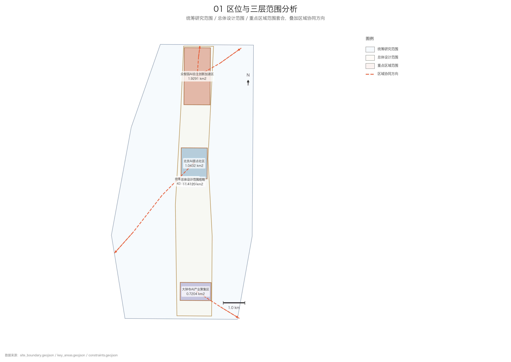
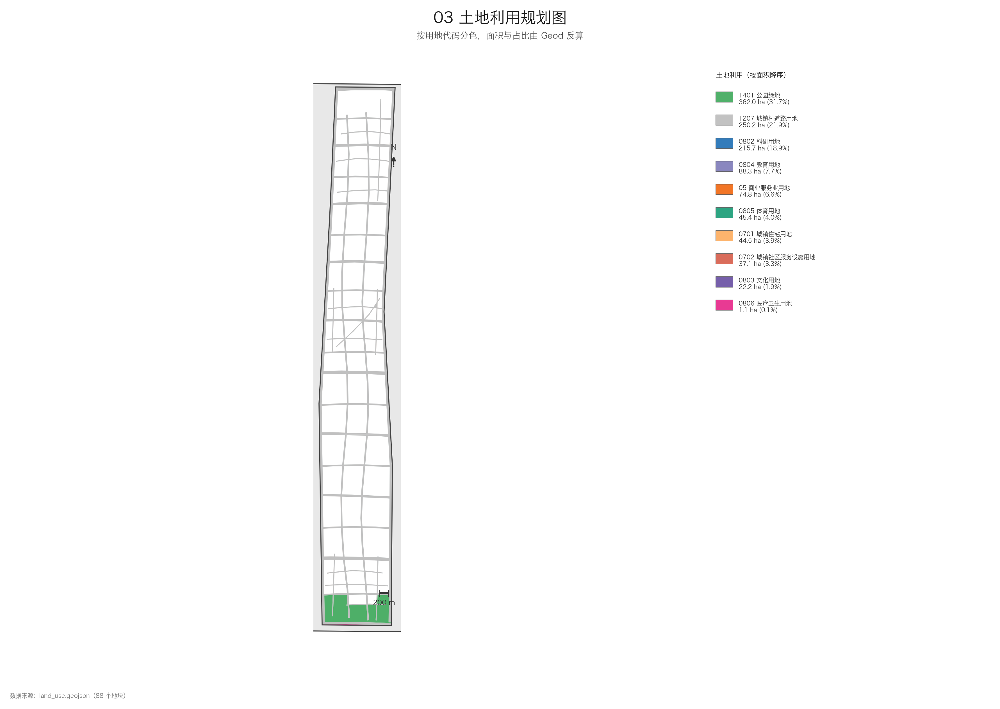
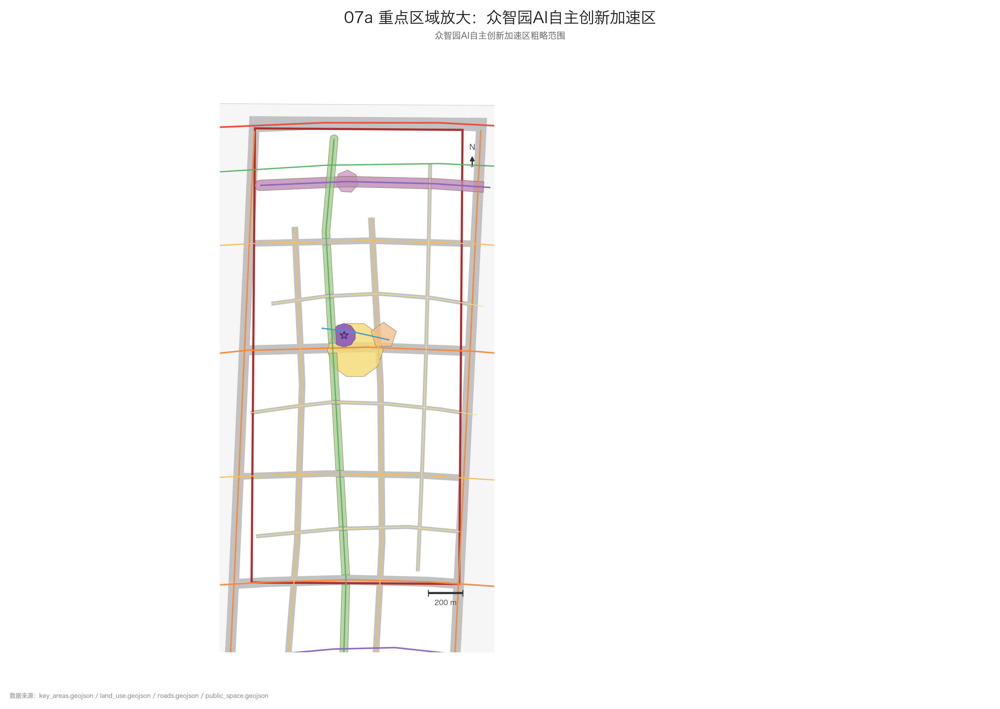
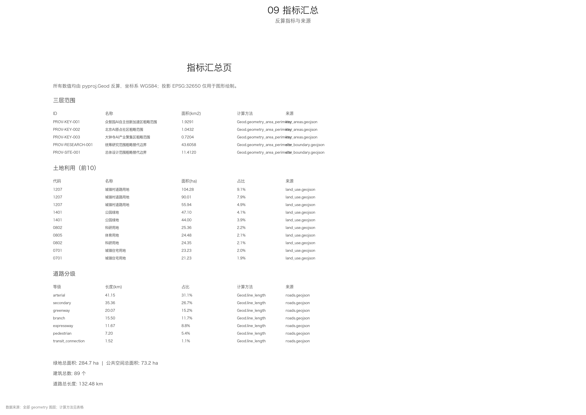
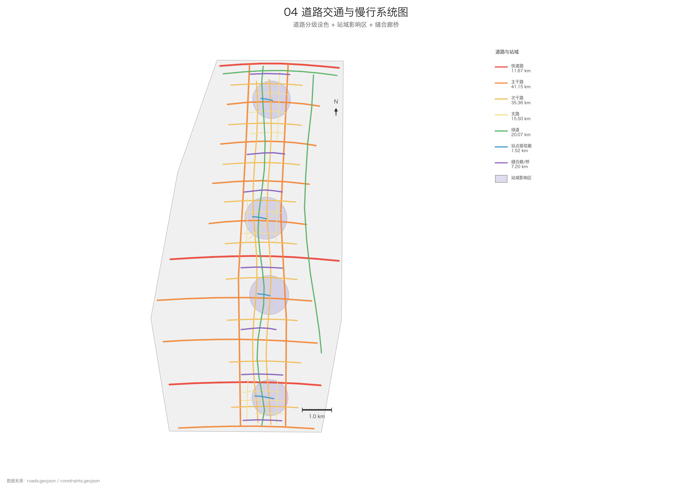

百年京张AI创新带·城市设计方案（人字折返 · 智创跃升）
以京张铁路人字形展线的折返抬升智慧为方法，把官方三区两翼组织成有方向、有闭环的智创回路；总体设计范围约11.41 km²，覆盖众智园/AI原点社区/大钟寺三处重点区域与中关村科技服务翼、小月河场景赋能翼；绿地率约25%，密路网+TOD，三期渐进式更新，全部指标可复算。
百年京张AI创新带·城市设计方案（人字折返 · 智创跃升）
1 设计依据与资料清单
1.1 编制依据与资料清单
本方案依据下列官方来源、标准与空间数据编制，全部几何与指标均可通过机器可读文件自动复核。
**官方来源（sources.json）**
- [source:SRC-2026-0518-AGENT-OPEN-CALL-TASKBOOK]
- [source:SRC-PROVISIONAL-BOUNDARIES-2026]
- [source:SRC-2026-BJ-GH-QUAL-PREANNOUNCEMENT]
- [source:SRC-2026-BJ-KW-THREE-AREAS-WINGS]
- [source:SRC-2017-MOHURD-URBAN-DESIGN-MEASURES]
- [source:SRC-MOHURD-CONTROL-DETAILED-PLANNING]
- [source:SRC-2026-HAIDIAN-1X1]
- [source:SRC-2023-MNR-LAND-USE-CLASSIFICATION]
- [source:SRC-OSM-COPYRIGHT]
**采用标准（standard_matrix.json）**
- PROJECT-OFFICIAL-ANNOUNCEMENT
- PROJECT-AGENT-OPEN-CALL-TASKBOOK
- MOHURD-URBAN-DESIGN-MEASURES
- MOHURD-CONTROL-DETAILED-PLANNING
- MNR-LAND-USE-CLASSIFICATION-GUIDE
- MOHURD-ARCH-DESIGN-DEPTH-2016
**空间数据（geometry/）**
- [data:geometry/site_boundary.geojson#PROV-SITE-001]
- [data:geometry/key_areas.geojson#PROV-KEY-001]
- [data:geometry/land_use.geojson#LU-1401-001]
- [data:geometry/buildings.geojson#BLDG-ZN-0802-001]
- [data:geometry/roads.geojson#RD-EXP-01]
- [data:geometry/green_space.geojson#GRN-01]
- [data:geometry/public_space.geojson#PUB-01]
- [data:geometry/constraints.geojson#PROV-RESEARCH-001]
- [data:geometry/phasing.geojson#PH-01]
> **边界性质说明**：本方案涉及的统筹研究范围（43.6 km²）、总体设计范围（11.4 km²）与重点区域范围（368.4 ha）均为官方**临时粗略边界**（[source:SRC-PROVISIONAL-BOUNDARIES-2026]），仅用于 AI 生成、展示与临时自检，**不得作为法定红线、审批依据或精确面积计算依据**。官方正式边界发布后须整体替换并重新复核。

2 三层范围工作框架
2.1 三层范围界定
| 层级 | 范围对象 | 实测面积 | 数据 | |---|---|---|---| | 统筹研究范围 | 区域产业协同与未来城市研究（面向未来科学城、怀柔科学城、北纬社区与京津冀） | 43.6058 km² | [data:geometry/constraints.geojson#PROV-RESEARCH-001] | | 总体设计范围 | 城市更新与控规深度城市设计主体 | 11.4120 km² | [data:geometry/site_boundary.geojson#PROV-SITE-001] | | 重点区域范围 | 三区（众智园、AI原点社区、大钟寺） | 3.6926 km² | [data:geometry/key_areas.geojson#PROV-KEY-001] 等 |
三处重点区域：众智园AI自主创新加速区 192.1 ha（[metric:ka_zhongzhiyuan_area_sqm]）、北京AI原点社区 104.3 ha（[metric:ka_yuandian_area_sqm]）、大钟寺AI产业聚集区 72.0 ha（[metric:ka_dazhongsi_area_sqm]），合计 368.4 ha，嵌套于总体设计范围 11.4 km² 之内，后者又嵌套于统筹研究范围 43.6 km² 之内 [source:SRC-2026-BJ-GH-QUAL-PREANNOUNCEMENT]。

3 统筹研究范围产业与未来城市研究
全球AI创新生态案例研究（8 个）
案例选择方法
官方要求 5–8 个全球AI创新生态案例 [source:SRC-2026-0518-AGENT-OPEN-CALL-TASKBOOK]。本方案选取 **8 个**，选择标准不是"知名度"，而是**机制原型的互斥性**：每个案例代表一种不同的创新生态组织方式，八个案例合起来穷举了当代AI创新生态的主要组织路径，从而使"京张一带该走哪条路"成为一个可比较、可论证的选择题，而不是一次任意的类比。
八类原型与其在**三区两翼**中的对位如下：
| 原型 | 案例 | 对位片区 | |---|---|---| | A 无边界社群型 | 旧金山「大脑谷」AI社群集聚区 | 北京AI原点社区 | | B 铁路棕地知识区型 | 伦敦国王十字知识区 | 大钟寺AI产业聚集区 / 京张遗址公园沿线 | | C 单体巨构孵化器型 | 巴黎 Station F 单体创业园 | 众智园AI自主创新加速区 | | D 国家级规划园区型 | 新加坡纬壹科技城 | 总体设计范围整体 | | E 政府主导专门AI集聚区型 | 首尔良才人工智能枢纽 | 小月河场景赋能翼 / 中关村科技服务翼 | | F 研究机构溢出型 | 蒙特利尔 Mila 人工智能研究生态 | 众智园AI自主创新加速区 | | G 中介服务机构枢纽型 | 多伦多 MaRS 创新枢纽 | 中关村科技服务翼 | | H 龙头企业带动特色小镇型 | 杭州云栖小镇 | 大钟寺AI产业聚集区 / 众智园AI自主创新加速区 |
数据纪律声明（重要）
本次征集资料包 brief/site-package/ 未提供任何境外或外埠创新生态的统计数据源 [source:SITE-PACKAGE]，missing-data.md 亦明确"这些数据没有从当前公开资料中取得，AI agent 不得自行编造" [source:SITE-PACKAGE]。因此：
- 本节及
_rework/data/cases.json中**全部案例规模数据只写量级、不写精确值**，并逐条标注对应的 A-CASE 系列假设编号（A-CASE-001 至 A-CASE-008）； - 其性质为"基于公开常识的量级推断"，是类比论证的辅助信息，**不构成事实性统计声称**；
- 专业团队深化时应以各案例官方年报或权威统计逐条重新核校，核校清单已写入
cases.json的verification_needed_zh字段。
本方案宁可牺牲数字的精确观感，也不制造无法追溯的引用。
案例总表 case_study_table
完整结构化数据见 _rework/data/cases.json（8 条，字段含地点、规模、核心机制、空间载体特征、对京张的启示、不可照搬原因、来源标注）。摘要如下：
| ID | 案例 | 核心机制一句话 | 对京张的关键启示 | 不可照搬的根本原因 | |---|---|---|---|---| | CASE-001 | 旧金山「大脑谷」 [assume:A-CASE-001] | 以黑客屋、演示日与高频线下聚会替代实体园区管委会，粘性来自"每周可遇见同行"的密度 | 把**偶遇密度**当作可设计的规划指标：在北京AI原点社区划定连续"可编程首层"界面，配置小面积短租研发单元与共享居住产品 | 底层燃料是全球最集中的风险资本与人员流动；其自组织特征意味着无人对公共服务、安全与合规负责，且士绅化外部性严重。京张一带是政府主导、涉及铁路遗产与既有居住社区的更新地区，不可复制其治理真空 | | CASE-002 | 伦敦国王十字知识区 [assume:A-CASE-002] | 单一开发主体长周期棕地更新，"先公共空间、后开发地块"；铁路构筑物保结构换功能；知识机构自愿结社 | 京张遗址公园应作为一带**最先成熟的公共产品**；沿线铁路附属构筑物按"保结构、换功能"转为AI体验载体；三区两翼组建非行政化知识机构联盟 | 前提是单一产权主体对整片棕地的长期持有，且其遗产法规与土地增值回收机制与我国国土空间规划体系差异显著。京张一带产权分散、含在用铁路设施与既有社区，无法"一家主体统一开发" | | CASE-003 | 巴黎 Station F [assume:A-CASE-003] | 一座铁路货运厅内的"多主理人格局"：空间租给数十个由大企业、高校、投资机构各自运营的垂直加速项目，公共服务统一采购后按工位分发 | 众智园引入**"一个屋顶下的多主理人"**：大跨度可整层贯通的研发共享单元分段由不同主理机构运营，合规/知产/算力/签证服务由一带统一供给按席位分发 | 依赖一处产权清晰、可整体保留的超大跨度废弃巨构，京张一带不具备同等体量；且其高度依赖私人基金会长期无偿投入，与国有平台运营模式不同 | | CASE-004 | 新加坡纬壹科技城 [assume:A-CASE-004] | "政府定方向、平台建载体、市场填内容"三层结构；产业组团错位布局，跨领域交叉发生在公共空间轴线上；载体规格随产业代际滚动更新 | 三层范围分级推进可参照其**载体标准化 + 分期供地**：编制面向AI产业的载体技术标准（承重、层高、供电、制冷、网络与算力接入），使各期楼宇可被不同代际AI企业连续使用 | 其土地基本国有、由单一法定机构统一持有，可实现二十年尺度整体持有与滚动更新。京张一带位于北京中心城建成区，产权分散、存量建筑与居民社区密集，无成片新建条件 | | CASE-005 | 首尔良才人工智能枢纽 [assume:A-CASE-005] | "先运营、后建设"：以存量楼宇改造起步，用公共算力、公共数据集、政府场景优先试用权三项刚性供给换取企业集聚 | **小月河场景赋能翼**与**中关村科技服务翼**采用"以场景试用权招引"：场景开放形成可申请、可评审、可退出的制度化通道，并以存量楼宇改造先行启动 | 其公共数据开放范围、个人信息保护制度与市政府对市属场景的直接处置权与我国数据分类分级管理不同；且其单点运营经验在跨五个片区协同时会失效 | | CASE-006 | 蒙特利尔 Mila [assume:A-CASE-006] | 以学术声誉为原点，通过联合实验室、企业驻场研究员、校友创业三通道溢出；政府以长期稳定基础经费而非项目制资助维持独立性 | 全栈自主的护城河是**基础研究而非载体**：众智园规划"无项目考核"的长期研究平台空间，企业驻场研究员与高校研究者混编工位、成果共同署名，载体嵌入城市街区、首层向公众开放 | 依赖单一学术带头人形成的国际声誉与长期非竞争性经费，此类声誉无法通过规划建设短期制造；不能假定研究声誉随建筑同步到位，故不可作为规模预测依据 | | CASE-007 | 多伦多 MaRS 创新枢纽 [assume:A-CASE-007] | 本体不是园区而是**科技服务机构**：把法律、知产、财税、合规准入、市场进入、投融资打包为分阶段顾问产品统一供给，并运营撮合平台 | **中关村科技服务翼**最直接的参照：科技服务应组织为有独立主体、有产品目录、有收费与考核机制的供给方；以"服务被三区调用的次数与满意度"作为翼域核心考核 | 其非营利治理结构与依托教学医院的临床验证优势在京张不存在；北京科技服务市场已高度发育，单一主体统包会挤出既有市场主体，故应以平台撮合而非自营垄断落地 | | CASE-008 | 杭州云栖小镇 [assume:A-CASE-008] | "龙头企业算力 + 年度大会品牌流量 + 地方政府空间政策"三者互换；品牌活动不是宣传附属品而是产业组织机制本身 | 年度旗舰大会应作为**产业组织机制**规划：配置万人量级峰值承载、平时可转展陈培训的弹性会展载体，并把议程设置权部分开放给开发者社区（承接 agent.6 的 EV-001/EV-003） | 其空间基础是城市边缘成片存量工业用地，可低成本快速改造；京张一带用地紧约束、人口密集、遗产与交通条件复杂。且单一龙头主导路径与"全栈自主、多主体协同"定位不符，本一带应多龙头共建 |
从八案例提炼的可迁移机制（8 条）与不可照搬边界（4 条）
**可迁移（构成本节后续机制设计的直接依据）**
1. **偶遇密度可规划**：创新强度与"每周可遇见同行的次数"正相关，可通过首层界面、步行尺度与固定时间锚点设计（CASE-001 → 北京AI原点社区、agent.6 的 EV-011）。 2. **公共空间先行**：公共产品在开发地块之前建成，是分散产权地区凝聚共识的最低成本手段（CASE-002 → 京张遗址公园）。 3. **遗产保结构换功能**：历史铁路构筑物应成为品牌资产而非改造负担（CASE-002 → 京张遗址公园沿线）。 4. **多主理人共用一栋楼**：一栋楼内由多个主理机构分段运营垂直加速项目，公共服务集中采购分发（CASE-003 → 众智园）。 5. **载体标准化**：以技术标准而非建筑风格保证楼宇跨代际可用（CASE-004 → 总体设计范围整体）。 6. **以场景试用权招引**：真实城市系统的试用权是比租金补贴更强的招引要素（CASE-005 → 小月河场景赋能翼）。 7. **科技服务产品化**：服务须有目录、有阶段、有价格、有考核（CASE-007 → 中关村科技服务翼）。 8. **大会即产业组织机制**：年度旗舰活动承担招引、组织与治理三重功能（CASE-008 → agent.6 全部年度活动）。
**明确不可照搬（本方案主动划出的四条边界）**
1. **不可复制治理真空**。京张一带涉及铁路遗产、在用设施与既有居住社区，必须有明确运营与责任主体，不能以"自组织"为名放弃公共服务与安全责任（针对 CASE-001）。 2. **不可假设单一产权与成片新建**。三区两翼位于北京中心城建成区，规划路径必须建立在**存量更新与分散产权协同**之上（针对 CASE-002、CASE-004、CASE-008）。 3. **不可把学术声誉当作可建设物**。研究引力需要长期非竞争性投入积累，规划只能提供其发生的空间条件，不能承诺其产出（针对 CASE-006）。 4. **不可由单一主体垄断服务或冠名**。中关村科技服务翼应以平台撮合方式运行，避免挤出北京既有高度发育的科技服务市场（针对 CASE-007、CASE-008）。
---
区域创新协同（产业分工视角）
本一带不是孤立园区，其生态需与北京乃至京津冀既有创新载体形成**分工而非同质竞争**。以下从产业链位置角度提出协同思路（空间层面的区域协同关系详见 agent.1 对应章节，此处不重复）：
| 协同对象 | 其产业链位置 | 与本一带的分工建议 | |---|---|---| | **怀柔科学城** | 大科学装置与基础研究前端 | 承接其基础研究成果的**工程化与跨层适配验证**，本一带不重复布局大科学装置 | | **未来科学城** | 能源、材料等领域的企业研发集群 | 向其输出AI工具链与模型能力，从其获取**行业垂直场景**，形成 F6 场景流的域外延伸 | | **北纬社区** | 相邻的创新社区型载体 | 与北京AI原点社区在青年创新人群上**共享活动日历与社区准入**，避免两处同时建设同质化孵化空间 | | **京津冀** | 制造、能源与算力腹地 | 承接域外训练算力集群供给（对应 E6 分布式算力机制），本一带保留推理与边缘节点；AI应用向区域制造业外溢 |
---
4 总体设计范围城市更新与控规深度城市设计
1 总体概念：从「人字形展线」到「人本智创回路」
1.1 概念的来源：一条铁路留下的空间智慧
百年京张AI创新带的场地里埋着一条中国人自己勘测、自己设计、自己修筑的铁路。这条铁路留给今天最有价值的遗产不是钢轨本身，而是一种**解决"爬不上去"问题的空间方法**——人字形展线。当坡度超过机车的直接爬升能力时，工程师没有硬冲，而是让列车**先前进、再折返、每折返一次抬升一个高程**。用横向的迂回，换取纵向的跃升。
今天这片土地面对的是另一种"坡度"：AI 的技术迭代速度远快于城市空间的更新速度，实验室里的模型能力与城市里的真实需求之间存在一道陡坎。绝大多数创新区的做法是"直冲"——建楼、招商、给政策，指望技术自己走完从论文到街道的全程。本方案主张换一种方法：**把"折返"制度化**，让技术在三区与两翼之间来回走，每走完一圈，就带回一次真实城市的检验结果，从而抬升一个能级。
因此，本方案的总体概念是：
> **人字折返 · 智创跃升 —— 一条以「人」为形、以回路为法的 AI 创新带。** > > 「人」既是京张铁路人字形展线的字形，也是人工智能必须回答的根本对象；「折返」既是百年前那趟列车的爬坡方式，也是本方案为 AI 与城市之间设计的迭代机制。
这一概念不是修辞。它在本方案中被严格转译为三件可执行的事：其一，**空间骨架**——官方「三区两翼」被组织成一个有方向、有闭环的回路，而不是五块并列的功能板块（详见第 4 节）；其二，**视觉识别**——Logo 的几何构造直接编码「三区两翼」的拓扑关系，标识即结构图（详见第 3 节）；其三，**命名体系**——所有名称由同一套构词法生成，可推演、可扩展、可校验（详见第 2 节）。
1.2 概念与官方框架的对位关系
本方案不新造空间结构。官方已经给定的「三大定位」「五大功能」「三区两翼」[source:SRC-2026-0518-AGENT-OPEN-CALL-TASKBOOK][source:SRC-2026-BJ-KW-THREE-AREAS-WINGS] 是本方案的骨架，本概念只补两个**连接件**，用于解决官方框架中未被显化的两个问题：
| 官方框架未显化的问题 | 本方案补充的连接件 | 性质 | |---|---|---| | 「百年京张文化带」这一定位缺少连续的物质载体——三区是三块离散的面，文化带需要一条线 | **京张文化脊**：沿京张遗址公园南北贯通的文化—慢行—叙事复合脊线，串起三区、锚定两翼 [assume:A-STR-001] | 三区两翼的**纵向连接件** | | 三区与两翼之间"谁给谁什么、给完之后怎么回来"没有约定，容易退化为并列罗列 | **智创回路**：三区与两翼之间六类要素的正向流与反馈流闭环 [assume:A-LOOP-001] | 三区两翼的**机制连接件** |
需要明确：脊与回路**从属于**「三区两翼」，是它的连接件，不是它的替代物。本方案全文的空间主语始终是「三区两翼」。
---
2 主名称、英文名称与命名体系
2.1 主名称与释义
**主名称沿用官方名称，不另起炉灶：百年京张AI创新带** [source:SRC-2026-BJ-GH-QUAL-PREANNOUNCEMENT]。
理由有三：第一，官方名称已在资格预审公告中公开发布，具备法定语境下的唯一性；第二，"百年京张"四字同时承载了时间纵深（百年）与地理张力（京—张两端），是极难被替代的语义资产；第三，任务书明确禁止"只提交口号式命名"与"照搬城市、园区或企业名称"[source:SRC-2026-0518-AGENT-OPEN-CALL-TASKBOOK]，因此本方案的工作重心不是换名，而是**为这个名称建立一套可向下推演的命名体系**。
本方案为主名称配置三层附加语义：
| 层 | 内容 | 用途 | |---|---|---| | 概念名 | 人字折返 · 智创跃升 | 用于方案叙述、图纸标题、评审沟通 | | 传播主张 | 让每一次折返，都抬升一次 | 用于对内动员与活动主视觉 | | 国际口号 | *Where intelligence turns, the city rises.* | 用于国际传播（详见 S5 国际传播叙事） |
概念名与口号**不替代主名称**，在任何正式材料中均以副标题形式出现，主名称字号不得小于概念名 [assume:A-NAM-001]。
2.2 英文名称与国际短名
英文命名采用**双轨制**：正式名走拼音制以保证与中文法定名称的一一对应，传播名走意译制以保证国际可读性 [assume:A-NAM-002]。
| 用途 | 英文名称 | 使用场景 | |---|---|---| | 正式全称 | **Centennial Jingzhang AI Innovation Belt** | 正式文件、图纸图签、协议、学术引用 | | 正式缩写 | **CJAIB** | 图纸编号、文件命名、数据字段前缀 | | 国际传播短名 | **Jingzhang AI Belt** | 新闻稿、展览、国际会议、网站标题 | | 口语短名 | **the Jingzhang Belt** / **the Belt** | 口头交流、二次提及 | | 数字身份把手 | **#JingzhangAIBelt** | 社交媒体、开源仓库、开发者社区 |
**首次出现规则**：任何国际材料中首次出现须写全称并附中文，格式为 Centennial Jingzhang AI Innovation Belt（百年京张AI创新带），二次及以后可用短名。**禁止**在国际材料中把 "Jingzhang" 意译为 "Beijing–Zhangjiakou"，因为京张已经是一个专有文化符号而非两个地名的简写 [assume:A-NAM-002]。
2.3 命名体系：三段式构词法
本命名体系的核心是一条可机器校验的构词式 [assume:A-NAM-001]：
`` 〔专名〕 + 〔功能素〕 + 〔类型通名〕 ↓ ↓ ↓ 从四类词库取 五大功能缩略 分层通名词典 ``
**（1）专名词库（四类，闭集，新增须审定）**
| 类别 | 说明 | 可用词示例 | |---|---|---| | P1 京张史实词 | 源自京张铁路建设史与线路技术史的公共词汇 | 人字、展线、里程、折返、道岔、驿、清华园 | | P2 现状地名词 | 场地内外的公开地名 | 小月河、大钟寺、五道口、学院路、北下关、众智园 | | P3 创新史词 | 中关村创新历程中已进入公共话语的**非企业**词汇 | 原点、电子街、创业大街、开源 | | P4 AI 技术公共词 | 已成为公共知识的 AI 技术术语 | 原点、对齐、涌现、语料、推理、算力、智能体 |
**词库禁忌（硬约束）** [assume:A-NAM-001]：
- 禁止使用任何企业名称、产品名称、商标、注册服务标记，包括曾经的知名企业名——中关村创新史中的企业故事只可作为 S5 的**历史叙述**，不可作为任何空间、地标或活动的名称；
- 禁止使用在世人物姓名；
- 历史人物（如京张铁路的总工程师）只以史实方式在文本与展陈中叙述，**不作为任何区域、地标、活动或品牌的名称**，以规避肖像权、姓名权与"照搬名人"的评审风险；
- 禁止照搬其他城市、园区、开发区的既有名称（例如以"某某硅谷""某某湾区"命名）；
- 禁止使用带有排他性、等级暗示或绝对化表述的词（如"第一""唯一""中心之心"）。
**（2）功能素（五选一或不带）**
功能素是「五大功能」的单/双字缩略，使名称本身携带功能信息 [source:SRC-2026-0518-AGENT-OPEN-CALL-TASKBOOK]：
| 五大功能 | 功能素 | 英文功能素 | |---|---|---| | AI全栈自主创新体系 | 自主 | Full-Stack | | 世界级AI创新生态 | 生态 | Ecosystem | | AI+场景赋能新范式 | 场景 | Scenario | | 智能化AI活力城市 | 活力 | Vibrant | | AI治理全球话语权 | 治理 | Governance |
**（3）类型通名词典（分层，闭集）**
| 层级 | 中文通名 | 英文通名 | 适用对象 | |---|---|---|---| | L0 带 | 带 | Belt | 一带整体，全域唯一 | | L1 区 | 区 / 社区 / 集聚区 | Zone / Community / Cluster | 三区 | | L2 翼 | 翼 | Wing | 两翼 | | L3 连接件 | 脊 / 回路 / 廊 | Spine / Loop / Corridor | 京张文化脊、智创回路、缝合廊 | | L4 节点 | 园 / 场 / 台 / 埠 / 驿 / 径 | Garden / Square / Terrace / Wharf / Halt / Trail | 公共空间与文化节点 | | L5 地标 | 碑 / 钟 / 墙 / 塔 | Monument / Bell / Wall / Tower | AI朝圣地标 | | L6 活动 | 大会 / 挑战赛 / 节 / 周 / 日 | Summit / Challenge / Festival / Week / Day | 年度活动体系 |
**「驿」的专项规则** [assume:A-NAM-003]：京张铁路沿线历史上分布着车站与乘降所，本方案将「驿」定为**一带全部文化锚点的统一通名**，英文对应 Halt（铁路小站）。凡位于京张文化脊上、承担历史叙事与公共服务复合功能的节点，一律命名为「〔专名〕驿」。这条规则使一带上的文化节点系统在名称层面自动获得可识别性与可扩展性——未来新增节点无需重新设计名称，只需从 P1/P2 词库取专名即可。
**「原点里程」规则** [assume:A-NAM-003]：京张铁路有其真实的历史里程系统（K 系列）。为避免混淆与历史误读，本方案在京张文化脊上另设一套**叙事用的原点里程编码 O0–On（O 取自 Origin）**，仅用于导视、展陈与传播，O0 锚定于北京AI原点社区的 AI零公里碑。该编码**不是京张铁路的历史里程，也不改变、不替代任何法定地名、路名或门牌**，属于文化标识层，与法定地名系统在载体、字体与色彩上物理分离，详见 S5 第 4.3 节。
2.4 命名的生成校验与治理
任何新名称进入体系须过三道闸 [assume:A-NAM-001]：
1. **词库准入**：专名必须来自 P1–P4 闭集，否则须经命名审定程序扩充词库； 2. **构词校验**：可用一条正则式机器校验——^(P1|P2|P3|P4)(自主|生态|场景|活力|治理)?(带|区|社区|集聚区|翼|脊|回路|廊|园|场|台|埠|驿|径|碑|钟|墙|塔|大会|挑战赛|节|周|日)$； 3. **权利复核**：商标近似检索、既有地名冲突检索、公众可接受度抽样；对拟用于国际传播的名称，另做英文语义与俚语风险检索。
每个名称在数据层获得一个编码 CJAIB-<层级码>-<序号>，层级码为 BELT / ZN / WG / LK / ND / LM / EV，与 _rework/data/naming.json 中的 id 字段一一对应。
2.5 命名清单摘要
全量命名条目见 _rework/data/naming.json（共 26 条 [assume:A-NAM-001]），此处摘录骨架层与代表性节点：
| 层级 | 中文名 | 英文名 | 构词依据 | |---|---|---|---| | 带 | 百年京张AI创新带 | Centennial Jingzhang AI Innovation Belt | 官方名称沿用 | | 区（北） | 众智园AI自主创新加速区 | Zhongzhiyuan AI Full-Stack Acceleration Zone | 官方名称 + 功能素「自主」显化 | | 区（中） | 北京AI原点社区 | Beijing AI Origin Community | 官方名称；Origin 为高价值国际词 | | 区（南） | 大钟寺AI产业聚集区 | Dazhongsi AI Industry Cluster | 官方名称；传播名 Great Bell Cluster | | 翼（西） | 中关村科技服务翼 | Zhongguancun Technology Service Wing | 官方名称；短名 West Wing | | 翼（东） | 小月河场景赋能翼 | Xiaoyuehe Scenario Empowerment Wing | 官方名称；短名 East Wing | | 连接件 | 京张文化脊 | Jingzhang Culture Spine | P1 专名 + L3 通名 | | 连接件 | 智创回路 | Intelligence Switchback Loop | 概念名转译 + L3 通名 | | 节点 | 清华园驿 | Tsinghuayuan Halt | P1/P2 专名 + L4「驿」 | | 节点 | 小月河场景埠 | Xiaoyuehe Scenario Wharf | P2 专名 + 功能素「场景」+ L4「埠」 | | 地标 | AI零公里碑 | AI Kilometre Zero | P4 + P1 里程制 + L5「碑」 | | 地标 | 算力之钟 | The Compute Bell | P4「算力」+ P2 大钟寺意象 + L5「钟」 | | 活动 | 原点大会 | ORIGIN Summit | P3/P4「原点」+ L6「大会」 |
---
3 视觉识别与Logo方向
> 本节给出的是**可交付执行的设计说明**，不是风格描述。所有几何参数、色值与字体许可条件均为本方案建议，正式制作前须由专业设计团队完成打样校色与权利检索 [assume:A-VIS-001]。 > 本节所述为**一带整体 Logo 系统**；S5 所述为**文化标识与符号系统**。两者在层级、载体与授权上严格分离，不得混用（见 3.7 与 S5 第 4 节）。
3.1 形意来源与三重读法
Logo 的图形母题只取一个：**人字形展线的平面几何**。这个母题之所以成立，是因为它同时能被读出三层含义，而三层含义都指向本项目本身：
| 读法 | 所见 | 所指 | |---|---|---| | 读法一 · 人 | 一个「人」字 | 京张铁路人字形展线；以人为本的 AI 治理原则 [source:SRC-2026-0518-AGENT-OPEN-CALL-TASKBOOK] | | 读法二 · 神经元 | 一个胞体 + 两条轴突 | 人工智能的最小结构单元 | | 读法三 · 道岔 | 一主两支的铁路道岔 | 要素的分流与汇流，即协同回路 |
三种读法共用同一套线条，不需要切换版本。这是本 Logo 方向区别于"贴科技感"的关键：**图形不是装饰，它就是空间结构图的压缩形式**。
3.2 图形构造规则
以 24×24 单位方格为构图网格，坐标原点取左上角，x 向右、y 向下 [assume:A-VIS-001]：
**主笔（纵轴 = 京张文化脊，南北贯通）**
- 位置：x = 12（垂直居中）；起讫：y = 3 至 y = 21；笔宽 = 2 单位；端头为平头（表征线路的延续性，而非闭合）。
**三点（= 三区，自上而下对应自北向南）**
- 上点：圆心 (12, 6)，外径 4 单位，**空心环**，环宽 1 单位 —— 众智园AI自主创新加速区；
- 中点：圆心 (12, 12)，外径 5 单位，**实心** —— 北京AI原点社区，是全图唯一实心元素，亦是原点里程 O0；
- 下点：圆心 (12, 18)，外径 4 单位，**空心环**，环宽 1 单位 —— 大钟寺AI产业聚集区。
三点的空心/实心差异承担两个功能：视觉上建立中心，语义上标注"原点"。
**两斜笔（= 两翼）**
- 左斜笔：自 (12, 12) 向左下延伸至 (3.5, 20)，与纵轴夹角 **47°**，笔宽 2 单位 —— 中关村科技服务翼；
- 右斜笔：自 (12, 12) 向右下延伸至 (20.5, 20)，与纵轴夹角 **47°**，笔宽 2 单位 —— 小月河场景赋能翼；
- 两斜笔在与中点相接处**各留 0.8 单位空隙**，使实心中点"悬浮"于骨架之中。这道空隙是整个标识的语义核心：它是**折返点**——要素在此断开、掉头、回流，而不是直通。
**负空间**
- 两斜笔与中点下方的纵轴共同在负空间中构成一个开口向上的「人」字轮廓。设计交付时须提供负空间轮廓的独立路径文件，用于镂空、烫印与地面铺装。
**版本要求** | 版本 | 规格 | 用途 | |---|---|---| | 标准版 | 上述完整几何 | 主视觉、图纸图签 | | 小尺寸版 | 三点全部实心，空隙加宽至 1.2 单位 | 印刷 < 12 mm、屏幕 < 32 px | | 单色版 | 全部 100% 单色，靠形状区分层级 | 传真、雕刻、单色印刷 | | 反白版 | 图形留白、底色实铺 | 深色背景 | | 线性版 | 全部转为 1 单位描边、无填充 | 导视刻蚀、金属工艺 | | 印章版 | 图形置于 24×24 方框内、阳文 | 荣誉体系钤印（配合 S4 荣誉展示体系） |
**最小使用尺寸**：印刷 8 mm 高，屏幕 24 px 高；**安全空间**：四周留白不小于中点直径（5 单位）[assume:A-VIS-001]。
3.3 色彩系统
主色 60%、辅色 25%、强调色 10%、中性 5% [assume:A-VIS-002]。CMYK 为 sRGB 换算近似值，须以印刷打样为准。
| 角色 | 色名 | HEX | CMYK（近似） | 色彩来源 | |---|---|---|---|---| | 主色一 | 京张铁红 | #A8382B | C0 M67 Y74 K34 | 京张铁路老站房清水砖与钢轨氧化色 | | 主色二 | 原点墨青 | #0E2A38 | C75 M25 Y0 K78 | 深夜机房与中国墨色，承载理性与正式 | | 辅色一 | 算力青 | #00A6A6 | C100 M0 Y0 K35 | 数据流与算力，用于活性信息 | | 辅色二 | 展线金 | #C8963C | C0 M25 Y70 K22 | 大钟寺铜钟色，用于荣誉与里程 | | 辅色三 | 月河绿 | #4A7C59 | C40 M0 Y28 K51 | 小月河与蓝绿系统 | | 中性一 | 站台灰 | #6E7679 | C9 M2 Y0 K53 | 站台构筑物，用于次级信息 | | 中性二 | 纸白 | #F4F1EA | C0 M1 Y4 K4 | 图纸与展陈底色 |
**对比度与可及性约束（以纸白 #F4F1EA 为底，sRGB 计算）** [assume:A-VIS-002]：
| 前景色 | 对比度 | 允许用法 | |---|---|---| | 原点墨青 | 13.2 : 1 | 正文、小字、任意场景（达 WCAG AAA） | | 京张铁红 | 5.7 : 1 | 正文与标题（达 AA），不用于 AAA 场景 | | 月河绿 | 4.3 : 1 | 大字（≥ 18 pt）与图形，不用于正文 | | 站台灰 | 4.1 : 1 | 大字与辅助信息，不用于正文 | | 算力青 | 2.7 : 1 | **禁止**用于纸白底上的文字；仅用于图形、且必须叠加形状编码 | | 展线金 | 2.4 : 1 | **禁止**用于纸白底上的文字；仅用于装饰与金属工艺 |
算力青与展线金在**原点墨青底**上的对比度分别为 5.0 : 1 与 5.6 : 1，因此这两色的文字用法**只允许出现在深色底**。
**色盲友好硬规则**：京张铁红与月河绿在红绿色觉异常下存在混淆风险，因此**颜色不得作为任何信息的唯一编码维度**——所有以色彩区分的内容必须同时叠加形状或纹理编码（见 3.4 图形母题库）[assume:A-VIS-002]。
3.4 图形母题库
母题库是 Logo 的延展语汇，用于在不重复使用 Logo 本体的前提下保持识别性 [assume:A-VIS-001]：
| 编号 | 母题 | 几何 | 主要用途 | |---|---|---|---| | M1 | 展线折线 | 47° 折返的连续折线 | 分隔线、页眉页脚、地面铺装、导视带 | | M2 | 里程刻度 | 等距短刻度 + 编号 O0…On | 数据图轴线、导视柱、原点里程标 | | M3 | 道岔分流 | 一主两支的分叉与合并 | 回路图、流程图、生态图谱 | | M4 | 钟纹同心 | 同心圆环 + 断口 | 算力/时间类信息图、算力之钟界面 | | M5 | 语料点阵 | 规则点阵，点径随数值变化 | 底纹、数据密度表达 |
母题使用规则：同一画面中母题不超过两种；M1 与 M3 不得同时出现（几何过近，会削弱识别）。
3.5 字体系统与授权边界
任务书明确禁止"未经授权使用字体"[source:SRC-2026-0518-AGENT-OPEN-CALL-TASKBOOK]，因此本方案**只推荐采用开源可商用许可的字体族**，并要求在使用前复核许可版本 [assume:A-VIS-003]：
| 用途 | 字体方向 | 许可要求 | 字形要求 | |---|---|---|---| | 中文标题 | 几何骨架的无衬线体（思源黑体族方向） | SIL OFL 或同等可商用开源许可 | 字面方正、中宫略收、笔画等线、竖画不带装饰 | | 中文正文 | 同族较细字重 | 同上 | 字重 Regular/Light，行距不小于 1.7 倍 | | 中文文化叙事 | 楷体方向的开源字体族 | SIL OFL | 仅用于 S5 文化叙事与展陈引文，不用于导视 | | 英文标题与正文 | 中性人文无衬线（Inter / Source Sans 3 方向） | SIL OFL | 与中文标题的 x-height 视觉对齐 | | 数字与指标 | 等宽字体（IBM Plex Mono / Source Code Pro 方向） | SIL OFL / Apache-2.0 | 表格数字须为等宽等高，呼应里程与算力读数 |
**禁止事项**：禁止对开源字体进行改造后声称为"专有字体"；禁止在未取得授权的情况下使用任何商业字库；如需定制字体，须以开源字体为基底并按其许可条款处理衍生作品 [assume:A-VIS-003]。
3.6 动态标识
Logo 的动态版本只做一件事：**演示折返**。动画序列为——两斜笔自中点向外生长（0–0.6 s）→ 到达端点后回缩（0.6–1.0 s）→ 中点亮度提升一档并停留（1.0–1.4 s）。整个动作循环表达"出去—回来—抬升"[assume:A-VIS-004]。
进阶建议（属概念建议）：中点的脉动周期可与一项**公开可核验的指标**绑定，例如一带公共算力的开放时长或开源社区的月度贡献数。此类绑定须满足三个前提——指标口径公开、数据源可追溯、无个人信息，且须由运营主体另行确定，本方案不预设任何具体数值 [assume:A-VIS-004]。
3.7 应用场景与使用禁则
**应用场景**：图纸图签与文件封面；导视与标识系统的顶层标记；开发者徽章与开源仓库标识；年度活动主视觉；荣誉体系钤印；公共装置的铭牌；数字孪生界面与开放数据门户的标头。
**使用禁则** [assume:A-VIS-001]： 1. 不得与任何政府机构徽标并置于同一视觉单元内，避免形成官方背书暗示；所有物料须标注"开放共创建议"字样； 2. 不得使用未授权的字体、图片、商标、人物肖像或论文图像； 3. 不得拉伸、倾斜、加描边阴影、渐变填充或替换母题角度（47° 为固定值）； 4. 不得将一带 Logo 与 S5 的文化符号系统混合成一个新标记——两套系统在层级上是"品牌 / 内容"关系，可同屏但须有明确的层级间距与尺寸差； 5. 不得用于任何商业产品背书。
---
4 三大定位、五大功能与三区两翼协同回路
4.1 三大定位的空间落位
「三大定位」为官方给定 [source:SRC-2026-0518-AGENT-OPEN-CALL-TASKBOOK]。本方案的工作是把三个定位从口号变成有承载物的空间事实：
| 定位 | 主要空间载体 | 载体性质 | 检验方式 | |---|---|---|---| | **百年京张文化带** | 京张文化脊（沿京张遗址公园南北贯通）[assume:A-STR-001] | 线性载体，串联三区、锚定两翼 | 步行可达性与叙事连续性（详见 S5） | | **都市AI生活体验带** | 小月河场景赋能翼 + 北京AI原点社区 + 大钟寺AI产业聚集区 | 面状载体，日常生活密度最高的三处 | AI场景卡的可体验性（详见 S3） | | **AI融合创新带** | 众智园AI自主创新加速区 + 中关村科技服务翼 + 北京AI原点社区 | 面状载体，创新要素密度最高的三处 | 生态图谱的要素完备度（详见 S2） |
三个定位在空间上**故意重叠**于北京AI原点社区——这是本方案的判断：一个真正的"原点"必须同时是文化的、生活的和创新的，否则它只是一块产业用地。北京AI原点社区规模 104.3 ha [data:geometry/key_areas.geojson#PROV-KEY-002]，是三区中体量居中的一处，恰适合承担这种复合角色。
4.2 五大功能的承载分工
「五大功能」为官方给定 [source:SRC-2026-0518-AGENT-OPEN-CALL-TASKBOOK]。任务书同时给出了三区两翼各自的官方角色表述，本方案严格据此分工，不作改写：
| 五大功能 | 主承载单元 | 官方角色依据 | 深化章节 | |---|---|---|---| | **AI全栈自主创新体系** | 众智园AI自主创新加速区（192.1 ha [data:geometry/key_areas.geojson#PROV-KEY-001]） | 官方表述「AI全栈自主体系与AI治理全球话语权」 | S2 | | **世界级AI创新生态** | 北京AI原点社区 + 中关村科技服务翼 | 官方表述「世界级AI创新生态」「要素全球化配置、中关村IP与资本赋能」 | S2 | | **AI+场景赋能新范式** | 小月河场景赋能翼 | 官方表述「AI场景赋能与智能化AI活力城市」 | S3 | | **智能化AI活力城市** | 大钟寺AI产业聚集区（72.0 ha [data:geometry/key_areas.geojson#PROV-KEY-003]） + 小月河场景赋能翼 | 官方表述「智能原生新业态」 | S3 / S4 | | **AI治理全球话语权** | 众智园AI自主创新加速区 | 官方表述同上 | S2 / S6 |
4.3 三区两翼空间骨架
「三区两翼」是本方案的空间主骨架 [source:SRC-2026-BJ-KW-THREE-AREAS-WINGS]。其空间关系可以用一句话概括：**三区沿南北成串，两翼向东西张开，串与翼在北京AI原点社区处交汇。**
**三区（自北向南，纵向成串）**
| 位序 | 名称 | 规模 | 在回路中的角色 | |---|---|---|---| | 北 | 众智园AI自主创新加速区 | 192.1 ha [data:geometry/key_areas.geojson#PROV-KEY-001] | **策源端**：全栈自主技术的产出方与治理规则的策源方 | | 中 | 北京AI原点社区 | 104.3 ha [data:geometry/key_areas.geojson#PROV-KEY-002] | **枢纽端**：要素在此换向、汇合、再分配；回路的折返点 | | 南 | 大钟寺AI产业聚集区 | 72.0 ha [data:geometry/key_areas.geojson#PROV-KEY-003] | **兑现端**：经城市验证的技术在此转为智能原生消费与商务 |
三区合计构成重点区域范围，公告约 368.4 ha、三片几何实算 369.3 ha [data:brief/site-package/geometry/provisional_boundaries.geojson#PROV-KEY-SCOPE-001]（该 MultiPolygon 的三个 part 与本方案 [data:geometry/key_areas.geojson#PROV-KEY-001]、[data:geometry/key_areas.geojson#PROV-KEY-002]、[data:geometry/key_areas.geojson#PROV-KEY-003] 逐字节相同，为避免重复几何不再重复输出），嵌套于总体设计范围 11.4 km² [data:geometry/site_boundary.geojson#PROV-SITE-001] 之内，后者又嵌套于统筹研究范围 43.6 km² [data:geometry/constraints.geojson#PROV-RESEARCH-001] 之内（统筹研究范围为分析性上位范围，非设计场地本体，故承载于约束层而不进入 site_boundary.geojson，以免污染官方空间复核的场地覆盖率分母）。
**两翼（东西张开）**
| 翼 | 名称 | 概念性翼域 | 在回路中的角色 | |---|---|---|---| | 西翼 | **中关村科技服务翼** | [data:geometry/constraints.geojson#WING-ZGC] | **配置端**：把技术转成可交易、可投资、可国际化的资产 | | 东翼 | **小月河场景赋能翼** | [data:geometry/constraints.geojson#WING-XYH] | **验证端**：把技术投放到真实城市场景，产出验证结论与反馈 |
两翼为**概念性翼域**，是要素供给与场景供给的作用范围，不是行政边界、不是权属边界、不是控制线 [assume:A-STR-002]。翼域几何为本方案自设，与三区几何不重合。
**连接件**
- **京张文化脊**：[data:geometry/constraints.geojson#LOOP-06] —— 承载「百年京张文化带」定位，实现**南北贯通**；
- **东西缝合廊**：[data:geometry/constraints.geojson#LOOP-03]、[data:geometry/constraints.geojson#LOOP-04]、[data:geometry/constraints.geojson#LOOP-05] —— 横向跨越铁路遗产线两侧，实现**东西缝合**，其具体公共空间设计详见 S4；
- **智创回路**：[data:geometry/constraints.geojson#LOOP-01]、[data:geometry/constraints.geojson#LOOP-02] —— 要素流动的闭环示意，是机制的空间投影。
4.4 协同回路：折返抬升机制
这是本方案对官方框架最实质的补充。**协同回路不是"三区两翼互相配合"这样一句话，而是一个有方向、有交接物、有反馈、有触发点、有失效处置的四段闭环** [assume:A-LOOP-001]：
`` ┌──────────────── ④ 抬升段 ────────────────┐ │ │ ↓ │ ①策源段 │ 众智园AI自主创新加速区 ──→ ②配置段 ──→ ③验证段 ──┘ （产出全栈自主技术栈） 中关村科技 小月河场景 服务翼 赋能翼 （转为资产） （投放真实场景） │ │ └──→ 北京AI原点社区 ←──┘ （折返点：汇合·换向·再分配） ``
| 段 | 起点 → 终点 | 交接物（可清点） | 完成标志 | |---|---|---|---| | ① **策源段** | 众智园AI自主创新加速区 → 中关村科技服务翼 | 全栈自主技术栈的一个可交付单元（模型、框架、智能体或工具链）+ 技术说明与许可条款 | 技术单元进入西翼的技术资产台账 | | ② **配置段** | 中关村科技服务翼 → 小月河场景赋能翼 | "可投放技术包"：技术单元 + 知识产权状态 + 合规评估 + 资金安排建议 + 国际化路径建议 | 技术包获得进入场景的准入结论 | | ③ **验证段** | 小月河场景赋能翼 → 北京AI原点社区 | "场景验证档案"：真实环境表现数据、失效案例、用户反馈、人工复核记录、隐私合规结论 | 验证档案完成人工复核并归档 | | ④ **抬升段** | 北京AI原点社区 → 众智园 / 大钟寺 | 向北：缺陷清单 + 公共语料增量 + 评测集更新，回到策源；向南：验证资质 + 可商用结论，进入大钟寺的智能原生消费与商务 | 下一轮技术单元的需求书生成 |
**为什么叫"抬升"**：每完成一圈，技术单元获得一件上一圈没有的东西——真实城市的失效数据。这件东西无法在实验室生成，也无法购买。它是这条回路唯一的、不可替代的产物，也是本方案认为一带相对于其他 AI 园区的根本竞争力所在。
4.5 六类要素的流向与反馈
回路上流动的不是抽象的"创新"，而是六类可清点的要素 [assume:A-LOOP-002]：
| 要素 | 正向流（策源 → 市场） | 反馈流（市场 → 策源） | 闭环触发点 | 深化章节 | |---|---|---|---|---| | **技术** | 众智园产出技术单元 → 西翼封装为技术包 → 东翼投放试用 | 东翼的失效案例与边界条件 → 众智园缺陷库与下一版需求 | 小月河场景埠的定期回流评审 | S2 | | **人才** | 学院路沿线高校与院所 → 北京AI原点社区 → 三区企业与团队 | 企业真实问题 → 高校课题与联合培养命题 | 学院路对齐廊的双向挂榜 | S2 / S3 | | **资本** | 中关村科技服务翼的资本与服务 → 三区项目 | 场景验证档案 → 直接作为投资尽调的技术证据 | "验证即尽调"：验证档案与尽调材料共用一套凭据 | S2 | | **场景** | 东翼发布开放场景清单 → 三区揭榜 | 揭榜与试用结果 → 场景清单的迭代与退出 | 年度场景开放日 | S3 / S6 | | **数据与语料** | 公共部门与运营方按授权供给 → 北京AI原点社区的公共语料与评测资源池 | 模型能力回哺城市治理与公共服务 | 数据授权与人工复核双闸 | S2 / S3 | | **算力** | 众智园算力向全带调度 | 使用画像 → 算力配置与开放规则调整 | 算力之钟的公开公示 | S2 / S4 |
**反馈流是这套机制的关键，也是最容易缺失的一环。** 多数创新区只设计了正向流（给地、给钱、给政策），反馈流靠自发。本方案主张为每类要素**指定一个明确的闭环触发点**——一个具体的空间节点或一项具体的定期机制——使反馈成为制度动作而非偶然行为。
4.6 三个子回路
主回路之外，三个高频子回路承担日常运转 [assume:A-LOOP-001]：
| 子回路 | 路径 | 周期特征 | 解决的问题 | |---|---|---|---| | **人才对齐子回路** | 学院路高校 ↔ 北京AI原点社区 ↔ 众智园AI自主创新加速区 | 高频、短程 | 人才培养内容与产业真实需求脱节 | | **场景验证子回路** | 小月河场景赋能翼 ↔ 三区 ↔ 大钟寺AI产业聚集区 | 中频、中程 | 技术在实验室有效、在街道失效 | | **资本与治理子回路** | 中关村科技服务翼 ↔ 众智园（治理与标准） ↔ 国际网络 | 低频、长程 | 治理规则滞后于技术，话语权无处沉淀 |
三个子回路共享同一个折返点——北京AI原点社区。这也解释了为什么"原点"必须在空间上位于三区之中、两翼之交：它不是地理中心的巧合，而是拓扑上的必然。
4.7 回路健康度与断点处置
回路必须可度量，否则会退化为图示。本方案建议设置四项**概念性回路健康度指标**，其口径与基线须由专业团队与运营主体核定，本方案不预设任何具体数值 [assume:A-LOOP-003]：
| 指标 | 含义 | 观测位置 | |---|---|---| | **周转周期** | 一个技术单元走完①→④四段所需时间 | 全回路 | | **反馈回流率** | 进入验证段的技术单元中，最终产出验证档案并回流的比例 | 验证段 → 抬升段 | | **验证复用率** | 一份场景验证档案被后续投资、采购或立项引用的次数 | 抬升段 | | **开放度** | 公共语料、评测资源与算力对外开放的可核验时长与份额 | 折返点 |
**四类典型断点及处置建议** [assume:A-LOOP-003]：
| 断点 | 表现 | 处置方向 | |---|---|---| | 断在②配置段 | 技术出得来，但没人做知识产权、合规与国际化封装 | 强化中关村科技服务翼的服务供给（详见 S2 八要素机制） | | 断在③验证段 | 场景开放清单只有名义、没有真实可进入的空间 | 以小月河场景赋能翼的公共体验路径做实体承载（详见 S3） | | 断在④抬升段 | 验证做了，数据没回来，下一轮从零开始 | 把验证档案设为投资与立项的必要凭据，使回流有内生动力 | | 断在治理层 | 规则跟不上，出了问题无人担责 | 众智园承担治理与标准策源，全流程保留人工复核（详见 S3 隐私与人工复核边界） |
4.8 「三大定位 × 五大功能 × 三区两翼」对应矩阵
● 主承载 ◐ 次承载 ○ 支撑 — 不承担
| 空间单元 | AI全栈自主创新体系 | 世界级AI创新生态 | AI+场景赋能新范式 | 智能化AI活力城市 | AI治理全球话语权 | 主导定位 | 回路角色 | 深化章节 | |---|:---:|:---:|:---:|:---:|:---:|---|---|---| | 众智园AI自主创新加速区 | ● | ◐ | ○ | — | ● | AI融合创新带 | ①策源端 | S2 / S5 | | 北京AI原点社区 | ◐ | ● | ◐ | ● | ◐ | AI融合创新带 + 都市AI生活体验带 | 折返点 | S2 / S3 / S4 | | 大钟寺AI产业聚集区 | ○ | ◐ | ● | ● | — | 都市AI生活体验带 | ④兑现端 | S3 / S4 | | 中关村科技服务翼 | ◐ | ● | ○ | ○ | ◐ | AI融合创新带 | ②配置端 | S2 / S6 | | 小月河场景赋能翼 | — | ○ | ● | ● | ○ | 都市AI生活体验带 + 百年京张文化带 | ③验证端 | S3 / S4 | | 京张文化脊（连接件） | — | ○ | ◐ | ● | ○ | 百年京张文化带 | 全段串联 | S4 / S5 |
**矩阵的三条读法**：
1. **按列读**——每项功能都有唯一的主承载单元，不存在"五个单元都做五件事"的均质化；「AI治理全球话语权」只由众智园主承载，避免话语权分散在多处而无人负责。 2. **按行读**——每个单元都有主业与副业，副业是它在回路上与相邻单元的接口。例如小月河场景赋能翼的 ○ AI治理全球话语权 不是凑数：真实场景中的失效与伦理争议正是治理规则的原始素材。 3. **按定位读**——「百年京张文化带」若没有京张文化脊这一行，将失去唯一的连续载体，只能依附于三块离散的面。这是本方案坚持设置文化脊的全部理由。
---
5 总体空间结构图与区域创新协同关系
5.1 总体空间结构图应当表达什么
总体空间结构图不是把 GeoJSON 图层堆在一起。它只讲一件事：**三区两翼如何构成一个回路**。因此该图必须、且仅需表达以下七组信息 [assume:A-STR-001]：
| 序 | 图面要素 | 表达要求 | 数据依据 | |---|---|---|---| | 1 | 三层范围嵌套 | 统筹研究范围 43.6 km²、总体设计范围 11.4 km²、重点区域范围 368.4 ha 三层套合，外两层以低对比度虚线表达为**临时替代边界**，须在图面注明其非法定属性 | [data:geometry/constraints.geojson#PROV-RESEARCH-001]、[data:geometry/site_boundary.geojson#PROV-SITE-001]、[data:brief/site-package/geometry/provisional_boundaries.geojson#PROV-KEY-SCOPE-001] | | 2 | 三区 | 三块实体面，自北向南标注名称与规模，中区（北京AI原点社区）以最高对比度表达为折返点 | [data:geometry/key_areas.geojson#PROV-KEY-001]、[data:geometry/key_areas.geojson#PROV-KEY-002]、[data:geometry/key_areas.geojson#PROV-KEY-003] | | 3 | 两翼 | 东西两片概念性翼域，以半透明填充 + 虚边表达其"作用范围"属性，图例须写明"概念性翼域，非行政或权属边界" | [data:geometry/constraints.geojson#WING-ZGC]、[data:geometry/constraints.geojson#WING-XYH] | | 4 | 京张文化脊 | 一条南北连续的脊线，压在三区之上、贯通两翼之间，表达**南北贯通** | [data:geometry/constraints.geojson#LOOP-06] | | 5 | 东西缝合廊 | 若干条横向廊道，跨越铁路遗产线两侧，表达**东西缝合** | [data:geometry/constraints.geojson#LOOP-03]、[data:geometry/constraints.geojson#LOOP-04]、[data:geometry/constraints.geojson#LOOP-05] | | 6 | 智创回路 | 一组带箭头的环形流线，标注①策源—②配置—③验证—④抬升四段与六类要素，箭头必须闭合成环 | [data:geometry/constraints.geojson#LOOP-01]、[data:geometry/constraints.geojson#LOOP-02] | | 7 | 区域协同指向 | 图面四缘以指向箭头 + 标签表达对外协同方向，不画具体线位 | 见 5.2 |
**图面纪律**（对应视觉规范要求）：临时替代边界不得成为主构图；每图一个主叙事；必须含标题、图例、来源说明与"临时/官方"状态标注；不得以矩形色块堆叠代替结构表达。
5.2 区域创新协同关系
一带不是一座孤岛。本方案将区域协同分为**四个尺度**，每个尺度指向不同的协同对象、交换不同的要素 [assume:A-REG-001]：
**尺度一 · 同城社区级：北纬社区**
「北纬社区」在评审维度中与其他创新载体并列为协同对象 [source:SRC-2026-0518-AGENT-OPEN-CALL-TASKBOOK]。本方案将其作为**创新社区对创新社区**的对等协同伙伴处理，而非上下游关系。协同内容三项：创新社区的运营方法互鉴（社区治理、空间运营、人才服务的经验交换）；人才生活服务的互认（跨社区的公共服务与活动通票）；场景互开（一方开放的城市场景对另一方的团队同等开放，扩大验证段的样本多样性）。「北纬社区」的准确空间范围与实施主体口径以官方发布为准，本方案不作空间界定 [assume:A-REG-003]。
**尺度二 · 同城科学城级：怀柔科学城、未来科学城**
这两处与一带的关系不是竞争，而是**创新链上不同环节的分工**：
| 对象 | 对方优势环节 | 一带的对接口 | 交换的要素 | 对应回路段 | |---|---|---|---|---| | **怀柔科学城** | 大科学装置与基础研究，科学数据密集 | 众智园AI自主创新加速区 | 一带输出面向科学研究的智能工具与算法；怀柔输出科学数据与基础研究成果，支撑全栈自主体系的底层环节 | ①策源段的上游延伸 | | **未来科学城** | 能源、材料等领域的工程化与中试能力 | 众智园 + 大钟寺AI产业聚集区 | 一带输出经城市验证的技术包；未来科学城承接需要重资产中试与工程化的产业化环节 | ④抬升段的下游延伸 |
这一分工可以概括为：**怀柔出"理"，一带出"智"，未来科学城出"工"。** 三者串起来才是完整的从基础研究到产业化的链条，任何一处都无法独立完成。
**尺度三 · 同城制造级：经开区**
一带的产出是"脑"——模型、智能体、算法与工具链；这些能力需要"身体"才能进入物理世界。经开区在智能网联与机器人整机制造方面具备产能。协同机制建议为：一带的验证段向经开区的整机与部件开放**联合验证工位**，经开区的量产反馈进入一带的缺陷库；一带的智能体能力以标准化接口向经开区的制造场景输出。这样，回路的④抬升段就有了实体产品的落点，而不只是软件的迭代 [assume:A-REG-001]。
**尺度四 · 区域级：京津冀**
京张两个字本身就规定了这条创新带的区域尺度。百年前，京张铁路把张家口的煤运进北京；今天，本方案建议把这条历史线路的当代对应关系重新写一遍：
> **北京出智，张家口出算。** 一带承担模型、智能体与场景的研发与验证（智），京津冀区域内的算力枢纽承担大规模训练与推理的算力供给（算）。京张铁路从"能源运输干线"演化为"智算协同干线"，是「百年京张」在 AI 时代最有说服力的一次语义更新。
京津冀协同的三条具体通道建议 [assume:A-REG-002]： 1. **算力协同通道**——一带的公共算力调度向区域算力资源开放接口，形成"近端推理 + 远端训练"的分工；相关算力枢纽的具体口径、规模与政策条件须以公开权威信息为准，本方案不引用未经核实的数据； 2. **场景外溢通道**——一带验证成熟的城市场景以"场景包"形式向京津冀城市开放复用，一带承担标准与评测，地方承担落地运营； 3. **文旅叙事通道**——以京张铁路为线索，串联沿线的历史与当代节点，形成一条跨区域的"百年京张"文化线路，与本方案的原点里程编码衔接（详见 S5 第 4.3 节）。
**协同的空间表达**：以上四个尺度在总体空间结构图上**只以方向箭头与标签表达**，不绘制任何具体线位、通道或工程设施——这属于工程方案范畴，超出本次征集的边界 [source:SRC-2026-0518-AGENT-OPEN-CALL-TASKBOOK]。
---
6 综合规划、空间产业融合与国土空间规划创新思路
> 本节全部内容为**规划机制层面的概念建议**，不涉及、也不给出容积率、建筑高度、建筑强度、具体地块拆改留、道路红线或任何工程实施结论 [source:SRC-2026-0518-AGENT-OPEN-CALL-TASKBOOK]。
6.1 核心矛盾：规划周期与技术周期的错配
AI 技术的能力代际更替以月计，而法定规划的编制与调整以年计。若沿用"一次编制、长期执行"的路径，规划在完成审批时可能已经落后于它所要服务的产业。本方案认为，一带的国土空间规划创新，核心不是在图上多画几种用地，而是**为规划装上一个可迭代的接口**。
6.2 五项机制建议
**（1）"场景用地"的概念探索** [assume:A-LSP-001]
在现行国土空间用地用海分类框架下 [source:SRC-2023-MNR-LAND-USE-CLASSIFICATION]，AI 场景验证活动往往横跨多个用地类别——它可能同时占用道路空间、绿地、建筑内部空间与水域岸线。本方案建议探索一种**跨用地类别的"场景使用许可"**：不新增用地类别，而是在既有用地之上叠加一层有期限、有边界、有退出条件的使用许可，使场景验证获得合法的空间身份，同时不改变用地的法定属性。这一思路的实质是**把"用途"从"用地"中部分解耦**。
**（2）用途弹性清单与兼容规则** [assume:A-LSP-001]
针对三区两翼的不同角色，建议编制差异化的用途弹性清单：众智园AI自主创新加速区侧重研发与中试的兼容；北京AI原点社区侧重居住、研发、公共服务与商业的高度混合，以支撑"生活即创新"的社区形态；大钟寺AI产业聚集区侧重商业、商务与新业态的兼容。清单以"正面兼容 + 负面禁止"两张表表达，不涉及强度指标。
**（3）"场景准入—退出"机制** [assume:A-LSP-001]
场景不能只进不出。建议为每个开放场景设定准入条件（合规评估、人工复核方案、隐私边界、退出预案）与**退出触发条件**（期限届满、验证结论产出、公众投诉达阈、技术迭代淘汰）。退出后空间恢复原状或转入下一个场景，避免临时设施沉淀为永久占用。这一机制同时是协同回路③验证段的制度基础。
**（4）弹性留白的"场景预留"用法** [assume:A-LSP-001]
建议将部分留白空间明确其阶段性用途为"场景实验预留"，以低成本、可逆的方式先行使用，并要求任何阶段性使用都不得妨碍其最终用途的实现。判断标准只有一条：**拆除后是否能在合理成本内恢复**。
**（5）规划的"年度场景更新包"** [assume:A-LSP-002]
建议以规划实施评估为载体，每年形成一份"场景更新包"，内容包括：本年度新增与退出的场景清单、场景验证的空间使用结论、下一年度的空间需求预判。更新包不修改法定规划，但作为规划实施评估与后续调整的正式输入，使规划获得一条**低成本、高频率的信息回流通道**——这在机制上与协同回路的④抬升段完全同构：规划本身也在折返中抬升。
6.3 空间产业融合的三条判据
本方案主张，"空间产业融合"是否真的发生，可以用三条判据检验，而不是靠形容词 [assume:A-LSP-001]：
1. **步行判据**——从创新工作场所步行到可用的验证场景，是否在一次日常步行的可达范围内？若需要驱车前往，融合只是并置。 2. **共用判据**——公共空间是否同时承担城市生活功能与产业验证功能，且两者互不排斥？若场景验证需要清场，说明它没有融入城市。 3. **回流判据**——产业活动产生的成果是否有制度化的通道回到公共空间与公共服务？若产业只是占用了空间而没有回馈，融合是单向的。
这三条判据同时是本方案对自身的检验标准，也是协同回路可被外部审视的接口。
---
5 重点区域详细设计
大钟寺智能原生消费与商务场景
什么是「智能原生」
官方将大钟寺AI产业聚集区（72.0 ha[data:brief/site-package/geometry/provisional_boundaries.geojson#PROV-KEY-003]）的角色定位为「智能原生新业态」[source:SRC-2026-0518-AGENT-OPEN-CALL-TASKBOOK]。本方案对「智能原生」的界定是一条排除性判据：
> **传统业态 + AI ≠ 智能原生。** 判据是：**如果没有AI，这个业态压根不会存在。**
装了智能屏的商场、用AI推荐的餐厅、有机器人送餐的酒店，都只是加了AI的旧业态——它们在AI出现之前就存在，AI只是提高了一点效率。智能原生业态是**AI能力本身成为交易标的、交付内容或空间组织逻辑**的业态。据此，本方案为大钟寺提出四类智能原生业态。
四类智能原生业态
**（一）模型发布与公开评测（SC-010、LM-004）**
模型今天的发布方式是一条推文加一个仓库链接，没有公共见证，也没有可信的第三方对比。大钟寺提出把「发布」变成一件**必须到场、被城市记录、被陌生人旁听的严肃公共事件**：
- 空间形态：可容纳公众旁听的环形厅堂（LM-004回响厅）+ 厅外的发布名录墙与前广场；
- 交易标的：不是场地租赁，而是**公开评测的公信力**——评测口径事前公开、第三方审计方在场、结果不得包装为官方认证；
- 为什么是智能原生：在没有模型的年代，不存在「模型发布会」这种业态。
**（二）能力即交付的商务空间（SC-010）**
传统写字楼里的商务谈判交换的是承诺与合同，交付发生在几个月后。智能原生的商务空间里，**能力可以当场跑通、当场对比、当场交付**：
- 空间形态：[data:geometry/key_areas.geojson#PROV-KEY-003]（路演厅为室内空间，街区界面依托商业服务业用地图斑，落位为概念建议 [assume:A-SPC-016]） 中的对谈单元，配置可现场调用模型接口的算力与网络，支持多语种同声传译（服务PS-006）；
- 空间要求与传统会议室的根本差别：需要**低时延算力接入**而不是更大的桌子，需要**并排对比的双屏工位**而不是主席台，需要**可被第三方旁观的透明度**而不是封闭包间；
- 为什么是智能原生：交付物是模型的实时表现，不是PPT。
**（三）人机共享的分时商业街道（SC-011）**
大钟寺片区的商业界面同时承载人流高峰与配送高峰。智能原生的做法不是把无人车赶走或把人赶走，而是**把街道断面的路权在时间维度上重新分配**：
- 空间形态：人机共享分时街道段 + 无人配送接驳站（
CMP-004）+ 骑手与运维驿站（CMP-009）； - 运营逻辑：路权时段由片区运营主体统一核发，高峰时段无人车不进人流密集断面，配送企业承担安全主体责任，街道受理投诉并有权调整时段；
- 为什么是智能原生：分时路权这一空间制度，是因为出现了自主移动的机器才被需要的；同时它创造了运维、异常处置与人机交接三类**由无人化本身创造出来的新岗位**（PS-005）。
**（四）开源贡献的实体化商业（SC-016、CMP-008）**
开源贡献长期只存在于线上，无法沉淀为任何可交换、可展示、可纪念的实体。大钟寺提出把它实体化：里程碑铺装单元（CMP-008）、发布名录墙与凭证铭牌构成一套可制作、可授权、可收藏的实体体系，围绕它形成的制作、授权、展陈与纪念品业态**只有在有一个可信的贡献登记体系之后才可能存在**。
大钟寺的空间与文保边界
大钟寺片区涉及文物保护单位。本方案明确：**回响厅（LM-004）及全部新增智能原生业态空间，选址须避开文物保护单位的本体与建设控制地带**；体量、风貌与声环境须尊重文物环境；CMP-008 里程碑铺装在文物周边区域不予部署。**一切以文物主管部门意见为准，本方案为概念建议，不构成任何选址结论**[source:SRC-2026-0518-AGENT-OPEN-CALL-TASKBOOK]。此外，本方案不涉及对既有企业建筑与权属空间的改造安排。
---

6 AI 创新生态、人才画像与 AI+ 场景
任务对位说明
本节回应官方必答任务 **agent.2「AI全栈自主创新体系与世界级AI创新生态设计」** [source:SRC-2026-0518-AGENT-OPEN-CALL-TASKBOOK]，逐条覆盖其 6 项 must_address，并产出 5 项 required_outputs。对位关系如下：
| must_address 原文 | 本节对应小节 | required_outputs | |---|---|---| | 5-8个全球AI创新生态案例 | 全球AI创新生态案例研究（8 个） | case_study_table | | AI创新生态图谱 | AI创新生态图谱：七主体 × 八要素 | ecosystem_map | | 众智园全栈自主体系 | 众智园AI自主创新加速区：全栈自主创新体系 | industry_space_mapping | | AI原点社区创新生态 | 北京AI原点社区：社区型创新生态 | industry_space_mapping | | 中关村科技服务翼支撑机制 | 中关村科技服务翼：科技服务供给与翼—区流动机制 | industry_space_mapping | | 土地、空间、产业、资金、人才、算力、数据、场景机制 | 八要素保障机制 | metrics_and_sources |
本节在**三大定位**中主要服务于「AI融合创新带」，兼及「都市AI生活体验带」的产业侧支撑；在**五大功能**中直接承载「AI全栈自主创新体系」与「世界级AI创新生态」两项，并为「AI治理全球话语权」提供技术底座 [source:SRC-2026-0518-AGENT-OPEN-CALL-TASKBOOK]。
**边界声明**：本节全部内容为开放共创建议、参考方案，可供专业团队深化研究，不替代正式规划，不构成政府审定结论 [source:SRC-2026-0518-AGENT-OPEN-CALL-TASKBOOK]。本节不出现任何企业名单、投资额、产值或财政承诺；所有政策与机制表述均为建议，不表述为已确定事项。
---
AI创新生态图谱 ecosystem_map
图谱的定义
本图谱是一个**二维矩阵 + 六类流向**的结构：纵轴为 **7 类创新主体**，横轴为官方要求的 **8 项要素**（土地、空间、产业、资金、人才、算力、数据、场景）[source:SRC-2026-0518-AGENT-OPEN-CALL-TASKBOOK]；矩阵单元格标明"该主体对该要素是净供给方（S）、净需求方（D）还是撮合方（M）"；六类流向说明要素如何在主体之间移动。该结构可被直接绘制为一张矩阵图叠加流向图，绘制规格见本节末"视觉索引"。
主体 × 要素矩阵（S=供给 / D=需求 / M=撮合 / —=不直接相关）
| 主体 \ 要素 | 土地 | 空间 | 产业 | 资金 | 人才 | 算力 | 数据 | 场景 | |---|---|---|---|---|---|---|---|---| | N1 高校与院所 | — | D | S | D | **S** | D | D | D | | N2 大型科技企业 | D | D | **S** | S | S/D | **S** | S | D | | N3 初创企业与开发者 | — | **D** | D | **D** | D | **D** | **D** | **D** | | N4 资本机构 | — | D | M | **S** | M | — | — | — | | N5 科技服务中介 | — | D | M | M | M | **M** | **M** | M | | N6 场景权属方（市政/交通/商业/社区） | S | S | D | — | — | — | **S** | **S** | | N7 公众与用户 | — | D | — | — | S | — | S | **S** |
**矩阵读法与三条结论**：
1. **N3 初创企业与开发者是全表唯一在六项要素上均为净需求方的主体**——这解释了为什么一带的生态设计必须以"降低初创获取要素的成本"为中心，而不是以"引进大企业总部"为中心。 2. **N5 科技服务中介在五项要素上是撮合方（M）而非供给方**——这正是**中关村科技服务翼**的功能定义：翼不生产要素，翼降低要素的交易成本。 3. **N6 场景权属方是场景与数据两项最稀缺要素的唯一净供给方**——而场景权属方分散在市政、交通、商业、社区等不同系统中，因此需要**小月河场景赋能翼**作为统一的场景归集与开放接口，否则每家企业都要分别谈判。
六类流向
| 流向 ID | 名称 | 从 → 到 | 流动内容 | 现状堵点（本方案判断）[assume:A-ECO-001] | |---|---|---|---|---| | F1 | 知识流 | N1 → N2/N3 | 论文、开源代码、方法、标准草案 | 缺少让企业研究员长期驻场共同署名的物理平台 | | F2 | 人才流 | N1/N7 → N2/N3 | 毕业生、跨界转入者、返聘专家 | 缺少青年团队可负担的"住—研"一体空间产品 | | F3 | 资本流 | N4 → N3 | 早期资金、概念验证资金、耐心资本 | 早期项目缺少可反复被看见的固定路演节奏 | | F4 | 算力流 | N2 → N3（经 N5 撮合） | 训练算力、推理算力、边缘算力 | 中小团队信息不对称，不知余量与排队情况 | | F5 | 数据流 | N6/N7 → N3（经 N5 合规处理） | 公共数据、脱敏运行数据、用户反馈 | 缺少合规沙盒，数据供需双方都不敢动 | | F6 | 场景流 | N6 → N3（经小月河场景赋能翼归集） | 真实城市系统的试用权、验证反馈 | 场景权属分散，无统一申请—评审—退出通道 |
**六类流向的闭合即是「三区两翼协同回路」的产业侧定义**：三区（众智园AI自主创新加速区、北京AI原点社区、大钟寺AI产业聚集区）是 F1/F2/F3 的发生地即创新策源端；**中关村科技服务翼**是 F3/F4/F5 的撮合枢纽即服务供给端；**小月河场景赋能翼**是 F6 的归集接口即场景验证端。任一环节断裂，回路即退化为孤立园区。
图谱的空间投影
| 生态角色 | 承载片区 | 官方面积 | 权威几何 | |---|---|---|---| | 全栈策源 + 治理话语权 | 众智园AI自主创新加速区 | 192.1 ha [source:SRC-2026-BJ-GH-QUAL-PREANNOUNCEMENT] | [data:brief/site-package/geometry/provisional_boundaries.geojson#PROV-KEY-001] | | 生态孵化 + 社区型创新 | 北京AI原点社区 | 104.3 ha [source:SRC-2026-BJ-GH-QUAL-PREANNOUNCEMENT] | [data:brief/site-package/geometry/provisional_boundaries.geojson#PROV-KEY-002] | | 智能原生新业态 + 公众界面 | 大钟寺AI产业聚集区 | 72.0 ha [source:SRC-2026-BJ-GH-QUAL-PREANNOUNCEMENT] | [data:brief/site-package/geometry/provisional_boundaries.geojson#PROV-KEY-003] | | 要素撮合 + 全球化配置 | 中关村科技服务翼（西翼） | 翼域范围为本方案概念建议 | [data:geometry/constraints.geojson#WING-ZGC] | | 场景归集 + 验证反馈 | 小月河场景赋能翼（东翼） | 翼域范围为本方案概念建议 | [data:geometry/constraints.geojson#WING-XYH] |
三区合计 368.4 ha，位于总体设计范围 11.4 km² 之内，后者又位于统筹研究范围 43.6 km² 之内 [source:SRC-2026-BJ-GH-QUAL-PREANNOUNCEMENT]。两翼为**功能性翼域**而非新增法定层级，其空间落位思路见下文。
---
众智园AI自主创新加速区：全栈自主创新体系
众智园的官方角色是"AI全栈自主创新体系与AI治理全球话语权" [source:SRC-2026-0518-AGENT-OPEN-CALL-TASKBOOK]，面积 192.1 ha，是三区中最大的一处 [source:SRC-2026-BJ-GH-QUAL-PREANNOUNCEMENT]。
"全栈自主"指哪五层
本方案把"全栈自主"明确定义为**五个技术层次的自主可控**，而非一个笼统口号：
| 层 | 内容 | 自主的判据 | 众智园在其中承担什么 | |---|---|---|---| | L1 芯片与硬件 | 训练/推理芯片、加速卡、互联、整机与机柜 | 关键环节不依赖单一外部供给 | **不承担制造**（中心城区不宜布局硬件产线）；承担**适配验证与选型评测** | | L2 框架与编译 | 深度学习框架、算子库、编译器与推理引擎 | 上可承接模型、下可适配多种芯片 | 承担**跨层适配的中立测试台**：让不同芯片与不同框架在同一环境下互测 | | L3 模型 | 基础模型、行业模型、多模态与智能体 | 训练与调优链路完整可控 | 承担**基础研究平台**与模型评测发布 | | L4 工具链 | 数据工程、训练调度、评测、安全对齐、部署运维 | 工程化能力可复用可交付 | 承担**开源工具链协作中心**与标准草案孵化 | | L5 应用与智能体 | 面向行业与城市的应用及自主智能体 | 有真实场景可验证 | 承担**上游需求提出方**，实际验证在小月河场景赋能翼完成 |
**本方案的核心判断**：一个中心城区的 192.1 ha 片区不可能在五层上全部自建，把"全栈自主"理解为"什么都自己造"是规划性误判。众智园真正稀缺、且只有它能提供的，是 **L2 层的中立跨层适配测试台**——因为芯片方与框架方互为客户与竞争者，缺少中立第三方，跨层适配就永远停留在两两私下对接。这是众智园区别于任何一个既有园区的机制位置，也是其"AI治理全球话语权"的技术底座：**评测标准的话语权来自评测能力的中立性**。
空间上如何组织：四类空间单元
| 单元 | 功能 | 空间要求 | 对应案例经验 | |---|---|---|---| | U1 跨层适配验证单元 | L2 中立测试台、多芯片多框架互测环境 | 高承重、高供电密度、独立制冷与噪声隔离；需与办公区物理分离但步行可达 | — | | U2 长期基础研究平台 | L3 无项目考核研究席位，企业驻场研究员与高校研究者混编 | 大开间开放平台、不按机构分区；首层讲座厅向公众开放 | CASE-006 [assume:A-CASE-006] | | U3 多主理人共享巨构 | L4 开源工具链协作中心，分段由不同主理机构运营垂直加速项目 | 大跨度可整层贯通、可移动隔断、端部全天候公共餐饮 | CASE-003 [assume:A-CASE-003] | | U4 弹性会展与治理对话载体 | 承载 agent.6 的 EV-001 京张AI周、EV-002 京张治理大会（传播名：全球AI治理·京张对话）、EV-004 众智园自主大会（传播名：全栈自主技术峰会） | 万人量级峰值承载，平时可转为展陈与培训，避免全年低效运行 | CASE-008 [assume:A-CASE-008] |
四类单元的空间落位建议为**概念建议**，可供专业团队深化研究；具体几何见 [data:geometry/key_areas.geojson#PROV-KEY-001]（四类单元的具体地块划分为概念建议 [assume:A-SPC-001]）。
---
北京AI原点社区：社区型创新生态
AI原点社区的官方角色是"世界级AI创新生态" [source:SRC-2026-0518-AGENT-OPEN-CALL-TASKBOOK]，面积 104.3 ha [source:SRC-2026-BJ-GH-QUAL-PREANNOUNCEMENT]。
与众智园的差异化定位（六维对照）
| 维度 | 众智园AI自主创新加速区 | 北京AI原点社区 | |---|---|---| | 生态位 | 技术栈的**纵向打通** | 创新主体的**横向汇聚** | | 主导主体 | N1 高校院所 + N2 大型科技企业 | N3 初创企业与开发者 + N4 早期资本 | | 核心稀缺品 | 中立测试环境与长期研究席位 | 可负担空间与偶遇密度 | | 时间尺度 | 三到五年的研究与验证周期 | 三到六个月的迭代周期 | | 空间产品 | 大体量专用设施 | 小面积、短租期、可随时扩缩 | | 失败成本 | 高，需要制度性容错 | 低，靠高频试错自然筛选 | | 参照案例 | CASE-003 / CASE-004 / CASE-006 | CASE-001 / CASE-003 |
**一句话区分**：众智园解决"能不能做出来"，AI原点社区解决"有没有足够多的人在做"。两者不是规模大小之别，而是创新机制之别；若把AI原点社区也建成大体量专用园区，则本一带将丧失全部早期创新供给。
社区型创新的五条空间机制
1. **可编程首层**：沿主要步行界面的首层，建议以可对外开放的技术展示、路演、共享工位与轻餐饮为主导业态，形成连续的、可被随时进入的创新界面，而非封闭大堂。这是把 CASE-001 的"偶遇密度"转译为可执行规划语言的关键 [assume:A-ECO-002]。 2. **小颗粒可负担空间产品**：建议提供最小可租单元显著小于常规写字楼标准层的研发单元，租期以季度计，允许团队按人数逐月扩缩；配套面向青年团队的共享居住产品，使"住—研—社交"在步行尺度内闭合 [assume:A-ECO-002]。 3. **固定时间锚点**：空间必须配合固定节奏才产生密度——对应 agent.6 的 EV-011 原点夜（传播名：原点开发者之夜）（月度）、EV-009 原点生态日（传播名：原点创业营演示日）（季度）、EV-003 原点大会（传播名：原点开发者大会）（年度）三级节奏。 4. **公共客厅优先于会议室**：社区型创新的交流发生在非正式空间。建议公共交流面积在社区公共服务设施中占较高比重，且不设预约门槛。 5. **失败友好的退出机制**：允许团队解散后工位快速回收再分配，退出不影响其再次申请，避免"入驻资格"变成沉没成本。
上述均为概念建议，可供专业团队深化研究；空间落位见 [data:geometry/key_areas.geojson#PROV-KEY-002]（首层界面为既有建筑改造，落位为概念建议 [assume:A-SPC-007]）。
---
中关村科技服务翼：科技服务供给与翼—区流动机制
**中关村科技服务翼**（西翼）的官方角色是"要素全球化配置、中关村IP与资本赋能" [source:SRC-2026-0518-AGENT-OPEN-CALL-TASKBOOK]。上一版投稿包对此完全未作回应，本节予以补全。
翼的功能定义：不生产要素，降低要素交易成本
依据生态图谱矩阵的结论 2，N5 科技服务中介在土地、空间、产业、资金、人才、算力、数据、场景八项要素中，有五项是**撮合方（M）**而非供给方。因此中关村科技服务翼的定位不是"再建一个产业园"，而是**一带的要素交易成本中枢**。其存在价值可以用一个反问检验：如果没有这个翼，一家 20 人的初创团队要独立完成知识产权布局、算力采购比价、数据合规评估、跨境资金结构设计与国际人才签证，需要多少个月？把这个数字压下来，就是翼的全部工作。
七类科技服务产品目录
| 服务门类 | 面向三区的具体供给 | 交付形态 | |---|---|---| | SV1 法律服务 | 公司架构、合同范本库、争议解决、跨境合规 | 分阶段顾问包 + 周度办公时间 | | SV2 知识产权 | 专利布局与检索、开源许可合规审查、模型与数据集权属界定 | 顾问包 + 开源许可自助工具 | | SV3 财税服务 | 研发费用归集、股权激励、跨境税务 | 顾问包 + 季度专场 | | SV4 测试认证 | 算法评测、安全与对齐测试、行业准入认证对接 | 与众智园 U1 跨层适配验证单元联动 | | SV5 算力经纪 | 余量撮合、比价、算力券核销、混合部署方案 | 常设经纪工位 + 月度余量公告 | | SV6 数据合规 | 数据分类分级、脱敏方案、合规沙盒申请代办 | 顾问包 + 沙盒申请通道 | | SV7 投融资与出海 | 早期资本对接、尽调材料标准化、国际市场进入 | 撮合平台 + 季度专场 |
**产品化的三条硬要求**（取自 CASE-007 经验 [assume:A-CASE-007]）：每项服务须有**明确的阶段划分**（种子期／成长期／规模化期分别对应不同深度）、**公开的价格与免费额度**、**可被评价的交付标准**。缺任何一条，服务就会退化为不可考核的"对接"。
翼—区服务流动机制（四种流动方式）
| 流动方式 | 机制说明 | 空间含义 | |---|---|---| | M1 **驻区窗口** | 翼在三区各设常驻服务窗口，服务人员定期轮岗；企业不必跨区跑动 | 三区内各需一处小型服务窗口空间 | | M2 **周度巡回** | 对应 agent.6 的 EV-015 一带办公时间（周度），按问题类型分桌坐诊 | 翼域服务枢纽的可预约专业服务室 | | M3 **季度专场** | 对应 EV-007 中关村生态日（传播名：中关村科技服务季会），四季轮转知产法律／财税合规／测试认证与算力经纪／投融资出海四类主题 | 翼域服务枢纽的中型会场 | | M4 **线上目录与撮合平台** | 服务目录、价格、评价、排队情况全部线上公开，避免"认识谁才能办事" | 无独立空间需求，但需与 M1 窗口数据打通 |
**服务流动的方向不是单向的**：三区在使用服务的同时产生需求信号（哪类问题最高频、哪类服务缺口最大），这些信号经 M2 周度统计汇入 M3 季度专场议题，构成翼域自身的迭代机制。这就是**三区两翼协同回路**在服务侧的闭环。
空间落位思路
中关村科技服务翼作为**西翼**，其落位应遵循三条原则（均为概念建议，可供专业团队深化研究）：
1. **贴近而不侵入**：翼域应紧邻总体设计范围西侧、依托中关村地区既有科技服务业集聚基础布局，利用存量楼宇改造，不新划成片建设用地。这既呼应 CASE-005 "先运营、后建设"的启动路径 [assume:A-CASE-005]，也避免与三区争夺稀缺的中心城区用地。 2. **一枢纽多窗口**：翼域集中设置一处**服务枢纽载体**（承担 M2 周度、M3 季度活动及 SV1–SV7 全部服务室），在三区内分设小型驻区窗口（M1）。枢纽与窗口之间以步行与公共交通可达为底线要求。 3. **服务室多于工位**：翼域载体的空间配比应显著区别于常规办公楼——以可预约的专业服务室、撮合会议空间与小型会场为主，工位为辅。这是 CASE-007 空间特征的直接迁移 [assume:A-CASE-007]。
翼域范围与枢纽落位几何见 [data:geometry/constraints.geojson#WING-ZGC]、[data:geometry/constraints.geojson#WING-XYH]（枢纽落位为概念建议 [assume:A-SPC-017]）。
> **翼域口径声明（A-02/A-03 应对）**：中关村科技服务翼（西翼）与小月河场景赋能翼（东翼）均为**概念性翼域**——是要素供给与场景供给的作用范围，**不是行政边界、不是权属边界、不是控制线**（[assume:A-STR-002]）。其几何范围为本方案自设、位于总体设计边界外侧，与三区几何不重合；**翼域不承载建筑实体，其面积与 GFA 均不计入重点区域及总体设计范围的面积闭合与容积率统计**（详见第 11 章指标复核口径）。本节关于翼域的全部内容（服务目录、落位原则、考核建议）均为概念建议，不构成已确定安排。
翼域考核建议
翼不以入驻企业数或税收考核，而以**服务被调用的广度、速度与满意度**考核（建议目标区间，非承诺）[assume:A-ECO-003]：
- 三区企业对翼域服务的年度调用覆盖率 ≥ 60%
- 首次响应时长 ≤ 3 个工作日
- 服务满意度 ≥ 85%
- 每季企业—服务机构撮合 ≥ 100 对
---
八要素保障机制
官方 must_address 要求回应"土地、空间、产业、资金、人才、算力、数据、场景机制" [source:SRC-2026-0518-AGENT-OPEN-CALL-TASKBOOK]。以下逐项给出机制建议，每项均包含**问题诊断—机制建议—空间含义—责任主体**四段。全部内容为概念建议与政策思路建议，**不表述为已确定的产业招商、资金支持或政策安排**。
E1 土地机制
- **诊断**：三区位于北京中心城建成区，368.4 ha 重点区域范围内基本无成片新增建设用地 [source:SRC-2026-BJ-GH-QUAL-PREANNOUNCEMENT]，土地供给约束是本一带最刚性的前置条件。
- **机制建议**：以**存量用地功能混合与绩效约定**替代增量供地。建议探索面向创新用途的混合用地类型，在同一宗地内允许研发、中试展示、共享居住与配套商业按弹性比例并存；供地时以**创新绩效协议**（研发投入强度、开放共享义务、场景开放承诺）替代单一产业类型限定，绩效不达标时启动约定的调整机制。
- **空间含义**：混合用地是"可编程首层"与"住—研一体"两项空间机制的用地前提。
- **责任主体**：规划与自然资源主管部门（本方案仅提出思路，不构成审批判断）。
E2 空间机制
- **诊断**：AI企业的空间需求在三年内可从 5 人变为 200 人，而常规写字楼的最小租赁单元与租期无法承接这种非线性成长。
- **机制建议**：建立**一带AI载体技术标准**（迁移自 CASE-004 [assume:A-CASE-004]），对承重、层高、供电容量、制冷方式、网络与算力接入接口作出统一规定，使楼宇在不同代际AI企业之间可连续复用；同时按"小颗粒可负担单元—标准研发层—专用高密度设施"三档配置空间产品谱系，允许团队在同一片区内平滑换租而不必迁出。
- **空间含义**：标准化是分期建设不产生"代际废楼"的唯一保障。
- **责任主体**：一带统筹平台会同建设主管部门（建议）。
E3 产业机制
- **诊断**：AI产业链的真实断点不在单层能力，而在**跨层适配**（L1 芯片与 L2 框架、L2 框架与 L3 模型之间）。
- **机制建议**：以众智园 U1 跨层适配验证单元为中立测试台，建立**跨层联合测试机制**：定期发布适配矩阵与评测方法，鼓励上下游在中立环境完成联调；对应 agent.6 的 EV-004 众智园自主大会（传播名：全栈自主技术峰会）按技术栈层级而非企业规模组桌。
- **空间含义**：需要高承重、高供电密度、独立制冷的专用设施，且必须与办公区物理分离但步行可达。
- **责任主体**：众智园运营主体 + 行业自律组织（建议）。
E4 资金机制
- **诊断**：AI早期项目的验证成本高于传统软件（一次训练即消耗大量算力），而早期资本对"尚无产品"的项目容忍度有限，形成"概念验证鸿沟"。
- **机制建议**：建议探索三层资金结构——**概念验证支持**（覆盖首次训练与评测的最小成本）、**耐心资本**（较长存续期、容忍长周期基础研究）、**场景订单式资金**（以场景权属方的真实采购意向为早期项目背书）。三者中最具本一带特色的是第三层：把 F6 场景流转化为可融资的信用。
- **空间含义**：需要固定的、可反复被看见的路演场所（对应 EV-009 原点生态日（传播名：原点创业营演示日））。
- **责任主体**：资本机构与场景权属方（本方案不作任何资金承诺，亦不表述为已确定的资金支持）。
E5 人才机制
- **诊断**：全球AI人才的迁移决策中，"能否持续做前沿工作"的权重高于短期补贴（CASE-006 经验 [assume:A-CASE-006]）；而青年开发者的迁移决策中，居住可负担性权重最高（CASE-001 经验 [assume:A-CASE-001]）。两类人才的机制不能合并设计。
- **机制建议**：**双轨**——对研究型人才，提供众智园 U2 长期基础研究平台的无项目考核席位与企业驻场共同署名通道；对青年开发者，在北京AI原点社区提供可负担的"住—研"一体空间产品与低门槛的社区准入（无需机构背书即可参与 EV-011、EV-015）。国际人才的签证、落地、子女教育、医疗等事务由**中关村科技服务翼** SV1 法律服务统一代办，形成单一窗口。
- **空间含义**：研究平台嵌入城市街区、首层向公众开放；青年居住产品需在步行可达范围内。
- **责任主体**：人才主管部门与用人单位（建议，不构成落户或政策承诺）。
E6 算力机制
- **诊断**：算力是唯一同时具备"高稀缺性、高价格波动、高信息不对称"三重属性的要素。中小团队的真实困难不是买不起，而是**不知道谁有余量、排队多久、如何比价**。
- **机制建议**：由**中关村科技服务翼** SV5 算力经纪提供三项服务——**余量撮合**（月度公布可用算力与排队情况，对应 EV-013）、**算力券**（面向早期团队的定额使用凭证，建议审批时长 ≤ 5 个工作日 [assume:A-ECO-004]）、**分级供给**（区分训练、推理、边缘三类需求，避免用训练集群跑推理造成浪费）。
- **空间含义**：训练类高密度算力设施在中心城区受能耗与制冷约束，宜以域外集群 + 域内推理与边缘节点的**分布式供给**为主；域内主要承载 U1 验证单元与场景侧边缘算力。
- **责任主体**：算力供给方与翼域经纪机构（建议）。
E7 数据机制
- **诊断**：数据供需双方都处于"不敢动"的状态——权属方担心合规风险，使用方担心事后追责，结果是大量已存在的公共数据无法进入创新链条。
- **机制建议**：建立**数据合规沙盒**：由 SV6 数据合规服务提供分类分级评估、脱敏方案与沙盒申请代办；在沙盒内明确"可用范围、留存期限、退出销毁、责任归属"四项边界，使双方都有可依据的免责基础。数据供给以 N6 场景权属方的**运行数据脱敏产物**为主，不涉及个人隐私数据，不使用非公开政府数据或企业内部数据 [source:SRC-2026-0518-AGENT-OPEN-CALL-TASKBOOK]。
- **空间含义**：沙盒主要是制度产品，空间需求为翼域内的合规服务室与安全接入终端区。
- **责任主体**：数据主管部门、场景权属方与翼域合规机构（建议）。
E8 场景机制
- **诊断**：场景权属分散在市政、交通、商业、社区等不同系统中，企业逐一谈判的交易成本极高，这是生态图谱矩阵结论 3 的直接推论。
- **机制建议**：由**小月河场景赋能翼**作为统一归集与开放接口，建立"**清单发布—申请—评审—沙盒试点—转正或退出**"五步通道（详细运营机制见 agent.6 对应章节）。核心是把"能在真实城市系统里做实验"制度化为可预期的权利，而不是个案审批——这是本一带相对其他园区最具竞争力的招引要素（CASE-005 经验 [assume:A-CASE-005]）。
- **空间含义**：需要小月河场景赋能翼内一处**场景开放中心**（承载 EV-006 小月河场景日（传播名：AI场景开放日）的清单发布、申请答疑、评审公示、退出复盘），以及沿公共体验路径分布的场景验证节点。
- **责任主体**：场景权属方 + 翼域运营主体（建议；测试场景不表述为已批准运营）。
八要素机制一览
| 要素 | 核心机制 | 主要承载 | 关联流向 | |---|---|---|---| | 土地 | 存量混合用地 + 创新绩效协议 | 三区 | — | | 空间 | 一带AI载体技术标准 + 三档空间产品谱系 | 三区 | F2 | | 产业 | 跨层联合测试机制 | 众智园AI自主创新加速区 | F1 | | 资金 | 概念验证 + 耐心资本 + 场景订单式信用 | 北京AI原点社区 | F3 | | 人才 | 研究型／开发者双轨 + 单一窗口代办 | 众智园 + AI原点社区 | F2 | | 算力 | 算力经纪：余量撮合 + 算力券 + 分级供给 | 中关村科技服务翼 | F4 | | 数据 | 数据合规沙盒 + 四项边界 | 中关村科技服务翼 | F5 | | 场景 | 五步开放通道 + 场景开放中心 | 小月河场景赋能翼 | F6 |
---
三区两翼在生态中的角色分工与协同回路
将以上机制归并，**三区两翼协同回路**在产业生态侧的完整定义如下：
1. **策源**：众智园AI自主创新加速区完成 L1–L4 的跨层验证与基础研究，输出可用的技术栈与评测标准（F1 知识流）。 2. **孵化**：北京AI原点社区以偶遇密度与可负担空间承接技术栈的应用化尝试，形成大量早期团队（F2 人才流、F3 资本流）。 3. **变现**：大钟寺AI产业聚集区以智能原生新业态承接成熟应用，面向公众完成商业验证。 4. **供给**：**中关村科技服务翼**为上述三区持续供给算力、数据合规与资本对接，降低要素交易成本（F4 算力流、F5 数据流）。 5. **验证**：**小月河场景赋能翼**归集真实城市场景，向三区开放试用权，并把验证反馈回送策源端（F6 场景流）。
回路闭合的判据是：**第 5 步产生的反馈能否改变第 1 步的研究议题**。若不能，则该体系仍是单向的"研发—展示"链条，而非生态。本方案据此把 EV-006 小月河场景日（传播名：AI场景开放日）的"退出项目复盘"设定为强制环节，并要求复盘结论进入 EV-004 众智园自主大会（传播名：全栈自主技术峰会）的议题池。
---
视觉索引 visual_index_section
本节需配套以下图示，供 team-lead 汇总入 visual 清单：
| 图号 | 图名 | 类型 | 绘制规格要点 | 数据来源 | |---|---|---|---|---| | V2-01 | 全球AI创新生态八原型对位图 | 矩阵/对位图 | 左列八原型与案例，右列三区两翼；连线标注可迁移机制编号；用虚线单独标出四条"不可照搬边界" | _rework/data/cases.json | | V2-02 | AI创新生态图谱：七主体 × 八要素矩阵 | 矩阵图 | 7 行 × 8 列；单元格以 S/D/M 三色区分；行首标 N1–N7，列首标八要素；高亮 N3 全行需求、N5 撮合列、N6 场景与数据两格 | 本节矩阵表 | | V2-03 | 六类流向与三区两翼协同回路图 | 流向图 | 三区为策源节点、两翼为供给与验证节点；F1–F6 六类流以不同线型表达；必须画成**闭合回路**，标出 F6 反馈回 F1 的回送箭头 | 本节流向表 | | V2-04 | 众智园全栈自主五层与四类空间单元图 | 层级图 + 空间示意 | 左侧 L1–L5 技术栈层级、右侧 U1–U4 空间单元，中间连线标明承担关系；突出 L2 中立测试台为众智园特有位置 | 本节全栈五层表 | | V2-05 | 众智园与AI原点社区六维差异化对照图 | 雷达图或对照表 | 六维双色对照，强调"纵向打通 vs 横向汇聚" | 本节六维对照表 | | V2-06 | 中关村科技服务翼服务产品目录与翼—区流动图 | 目录 + 流向图 | 上半为 SV1–SV7 七类服务目录，下半为 M1–M4 四种流动方式与三区的连接；标出反向的需求信号回流 | 本节两表 | | V2-07 | 八要素保障机制总图 | 机制图 | 八要素环绕三区两翼布置，每项标注核心机制、主要承载片区与关联流向编号 | 本节八要素一览表 | | V2-08 | 区域创新协同产业分工图 | 关系图 | 本一带居中，怀柔科学城、未来科学城、北纬社区、京津冀四方环绕，箭头标注分工内容与流向方向 | 本节区域协同表 |
AI+场景赋能新范式的基本主张
「AI+场景赋能新范式」[source:SRC-2026-0518-AGENT-OPEN-CALL-TASKBOOK] 与「智能化AI活力城市」[source:SRC-2026-0518-AGENT-OPEN-CALL-TASKBOOK] 这两项功能，在本方案中被理解为同一件事的两面：**AI不是被安装到城市里的设备，而是被城市反过来验证的能力**。
上一代智慧城市的失败模式是「技术找场景」——先采购一套系统，再寻找可以安放它的空间。本方案提出的新范式是「**场景定义空间、空间反哺技术、居民保留否决权**」的三段闭环：
1. **场景定义空间**——每一张AI场景卡都必须先说清楚它解决谁的什么问题，再倒推需要什么空间载体，而不是先有空间再想能装什么； 2. **空间反哺技术**——真实城市空间中出现的失败工况（老人看不懂界面、无人车让不过婴儿车、模型在方言前失灵）回流为产业测试验证场景的测试科目，成为技术迭代的输入； 3. **居民保留否决权**——任何进入真实城市空间的场景，居民都有知情、异议与退出的正式通道；退出机制不可用，则该场景不得开展。
第三段是本方案与多数「AI城市」提案的根本分歧。官方任务书明确将「隐私侵害、过度监控或无法人工复核的场景」列为禁止内容[source:SRC-2026-0518-AGENT-OPEN-CALL-TASKBOOK]，本方案因此把居民否决权写进场景运行机制本身，而不是作为附加声明。
本节全部内容为开放共创建议，不替代正式规划，不构成政府审定结论。
---
AI场景卡体系（16张）
场景卡明细见 data/scenario_cards.json，共 **16 张**，覆盖生活、工作、交通、治理、产业测试验证、文化六类，分布于三区两翼全部五个空间单元。每张卡固定回答八个问题：谁在用、解决什么问题、用什么AI能力、落在哪个空间载体、数据从哪来、谁来运营、技术成熟度、怎么算成功。
**分布结构**
| 空间单元 | 场景卡数 | 卡片编号 | 主导类别 | |---|---|---|---| | 众智园AI自主创新加速区 | 3 | SC-002、SC-007、SC-008 | 产业测试验证 / 工作 / 生活 | | 北京AI原点社区 | 4 | SC-003、SC-005、SC-006、SC-013 | 产业测试验证 / 生活 / 治理 | | 大钟寺AI产业聚集区 | 2 | SC-010、SC-011 | 工作 / 交通 | | 中关村科技服务翼 | 2 | SC-009、SC-016 | 工作 / 生活 | | 小月河场景赋能翼 | 5 | SC-001、SC-004、SC-012、SC-014、SC-015 | 产业测试验证 / 交通 / 治理 / 文化 | | **合计** | **16** | — | — |
| 类别 | 数量 | 编号 | |---|---|---| | 产业测试验证 | 4 | SC-001、SC-002、SC-003、SC-004 | | 生活 | 4 | SC-005、SC-006、SC-007、SC-016 | | 工作 | 3 | SC-008、SC-009、SC-010 | | 交通 | 2 | SC-011、SC-012 | | 治理 | 2 | SC-013、SC-014 | | 文化 | 1 | SC-015 |
小月河场景赋能翼承载卡片数最多（5张），是因为两翼中的东翼被官方定位为「AI场景赋能与智能化AI活力城市」[source:SRC-2026-0518-AGENT-OPEN-CALL-TASKBOOK]，场景密度本应高于三区；三区承担创新策源，其场景卡集中在与自身功能定位直接相关的方向。
**16张场景卡一览**
| ID | 名称 | 类别 | 空间单元 | 服务画像 | 成熟度 | 隐私等级 | |---|---|---|---|---|---|---| | SC-001 | 小月河低速自动驾驶接驳测试段 | 产业测试验证 | 小月河场景赋能翼 | PS-001/002/004 | 已有技术 | 中 | | SC-002 | 众智园具身智能真实环境测试场 | 产业测试验证 | 众智园 | PS-001/002/003 | 已有技术 | 中 | | SC-003 | 城市级大模型压测沙盒 | 产业测试验证 | AI原点社区 | PS-002/003/007 | 3年内 | 高 | | SC-004 | 小月河沿河低空验证航道 | 产业测试验证 | 小月河场景赋能翼 | PS-001/005/007 | 5年内 | 高 | | SC-005 | 一刻钟AI生活圈社区服务站 | 生活 | AI原点社区 | PS-003/004/005 | 已有技术 | 高 | | SC-006 | 非影像式老龄守护与陪伴单元 | 生活 | AI原点社区 | PS-004/007 | 已有技术 | 高 | | SC-007 | 青年共居与24小时活力界面 | 生活 | 众智园 | PS-001/002/003 | 已有技术 | 低 | | SC-008 | 算力潮汐与开放训练窗口 | 工作 | 众智园 | PS-001/002/003 | 已有技术 | 低 | | SC-009 | 一站式合规与出海服务台 | 工作 | 中关村科技服务翼 | PS-001/006 | 已有技术 | 中 | | SC-010 | 大钟寺模型路演与智能原生商务 | 工作 | 大钟寺 | PS-001/005/006 | 3年内 | 低 | | SC-011 | 人机共享分时街道与无人配送 | 交通 | 大钟寺 | PS-002/004/005/007 | 已有技术 | 中 | | SC-012 | 跨带缝合寻路与慢行导航 | 交通 | 小月河场景赋能翼 | PS-002/003/004/006 | 已有技术 | 低 | | SC-013 | 城市体征感知与人工复核工作台 | 治理 | AI原点社区 | PS-004/005/007 | 3年内 | 高 | | SC-014 | 场景开放申报与居民同意管理 | 治理 | 小月河场景赋能翼 | PS-001/004/007 | 3年内 | 高 | | SC-015 | 京张遗产口述史与AI叙事复现 | 文化 | 小月河场景赋能翼 | PS-003/004/006 | 已有技术 | 中 | | SC-016 | 全球开发者落地与短期驻留服务 | 生活 | 中关村科技服务翼 | PS-001/003/006 | 3年内 | 中 |
成熟度按官方禁止性要求分级：标注「已有技术」的10张（SC-001、002、005、006、007、008、009、011、012、015）为当前技术条件下可实施的概念建议；标注「3年内」的5张（SC-003、010、013、014、016）与「5年内」的1张（SC-004）为前瞻性建议，**不得被表述为已可全面部署**[source:SRC-2026-0518-AGENT-OPEN-CALL-TASKBOOK]。
---
三个以上AI产业测试验证场景
产业测试验证场景与一般AI应用场景的区别在于：它的产出不是服务，而是**可复现、可对比、可被第三方审计的测试结论**。本方案设置4个，均明确测试内容、空间要求、安全与隔离边界、开放方式四项。四个场景合起来覆盖了AI产业最典型的四种「实验室做得出、城市里做不成」的断裂点：移动体、具身体、模型本体、空域。
以下均为概念建议，任何实际开展须经主管部门批准；**本方案不构成任何测试许可或运营批准结论**[source:SRC-2026-0518-AGENT-OPEN-CALL-TASKBOOK]。
测试场景一：小月河低速自动驾驶接驳测试段（SC-001）
- **测试内容**：低速自动驾驶在含真实行人、非机动车、宠物、临时占道等非结构化干扰下的感知与决策回归测试；车路协同在遮挡工况下的补盲有效性；远程安全监控的接管响应时延。测试科目由真实投诉与冲突事件反向生成，形成「城市反哺技术」的闭环。
- **空间要求**：需要一段**线性、半开放、两端可封闭、全程有连续人行替代路径**的复合断面。小月河沿线的慢行与辅路复合断面天然满足：河道一侧为自然隔离边界，另一侧为可控接入口。空间载体见 [data:geometry/roads.geojson#RD-GRW-02]（测试段起讫点为概念建议 [assume:A-SPC-021]）。
- **安全与隔离边界**：全程限速按低速档控制；测试期间车上安全员与远程监控双岗，接管权始终在人；测试段两端及每一处接入口设
CMP-007场景告知与退出牌，明示测试时段；行人始终保有一条不进入测试段的连续替代路径，**不得因测试而使任何人被迫穿越测试区**；夜间与恶劣天气不开展公众混行测试。 - **开放方式**：测试段路权时段由属地街道核发，在册信息在场景开放台账（SC-014）公开可查；测试企业不限于特定供应商，中小团队与高校团队按公开规则申请；非测试时段该段作为三区之间的公共接驳线正常服务居民，测试资源与公共服务共用同一段空间，而不是圈占一段路只做测试。
测试场景二：众智园具身智能真实环境测试场（SC-002）
- **测试内容**：机器人本体在室外街道段（不平整铺装、坡道、雨雪湿滑）、室内公共大厅段（玻璃门、闸机、电梯呼叫、人群绕行）、垂直交通段（楼梯、台阶、门槛）三类科目区中的通过率、跌倒恢复能力与人机安全交互表现；重点评估仿真到真实的性能落差。
- **空间要求**：需要**可整体封闭、含真实建筑要素、且科目可标定复现**的复合场地。众智园作为AI自主创新加速区（192.1 ha[data:brief/site-package/geometry/provisional_boundaries.geojson#PROV-KEY-001]），其内部公共界面具备室内外连续、垂直交通丰富的条件。空间载体见 [data:geometry/key_areas.geojson#PROV-KEY-001]（测试场边界为概念建议 [assume:A-SPC-005]），配套可移动测试单元采用
CMP-005。 - **安全与隔离边界**：测试期间场地整体封闭，仅参测人员进入；场地内设固定标定基准，保证不同团队、不同时间的测试结果可比；**不采集非参测人员的可识别影像**；每一科目区设物理围挡与急停装置，急停由现场人员而非系统触发；本体功率与运动速度分级准入，高动态科目不与低速科目同时段开展。
- **开放方式**：机时公开预约，预约队列与满足率公开；**明确设置中小团队与在校学生的最低机时配额**，避免大企业占满；测试科目与评分方法全部公开，任何团队可提出新增科目提案；测试结论归参测方所有，聚合层面的科目通过率分布匿名公开，形成行业公共知识。
测试场景三：城市级大模型压测沙盒（SC-003）
- **测试内容**：城市服务类大模型上线前的容量压测（并发、时延、降级行为）、红队对抗评测（诱导、越权、有害输出）、偏见与可解释性检测（对老年人、方言使用者、非中文使用者的服务质量差异）。**重点是让模型的失败发生在沙盒里而不是发生在居民身上。**
- **空间要求**：由「地面评测中心 + 逻辑隔离算力分区」两部分组成——地面评测中心需要可容纳第三方审计方与公众旁听的物理空间，逻辑隔离算力分区需要与生产环境物理或逻辑双重隔离的算力资源。选址于AI原点社区（104.3 ha[data:brief/site-package/geometry/provisional_boundaries.geojson#PROV-KEY-002]），因为受测模型服务的正是这个社区的真实居民，评测方与被服务方应当在同一空间内可相互见到。空间载体见 [data:geometry/key_areas.geojson#PROV-KEY-002]（地面评测中心落位为概念建议 [assume:A-SPC-010]）。
- **安全与隔离边界**：数据以公开统计数据与合成数据构建的「影子城市数据集」为主；真实业务数据仅以**经居民明示授权、字段级脱敏**的样本进入，且**技术上不可出沙盒**（无外网出口、无导出接口、审计日志不可删）；评测结果不得用作除公开技术评价以外的任何行政依据；受测模型在沙盒内的失败记录不得用于对企业的行政处罚。
- **开放方式**：评测方法、用例库结构与结果摘要公开可查；红队用例库接受社区贡献（对应LM-001的公开登记机制）；高校评测机构与第三方审计方为常设参与方，避免自评自证；公众可旁听评测发布环节。
测试场景四：小月河沿河低空验证航道（SC-004）
- **测试内容**：低空物流与设施巡检在建成区条件下的自主避障、航路保持、地面第三方风险实时评估与异常自动返航能力；同时验证噪声、隐私与坠落风险的可控性。这是四个场景中**成熟度最低、约束最强**的一个，标注为5年内的前瞻性建议。
- **空间要求**：需要一条**下方无居住建筑、两端有可控起降点、沿线人员密度可预测**的线性走廊。小月河河道上方是本带范围内少有的满足该条件的连续线性空间。空间载体见 [data:geometry/constraints.geojson#CON-WATER-001]（航道位于河道上方空域，为概念建议，须以民航与空管主管部门审批为准 [assume:A-SPC-022]）。
- **安全与隔离边界**：航道严格限定在河道投影范围内，**不得飞越居住建筑上方**；机载影像仅保留航道投影范围，对地面人员实时模糊化，原始影像不落地存储；地面第三方风险等级实时监测，超阈值自动中止；夜间噪声按公共环境要求控制，超标即停飞；沿线设
CMP-007告知牌，居民可对特定时段提出异议。 - **开放方式**：由一带场景运营平台统一申请与统一调度，不由单个企业自行申报；**空域使用与飞行审批以民航与空管主管部门决定为准，本方案为概念建议，不构成任何审批结论**；飞行计划提前公示，架次与异常记录事后公开。
**四个测试场景的空间逻辑**：两个落在小月河场景赋能翼（线性、半开放，适合移动体测试），两个落在众智园与AI原点社区（可封闭、可隔离，适合本体与模型测试）。这一分布不是均衡摊派，而是由「测什么需要什么样的空间」决定的。
---
五类以上用户画像与他们的一天
画像明细见 data/personas.json，共 **7 类**。选择这7类而非更多，是因为它们代表了本带内**利益诉求彼此冲突**的七种人——AI创业者要更快的测试审批，原住居民要更慢的进场节奏；算法工程师要24小时可用的城市，网格员要可以下班的系统。一个诚实的场景体系必须同时服务这些相互矛盾的需求，而不是只为其中一类人设计。
| ID | 画像 | 年龄段 | 与AI的关系 | 关联场景卡 | |---|---|---|---|---| | PS-001 | 具身智能创业者 | 30-38 | 造AI的人，最缺测试机会与合规能力 | SC-001/002/004/007/008/009/010/014/016 | | PS-002 | 大模型训练工程师 | 26-34 | 造AI的人，作息被算力窗口支配 | SC-001/002/003/007/008/011/012 | | PS-003 | 在读研究生 | 22-27 | 学AI的人，最缺算力与入口 | SC-002/003/005/007/008/012/015/016 | | PS-004 | 铁路沿线原住居民（老龄） | 65-80 | 被AI服务、也被AI打扰的人 | SC-001/005/006/011/012/013/014/015 | | PS-005 | 无人配送站运维员 | 28-45 | 与AI共同上班的人 | SC-004/005/010/011/013 | | PS-006 | 国际AI从业者与开源贡献者 | 25-45 | 为AI专程而来的人 | SC-009/010/012/015/016 | | PS-007 | 街道网格治理员 | 30-50 | 为AI签字负责的人 | SC-003/004/006/011/013/014 |
PS-001 具身智能创业者的一天
清晨从AI原点社区的人才共居公寓步行至众智园孵化工位——住处与工位之间不需要机动车，这是她当初选择落在这条带上的主要原因。上午在具身智能真实环境测试场（SC-002）跑本体迭代，机时是三天前在公开队列里预约到的，中小团队配额让她不必和大厂抢；测试结论当场拿到，不需要等一周的报告。午后骑行经小月河场景赋能翼到中关村科技服务翼，在一站式合规与出海服务台（SC-009）把数据合规与算法备案材料一次交齐，AI做形式预审、持牌律师出正式意见，她不需要自己去理解三个法域的差异。傍晚到大钟寺模型路演厅（SC-010）见客户，现场跑通模型、当场对比、当场谈交付条件。夜间返回众智园24小时活力界面（SC-007）吃饭加班——22点以后仍有热食和灯，这件小事决定了她的团队愿不愿意留下。她当天唯一一次和政府打交道，是在场景开放服务中心（SC-014）提交下一阶段在真实街道做测试的申报，评议会给了她一个明确的时间点和一份居民异议清单——**这份清单让她不高兴，但比事后被叫停好**。
PS-002 大模型训练工程师的一天
上午从学院路一带的租赁住房通勤到众智园，通勤路上经过遗址公园的东西缝合过街节点（SC-012），这个节点让他的通勤比过去少绕一大段。白天写代码调参。晚间进入夜间开放训练窗口（SC-008）守任务——潮汐定价让他所在的小组能承担更多实验，代价是他的作息被推到深夜。任务跑起来后他沿小月河夜跑，河边的长时休憩智能座椅（CMP-001）和多功能交互灯柱（CMP-002）让这段夜跑在冬天也不至于太难熬。深夜任务出结果，他在算力之丘（LM-002）丘顶看到集群负载的呼吸装置正处在强脉冲状态——那里面有他的一份。返程或就近夜宿，第二天重复。他对城市的全部要求其实只有一条：**在他必须清醒的时段，城市也醒着。**
PS-003 在读研究生的一天
上午在校区实验室，校内算力配额早就用完。午后穿越京张遗址公园慢行主脊步行到AI原点社区，去算力开放专区（SC-008）用面向在校学生的定向配额跑实验——这个配额是公开规则分配的，不需要找人。傍晚在城市级大模型压测沙盒（SC-003）做评测助研，红队用例是他自己写的，被收进公开用例库时署了他的名。夜间在一刻钟AI生活圈社区服务站（SC-005）旁的低价第三空间自习，或者去京张遗产叙事复现节点（SC-015）听老人的口述史——他正在做一个把历史档案和语音转写结合起来的小项目，素材就来自这里。对他来说，这条带的意义是**把「资源」从人脉问题变回规则问题**。
PS-004 铁路沿线原住居民（老龄）的一天
清晨在京张遗址公园晨练，和几个原铁路系统的老同事聊天，这是他一天里话最多的时候。上午到社区级AI服务站（SC-005）量血压、办医保事项——他不用智能手机，服务站的语音界面和常驻人工窗口让他能自己办完，这是**整套场景体系里对他最重要的一条设计**：AI界面和人工窗口必须同时段在岗，他可以随时说「我要找人」。中午买菜做饭。午后在楼门厅下棋，楼门厅里装了非影像式感知节点（CMP-006 / SC-006），装之前社区上门逐户签了同意书，他犹豫过，最后签了，因为对方明确告诉他：这东西不拍照、数据不出楼门、他随时可以要求拆掉且不用说明理由。傍晚沿小月河散步，路上遇到无人配送车，车会主动减速让行（SC-011），上个月他投诉过一次车速太快，48小时内街道给了回复并调整了该时段的路权。他对AI的态度谈不上热情，但**他知道谁为这些东西负责，也知道自己可以说不**——这就够了。
PS-005 无人配送站运维员的一天
早班到大钟寺无人配送接驳站（CMP-004 / SC-011）补货与车辆巡检。上午监看车辆在人机共享分时街道的运行，路权是按时段核发的，高峰时段无人车不进人流密集断面，这让他的现场压力显著下降。午高峰做人机协同配送。下午处理卡滞、路权冲突与异常件——冲突发生时责任界定有明确流程，配送企业是安全主体责任人，他不再是那个独自面对愤怒行人的人。傍晚在骑手与运维驿站（CMP-009）休息交接，有热水、有座位、有储物格、进出不需实名。他关心的从来不是AI有多先进，而是**无人化推进的时候，他的岗位有没有被一起规划进去**——运维、异常处置与人机交接这三类岗位，正是无人化本身创造出来的。
PS-006 国际AI从业者与开源贡献者的一天
抵达后先到中关村科技服务翼的全球开发者落地服务厅（SC-016），短期手续、住宿、工位、支付与网络一次办成，双语，不需要找人代办。上午参观AI朝圣地标：在AI原点·零公里标（LM-001）完成一次公开登记，拿到一枚带坐标与时间戳的实体铭牌——**这是他这趟行程唯一带得走、也唯一无法在别处复制的东西**。午后在大钟寺回响厅（LM-004）旁听一场模型公开发布，评测口径事前公开，他能判断这场发布是否严肃。傍晚沿京张遗址公园慢行主脊步行，跨带缝合寻路（SC-012）的多语种语音导览让他不需要一直看手机。夜间在短期驻留工位远程协作。离开前他在服务厅登记了长期社区入口——这条带对他的价值不在于来过一次，而在于**来过之后没有断线**。
PS-007 街道网格治理员的一天
早交班查看城市体征看板并复核夜间告警——告警经过聚合与去重（SC-013），他面对的是几十条而不是几百条，且每一条都带依据和反例，他能看懂，也能当面向居民讲清楚。上午巡查小月河场景赋能翼沿线的场景设施与告知牌（CMP-007），缺牌即视为该场景未完成告知义务，他有权要求停止。中午接待居民关于摄像头与无人车的当面投诉，他手上有场景在册台账可以直接出示——过去他答不上来，现在他能答。午后参加场景开放申报评议会（SC-014），居民代表在场，高风险场景须公示并处理异议后方可开展。傍晚在人工复核工作台逐条签署或推翻AI处置建议并留痕，**他的推翻不是系统故障，而是系统的输入**——推翻率与理由按季度公开，模型据此再训练。他是这套体系里唯一一个既要对AI负责、又要对居民负责的人，因此他的权限被刻意设计得比AI大：**AI建议，他决定。**
---
场景-空间-运营映射矩阵
下表是「场景 × 空间载体 × 运营主体 × 数据来源」的四维映射，用于回答官方要求的「场景-空间-运营映射」[source:SRC-2026-0518-AGENT-OPEN-CALL-TASKBOOK]。所有运营主体均为**建议性的角色分工**，不构成对具体机构的指定，也不构成任何指定供应商安排。
| 场景 | 空间载体 | 运营主体（建议） | 数据来源 | 部署组件 | |---|---|---|---|---| | SC-001 低速接驳测试段 | [data:geometry/roads.geojson#RD-GRW-02]（测试段起讫点为概念建议 [assume:A-SPC-021]） | 属地街道核发路权 + 场景运营平台调度 + 测试联合体承担安全责任 | 测试段自建路侧感知与车载日志（脱敏后入平台）、公开道路信息 | CMP-002、CMP-007 | | SC-002 具身智能测试场 | [data:geometry/key_areas.geojson#PROV-KEY-001]（测试场边界为概念建议 [assume:A-SPC-005]） | 众智园园区运营主体 + 产业联盟 + 独立测试评价与安全审查委员会 | 场地标定基准与测试日志、参测方自有模型 | CMP-005、CMP-007 | | SC-003 大模型压测沙盒 | [data:geometry/key_areas.geojson#PROV-KEY-002]（地面评测中心落位为概念建议 [assume:A-SPC-010]） | 场景运营平台 + 高校评测机构 + 第三方审计方 | 公开统计与合成数据构建的影子城市数据集、经授权脱敏样本 | CMP-003、CMP-007 | | SC-004 低空验证航道 | [data:geometry/constraints.geojson#CON-WATER-001]（航道位于河道上方空域，为概念建议，须以民航与空管主管部门审批为准 [assume:A-SPC-022]） | 场景运营平台统一申请调度；审批以民航与空管主管部门为准 | 公开气象与地形数据、航道地面风险图 | CMP-007 | | SC-005 社区AI服务站 | [data:geometry/key_areas.geojson#PROV-KEY-002]（服务站为点位级设施，落位为概念建议，用地依托社区服务设施图斑 [assume:A-SPC-011]） | 属地街道办事处主办 + 场景运营平台提供技术底座 + 常驻人工窗口 | 政务公开事项库、居民现场授权一次性调取（办结即删） | CMP-001、CMP-002、CMP-007 | | SC-006 老龄守护单元 | [data:geometry/key_areas.geojson#PROV-KEY-002]（单元落位为概念建议，医疗支撑依托医疗卫生用地图斑 [assume:A-SPC-012]） | 社区卫生服务机构主责 + 家属与志愿者响应 | 非影像传感器边缘本地推理后的事件级告警 | CMP-006、CMP-003、CMP-007 | | SC-007 青年共居与夜间界面 | [data:geometry/key_areas.geojson#PROV-KEY-001]（组团落位为概念建议，用地依托城镇住宅用地图斑 [assume:A-SPC-006]） | 众智园园区运营主体统一排班 + 青年自治委员会评价 | 门禁与预约系统聚合统计（不关联身份）、公开交通时刻表 | CMP-001、CMP-011 | | SC-008 算力潮汐与开放窗口 | [data:geometry/public_space.geojson#PUB-03] 与 [data:geometry/public_space.geojson#LMK-03] | 众智园园区运营主体设开放专区，配额规则公开 | 集群运行聚合指标（周度公开）、申请方任务元数据 | CMP-011 | | SC-009 合规与出海服务台 | [data:geometry/constraints.geojson#WING-ZGC]（服务台为窗口级设施，落位为概念建议 [assume:A-SPC-018]） | 中关村科技服务机构联合体主办；正式意见由持牌专业人员出具 | 公开法规政策库与备案公示信息 | CMP-002 | | SC-010 模型路演与商务 | [data:geometry/key_areas.geojson#PROV-KEY-003]（路演厅为室内空间，街区界面依托商业服务业用地图斑，落位为概念建议 [assume:A-SPC-016]） | 大钟寺片区运营主体 + 产业联盟共同排期 | 参演方自愿提交的接口与评测结果、公开行业数据 | CMP-008 | | SC-011 人机共享分时街道 | [data:geometry/roads.geojson#RD-SEC-01]（分时街道区段与前置仓落位为概念建议 [assume:A-SPC-025]） | 片区运营主体核发路权时段 + 配送企业安全主体责任 + 街道受理投诉 | 车辆运行日志与路侧断面计数（无人脸识别）、公开人流统计 | CMP-004、CMP-009、CMP-007 | | SC-012 跨带缝合寻路 | 主脊 [data:geometry/roads.geojson#RD-GRW-01]；过街节点 [data:geometry/public_space.geojson#PUB-08]、[data:geometry/public_space.geojson#PUB-09]、[data:geometry/public_space.geojson#PUB-10]；缝合廊 [data:geometry/public_space.geojson#PUB-11]、[data:geometry/public_space.geojson#PUB-12]、[data:geometry/public_space.geojson#PUB-13]、[data:geometry/public_space.geojson#PUB-14] | 遗址公园管理主体 + 场景运营平台共建；导览内容开放征集 | 公开路网与设施数据、节点匿名断面计数 | CMP-002、CMP-010、CMP-001 | | SC-013 人工复核工作台 | [data:geometry/key_areas.geojson#PROV-KEY-002]（工作台为室内工位，落位为概念建议 [assume:A-SPC-013]） | 属地街道主责；AI建议须网格员签署确认；推翻率季度公开 | 公共设施运行数据、聚合事件统计（涉个人事项转人工） | CMP-003、CMP-007 | | SC-014 场景开放与同意管理 | [data:geometry/constraints.geojson#WING-XYH] 沿 [data:geometry/roads.geojson#RD-GRW-02]（服务中心与告知界面落位为概念建议 [assume:A-SPC-024]） | 场景运营平台受理 + 街道评议 + 居民代表表决 | 场景申报台账（公开可查）、居民同意与退出记录（本人可查可撤回） | CMP-007 | | SC-015 遗产口述史与叙事复现 | [data:geometry/public_space.geojson#PUB-15] 沿线，依托 [data:geometry/green_space.geojson#GRN-01]、[data:geometry/green_space.geojson#GRN-02]、[data:geometry/green_space.geojson#GRN-03] | 遗址公园管理主体 + 文化机构共建；口述史提供者享署名与撤回权 | 公有领域或已授权的历史影像档案、居民自愿授权口述史 | CMP-012、CMP-008 | | SC-016 全球开发者落地服务 | [data:geometry/constraints.geojson#WING-ZGC]（服务厅与工位为室内空间，落位为概念建议 [assume:A-SPC-019]） | 中关村科技服务机构联合体 + 场景运营平台；涉外事项以主管部门为准 | 公开出入境与政务指南、点位公开开放时段 | CMP-002 |
**映射矩阵读出的三条结构性结论**：
1. **运营主体不是一个**。16个场景涉及街道办事处、园区运营主体、片区运营主体、遗址公园管理主体、高校评测机构、第三方审计方、产业联盟、居民代表、场景运营平台九类角色。任何把AI城市交给单一平台运营的方案都会在治理场景（SC-013、SC-014）上失效，因为**签字权必须落在有属地责任的人身上**。 2. **数据来源以公开数据与本地处理为主**。16个场景中，6个高隐私等级场景（SC-003、004、005、006、013、014）可能触及可识别个人信息，全部要求明示授权 + 本地或沙盒处理 + 可随时撤回；其余10个仅使用公开数据、参与方自愿提交的数据或不做身份关联的聚合数据。没有任何一个场景以非公开政府数据、企业内部数据或个人隐私数据作为必要条件[source:SRC-2026-0518-AGENT-OPEN-CALL-TASKBOOK]。 3. **组件在场景之间复用**。12类公共空间组件（见 data/components.json）在16个场景中共被调用30次，复用度最高的是 CMP-007 场景告知与退出牌（9个场景，**覆盖全部6个高隐私等级场景**）与 CMP-002 多功能交互灯柱（5个场景）。这使得场景体系可以增量部署——**先铺组件，再上场景**，而不是每个场景各建一套设施。
---
隐私与人工复核边界
本节回应官方 privacy_and_human_review_boundary 要求[source:SRC-2026-0518-AGENT-OPEN-CALL-TASKBOOK]，并直接对应四项禁止性规定中的第一条与第三条：不得出现「隐私侵害、过度监控或无法人工复核的场景」，不得「使用非公开数据、个人隐私或指定供应商作为必要条件」。
边界一：哪些场景涉及个人数据
16张场景卡按隐私等级三分。**这个分级不是标签，而是决定该场景能否开展、以什么条件开展的准入门槛。**
| 隐私等级 | 场景 | 涉及个人数据的性质 | 准入条件 | |---|---|---|---| | **高**（6个） | SC-003、SC-004、SC-005、SC-006、SC-013、SC-014 | 可能触及可识别个人信息、健康状态、居住位置或行为轨迹 | 明示授权 + 本地/沙盒处理 + 可随时撤回 + 现场告知牌 + 人工复核，五项缺一不可 | | **中**（6个） | SC-001、SC-002、SC-009、SC-011、SC-015、SC-016 | 采集发生在公共空间但不做个人身份关联 | 现场告知 + 不做人脸识别 + 数据脱敏后方可入平台 | | **低**（4个） | SC-007、SC-008、SC-010、SC-012 | 仅使用聚合统计或参与方自愿提交的数据 | 常规公开即可 |
高隐私等级的6个场景中，有4个是本方案主动设置的**治理与保护型场景**（SC-005服务站、SC-006老龄守护、SC-013人工复核、SC-014同意管理）——它们隐私等级高，恰恰是因为它们是用来保护居民的。这是一个刻意的设计取向：**不回避高敏感场景，而是把最强的约束放在它们身上。**
边界二：脱敏与最小必要原则
本方案对所有涉及个人数据的场景执行五条硬约束：
1. **能不采就不采**。SC-006老龄守护是最典型的例子：跌倒识别的常规做法是摄像头，本方案改用毫米波、红外与声学的非影像式感知（CMP-006），从源头上不产生可识别影像。**技术选型服从隐私要求，而不是反过来。** 2. **能在本地处理就不上传**。CMP-003 街道边缘算力盒的存在意义就是让个人相关数据在街区内完成处理：原始波形本地推理后即时丢弃，上行只有事件级结构化数据（「3单元202室出现长时静止」而不是一段音频）。设备侧无存储介质。 3. **能聚合就不落到个人**。SC-007、SC-011、SC-012的人流数据全部为断面匿名计数，不做身份关联；SC-010路演现场签到采用匿名计数。 4. **能一次性就不留存**。SC-005社区服务站的个人事项数据由居民现场授权后一次性调取，**办结即删，不建立本地用户档案**；SC-009、SC-016的证件核验同理，核验完成不留副本。 5. **能撤回就必须可撤回**。SC-006、SC-014、SC-015三个场景均设撤回机制，且撤回**不需要说明理由**；SC-015口述史提供者撤回授权后，相关AI生成内容24小时内下线。
此外，本方案不以任何非公开政府数据、企业内部数据或个人隐私数据作为场景成立的必要条件。所有场景卡的 data_source 字段均可逐条核验这一点。
边界三：哪些决策必须人工复核
本方案确立一条总原则：**AI可以建议，人来决定；凡是对具体个人产生不利影响的事项，一律不得自动执行。**
必须100%人工复核的决策清单（不可通过技术优化或效率理由缩减）：
| 决策类型 | 场景 | 复核责任人 | 复核要求 | |---|---|---|---| | 对具体个人的城市治理处置（处罚、限制、上门） | SC-013 | 属地街道网格员（PS-007） | 逐条签署确认后方可执行，留痕可追溯；推翻率与理由按季度公开 | | 健康异常告警后的上门与医疗处置 | SC-006 | 社区卫生服务机构 + 家属 | AI仅提示不诊断不决策，任何上门均由人发起 | | 高风险场景的进场许可 | SC-014、SC-004、SC-001 | 街道评议会 + 居民代表表决 | 须现场公示并完成异议处理，居民代表在场 | | 正式法律意见与合规结论 | SC-009 | 持牌专业人员 | AI仅做初筛与草拟，正式意见由专业人员出具并署名 | | 涉外事项的实体决定 | SC-016 | 主管部门 | 服务台只做引导不作承诺，一律以主管部门决定为准 | | 自动驾驶与无人配送的现场接管 | SC-001、SC-011 | 安全员 / 运维员（PS-005） | 接管权始终在人，急停由现场人员而非系统触发 | | 低空飞行的开展与中止 | SC-004 | 民航与空管主管部门 + 现场调度 | 审批以主管部门为准；地面风险超阈值自动中止后须人工确认方可恢复 |
**人工复核不是给AI结果盖章。** 为使复核真实有效，SC-013要求AI建议必须**可解释且给出反例**——网格员必须能当面向居民讲清楚依据，讲不清楚就不签。同时，网格员的推翻记录不被视为系统故障，而是作为模型再训练的输入（SC-013的KPI直接包含「AI建议采纳率与推翻率」）。**一个推翻率长期为零的系统，说明的不是AI准确，而是复核失效。**
边界四：居民退出机制
退出机制是本方案对「居民保留否决权」这一主张的具体兑现，分三个层次：
1. **个人层退出**（SC-006、SC-014）：居民可要求拆除自家楼门厅的感知设备、撤回既往同意、要求删除相关记录，**不需要说明理由，不得设置挽留流程**。退出请求的平均执行时长是SC-014的考核KPI之一；SC-006设季度抽检，检验退出机制是否**实际可用**而非纸面存在——写在制度里但打电话没人接的退出机制，等于没有。 2. **场所层告知与回避**（CMP-007）：每一处正在开展AI场景测试或部署了感知设备的空间边界，都必须设置统一样式的场景告知与退出牌，说明谁在测、测什么、采集什么、保存多久、如何退出；牌面含大字版与盲文，二维码与电话号码并列，**不强制扫码**（这是对PS-004数字鸿沟的直接回应）。**缺牌即视为该场景未完成告知义务，街道有权要求停止。** 同时，SC-001测试段要求行人始终保有一条不进入测试区的连续替代路径——**不得因测试而使任何人被迫参与测试**。 3. **社区层否决**（SC-014）：高风险场景的进场须经街道评议会审议，居民代表参与表决并可提出异议；在册场景全部在公开台账可查，任何人可查询自己所在区域正在开展哪些场景。这使得否决权不只属于受影响的个人，也属于社区整体。
边界五：本方案不做的事
为避免越界，本方案明确排除以下内容：**不涉及控规调整、容积率、建筑高度等法定规划判断；不给出具体地块拆改留方案；不提出道路线形、轨道线位、桥隧工程与市政管线的工程方案；不作地下空间可行性、能源负荷与市政容量的专业测算；不涉及土地权属、投资测算与审批判断**[source:SRC-2026-0518-AGENT-OPEN-CALL-TASKBOOK]。所有测试场景均为**尚未批准的概念建议**，任何标注为「3年内」「5年内」的能力**均不得被表述为已可全面部署**。所有空间落地建议均为概念建议、参考方案，可供专业团队深化研究，不替代正式规划，不构成政府审定结论。
7 用地、建筑规模与拆改留方案
7.1 用地结构
本方案在总体设计范围 11.4 km² 内形成"科研用地、产业用地、社区生活用地与公园绿地"复合结构，全部分区图斑见 [data:geometry/land_use.geojson#LU-1401-001]，遵循国土空间用地用海分类指南 [standard:MNR-LAND-USE-CLASSIFICATION-GUIDE] 与控规深度 [standard:MOHURD-CONTROL-DETAILED-PLANNING]。
7.2 建筑规模与开发强度
- 重点区域平均容积率 3.13（[metric:key_area_far_average]），总体平均 1.01（[metric:far_average]）；
- 建筑总量 [metric:gfa_total_sqm] ㎡，其中产业类建筑面积 [metric:industrial_gfa_sqm] ㎡；
- 保留改造拆除状态见 [data:geometry/buildings.geojson] 的
retain_renovate_demolish字段（保留率 [metric:retain_gfa_ratio]，拆除率 [metric:demolish_gfa_ratio]）。
7.3 拆改留与分期
分期实施以 [data:geometry/phasing.geojson] 表达，结合更新项目清单（第 10 章）与分期计划推进；**拆改留全部为概念建议，不构成拆除或建设许可**，正式实施须以法定审批为准（[source:SRC-2026-0518-AGENT-OPEN-CALL-TASKBOOK]）。

8 交通、轨道、市政与公共服务设施
8.1 轨道与站点
依托既有轨道网络与站域开发（约束数据见 [data:geometry/constraints.geojson#CON-TOD-001]），强化三区两翼轨道接驳，重点区域轨道站点 4 处（[metric:transit_station_count]）。
8.2 道路与慢行
道路网络按"主干—次干—支路"分级，全带路网密度约 11.61 km/km²（[metric:road_network_density_km_per_km2]），慢行与停车一体设计见 [data:geometry/roads.geojson#RD-SEC-01]。
8.3 市政与公共服务
市政设施"避难—协同"配置；公共服务按 15 分钟生活圈组织，依托既有医疗（[data:geometry/land_use.geojson#LU-0806-001]）、教育、体育用地更新配置。
9 蓝绿空间、公共空间与城市风貌
小月河场景赋能翼与公共体验路径
为什么东翼是「场景赋能翼」
三区两翼中，三区（众智园AI自主创新加速区、北京AI原点社区、大钟寺AI产业聚集区）自北向南呈串珠状分布，承担创新策源[source:SRC-2026-BJ-KW-THREE-AREAS-WINGS]。两翼分列东西：**中关村科技服务翼**在西，提供要素全球化配置与资本赋能；**小月河场景赋能翼**在东，官方定位为「AI场景赋能与智能化AI活力城市」[source:SRC-2026-0518-AGENT-OPEN-CALL-TASKBOOK]。
小月河能够承担场景赋能职能，不是因为它被指定了，而是因为它具备三个别处没有的空间条件：
1. **它是线性且连续的**。三区是三块彼此分离的面，而小月河是一条从北向南贯通的线。场景需要序列——一个人从进入到离开必须经历一段连续的体验，散点式的场景示范做不到这一点。 2. **它是半公共的**。河道沿线既不是完全的城市干道（不适合测试），也不是封闭园区（不适合公众体验），恰好是「有真实干扰但可控」的中间态，这正是产业测试验证最稀缺的空间类型（SC-001、SC-004均落在此）。 3. **它的东侧是生活、西侧是创新**。小月河同时贴着居住区和产业区，是**唯一一个能让居民与AI从业者在同一段空间里相遇**的地方。场景赋能的本质是让技术遇见真实的人，这需要一条边界带而不是一个园区。
因此本方案将小月河场景赋能翼定义为：**一条把三区串起来的线性场景走廊，同时是本带的公共体验主路径与产业测试验证主载体**。空间骨架见 [data:geometry/constraints.geojson#WING-XYH] 沿 [data:geometry/roads.geojson#RD-GRW-02]。
小月河如何串联三区
小月河场景赋能翼与三区的关系不是并列，而是**穿针引线**：三区是三颗珠子，小月河是线，中关村科技服务翼是把线固定住的另一端。串联通过三种流动实现，构成官方要求的三区两翼协同回路：
| 流动类型 | 从 | 到 | 载体场景 | 空间体现 | |---|---|---|---|---| | **人的流动** | 三区各自 | 沿小月河南北向 | SC-001低速接驳测试段（非测试时段作为公共接驳线）、SC-012跨带缝合寻路 | 沿河连续慢行 + 低速接驳，使三区之间不依赖机动车 | | **场景的流动** | 三区（技术供给） | 小月河沿线（真实验证） | SC-002/003在三区内封闭测试 → 通过SC-014申报进入小月河沿线开放测试 | 「园区里跑通 → 河边上路 → 城市里推广」的三级台阶 | | **反馈的流动** | 小月河沿线（真实失败） | 三区（技术迭代） | SC-013居民投诉与网格员推翻记录 → 回流为SC-002测试科目 | 失败工况作为公共知识回到测试场，形成闭环 |
第三种流动是整个协同回路的关键，也是本方案与「示范区」思路的分野：**示范区只把成功的东西摆出来，场景赋能翼要把失败的东西收回去**。小月河沿线每一次无人车让不过婴儿车、每一次语音界面听不懂方言，都会被记录、脱敏、并作为新的测试科目回到众智园的测试场（SC-002）与AI原点社区的压测沙盒（SC-003）。西翼中关村科技服务翼则在回路的另一端，把经过验证的能力配置到全球市场（SC-009、SC-016）。
公共体验路径的空间序列
公共体验路径是小月河场景赋能翼的公众可达版本——**一条任何人不需要预约、不需要证件、不需要付费就能走完的连续路径**，全程无障碍。路径自北向南设5个体验节点，形成「认识—理解—参与—反思—连接」的完整序列。这不是把场景摆成一排，而是一条有起承转合的叙事线：
| 节点 | 位置 | 序列角色 | 可体验内容 | 关联 | |---|---|---|---|---| | **N1 起点·测试之门** | 走廊北端，紧邻众智园 | **认识**——先看见AI正在被测试，而不是先看见AI很厉害 | 隔着安全边界观看SC-001低速接驳测试段的真实测试；CMP-007告知牌公示当日测试内容与时段；可现场领取当日测试科目说明 | SC-001、SC-002、CMP-005、CMP-007 | | **N2 算力之丘** | 走廊北段，众智园对外服务界面之上 | **理解**——把最抽象的算力变成可以躺上去的绿地 | 攀登绿丘、冬季进入余热暖廊（CMP-011）、在丘顶看负载呼吸装置随集群实时起伏、阅读周度公开算力指标 | LM-002、SC-008、SC-007 | | **N3 原点广场** | 走廊中段，AI原点社区，紧邻慢行主脊 | **参与**——从旁观者变成留下记录的人 | 在AI原点·零公里标完成一次公开登记并获得实体铭牌；在年轮铺装上检索历次提交；参加每年一次的年轮开启仪式 | LM-001、SC-005、SC-016、CMP-008 | | **N4 缝合之环** | 走廊中南段，遗址公园与小月河交汇处 | **反思**——在同一视野里看见一百年与今天 | 完成一次不折返的环形漫步；在最高点同框观看遗址线与算力天际线；环下桥荫的遗产解说与AI叙事复现（CMP-012） | LM-003、SC-012、SC-015 | | **N5 回响厅** | 走廊南端，大钟寺AI产业聚集区 | **连接**——把体验转化为可持续的关系 | 免费旁听模型公开发布与第三方评测；在发布名录墙检索并回放历次发布的声音序列；参加公众开放体验时段 | LM-004、SC-010、SC-011 |
**路径的三条设计原则**：
1. **先看失败，再看成就**。N1是测试之门而不是成果展厅——访客进入这条带看到的第一件事，是AI正在被真实城市检验，而不是AI已经解决了一切。这一顺序安排是刻意的：它决定了整条路径的可信度。 2. **每个节点都有非展示功能**。N1是真实测试段，N2覆盖真实算力设施并提供冬季暖廊，N3是社区级公共广场，N4承担真实的东西向跨带通行，N5是真实的发布场所。**没有一个节点只为参观而存在**——这是避免「示范区建成即闲置」的唯一办法。 3. **老人与轮椅走得完**。全程按无障碍设计，CMP-010无障碍寻路信标连续布设，CMP-001长时休憩智能座椅按可休憩间距布置。PS-004能独立走完的路径，才是真正的公共体验路径。
路径两侧的组件按标准化方式部署（data/components.json），使这条路径可以分段建成、逐步连通，而不必等待整体竣工。
---
AI公共空间的基本主张
官方将本带定位为「都市AI生活体验带」，并要求塑造「京张遗址公园活力带」[source:SRC-2026-BJ-GH-QUAL-PREANNOUNCEMENT]。本节据此提出AI公共空间的三条基本主张，它们同时构成对官方四项禁止性要求的正面回应[source:SRC-2026-0518-AGENT-OPEN-CALL-TASKBOOK]：
1. **AI公共空间不是加装了设备的公共空间**。判据只有一条：**把AI拿掉之后，这处空间还成立吗？** 如果不成立，说明它本来就不是好的公共空间；如果成立，AI才有资格加进来。本节所有节点都通过了这条测试——算力之丘拿掉可视化装置仍是一处绿丘与冬季暖廊，原点广场拿掉登记系统仍是一处社区广场。 2. **遗产不是背景板**。京张铁路遗址带是本带最珍贵的资产，任何AI植入都必须以**可逆、轻质、非侵入**为前提，且不得以体验效果为由压过遗产本体。 3. **地标要经得起第二次来**。「朝圣」不能靠一次性的视觉奇观维系。本方案的AI朝圣地标全部具备**可参与、会生长、有真实功能**三项属性，反对过度娱乐化、网红化与低俗化[source:SRC-2026-0518-AGENT-OPEN-CALL-TASKBOOK]。
本节全部内容为开放共创建议，不替代正式规划，不构成政府审定结论；所有涉及遗产本体、结构与工程的判断，均须由文物主管部门与专业团队论证确认。
---
京张遗址公园AI公共空间
遗产价值优先的三条红线
京张遗址公园段落是全带AI植入密度最敏感的区域。本方案设三条自我约束红线，先说不做什么，再说做什么：
| 红线 | 具体约束 | 对应禁止性要求 | |---|---|---| | **不触碰本体** | 任何AI设施不得附着、锚固、悬挂于铁轨、道砟、信号设施、站房等遗产本体；投影与灯光不得直射本体表面；结构落点须避让本体并经文物影响评估 | 不得违反文保、绿地、蓝线或交通安全约束 | | **完全可逆** | 全部AI设施采用可拆卸、可移除的安装方式，拆除后地面与环境恢复原状；不做永久性基础改造；组件寿命周期结束即整体撤场 | 不得给出桥隧、地下空间或工程可行性结论 | | **不喧宾夺主** | AI设施的体量、色彩与材质须退让于遗产语汇；夜间照明以功能照明为主，不做建筑轮廓化的表演性照明；声音装置不在遗产段落设置 | 不得过度娱乐化、网红化或低俗化 |
遗址公园段落的AI公共空间植入方式
在三条红线之下，AI在遗址公园段落只做三件事——**导览、解说、寻路**，且全部服务于「让更多人能到达并读懂这段遗产」这一目标，而不是让遗产变得更炫目：
**（一）叙事复现节点串（SC-015）**
沿遗址线布置的解说与投影界面 [data:geometry/public_space.geojson#PUB-15] 沿线，依托 [data:geometry/green_space.geojson#GRN-01]、[data:geometry/green_space.geojson#GRN-02]、[data:geometry/green_space.geojson#GRN-03]，采用 CMP-012 叙事投影界面组件。三条设计要点：
- 投影**打在附加幕面或地面上，不打在遗产本体上**，幕面为可拆卸独立结构；
- 内容以已进入公有领域或已获授权的历史影像档案、居民自愿授权的口述史为来源，**所有AI生成内容在画面上持续显示生成标识与出处**，不得使观众误以为是史实影像；
- 口述史提供者享署名权与随时撤回权，撤回后相关生成内容24小时内下线。
这一节点串的真正价值不在技术，而在**它把正在消失的记忆抢救下来**：沿线原住居民中仍有原铁路系统职工及家属（PS-004），他们的记忆是唯一不可再生的史料。AI在这里的角色是转写、结构化与多语种传播，不是虚构。
**（二）无障碍与多语种寻路（SC-012）**
CMP-010 无障碍寻路信标与 CMP-002 多功能交互灯柱在遗址公园慢行主脊上连续布设，形成不中断的无障碍链，配合多语种语音导览。这一条看似平淡，但它决定了遗址公园对PS-004（老龄居民）与PS-006（国际访客）是否真的可达。**一处走不进去的遗产公园，其AI含量再高也没有公共性。**
**（三）停留支持而非活动策划**
CMP-001 长时休憩智能座椅与 CMP-011 余热微气候单元在遗址公园的作用是让人**待得住**——北方冬季的公共空间闲置率极高，余热暖廊是把冬天还给公园的低成本办法。本方案不在遗址公园段落设置商业化的活动装置。
**（四）遗址公园段落明确不做的**
不设人脸识别，不设行为分析，不设商业广告投放，不设需要付费才能获得完整体验的分级内容，不在遗产段落设置声音装置。遗址公园段落的场景卡（SC-012、SC-015）隐私等级分别为低与中，**没有一个高隐私等级场景落在遗址公园**——这是刻意的选择。
---
东西缝合与南北贯通概念策略
问题的性质
京张铁路遗址带在城市结构上具有双重身份：它既是一条**南北向的线性遗产资源**，也是一条存在了一百多年的**东西向割裂线**。铁路作为基础设施天然要求连续与排他，其代价是两侧城市被切开——过街点稀少、绕行距离大、两侧的居民与就业者互不相识。总体设计范围（11.4 km²[data:brief/site-package/geometry/provisional_boundaries.geojson#PROV-SITE-001]）正是以京张遗址公园周边的城市地区和产业区划定的[source:SRC-2026-BJ-GH-QUAL-PREANNOUNCEMENT]，因此这条线的缝合与贯通，是本带城市设计绕不开的第一结构问题。
**南北贯通**与**东西缝合**是同一条线上的两个动作，方向相反、目标互补：
- **南北贯通**——沿带的纵向连续性：让这条线**作为一条连续的公共空间被走完**，把自北向南的三区串成一条可步行的序列；
- **东西缝合**——跨带的横向连接：让这条线**不再是一堵墙**，使两侧城市在人行、骑行、景观与功能四个层面重新连上。
两者存在真实的张力：贯通要求连续，缝合要求穿越；每一处横向穿越都可能打断纵向连续。本方案的处理原则是**纵向连续在地面，横向穿越靠节点**——主脊在地面保持不被打断的连续步行面，横向连接集中在有限数量的高质量节点上，而不是均匀地开一堆口子。
南北贯通策略
| 层次 | 策略 | 空间体现 | 关联 | |---|---|---|---| | **主脊连续** | 沿遗址线形成一条自北向南不被机动车打断的连续慢行主脊，全程无障碍，坡度按轮椅可通行控制 | 主脊 [data:geometry/roads.geojson#RD-GRW-01]；过街节点 [data:geometry/public_space.geojson#PUB-08]、[data:geometry/public_space.geojson#PUB-09]、[data:geometry/public_space.geojson#PUB-10]；缝合廊 [data:geometry/public_space.geojson#PUB-11]、[data:geometry/public_space.geojson#PUB-12]、[data:geometry/public_space.geojson#PUB-13]、[data:geometry/public_space.geojson#PUB-14] | SC-012 | | **接驳补位** | 步行无法覆盖的长距段落由低速接驳补位；接驳线在非测试时段服务居民，与SC-001测试段共用同一段空间而非另建 | [data:geometry/roads.geojson#RD-GRW-02]（测试段起讫点为概念建议 [assume:A-SPC-021]） | SC-001 | | **体验序列** | 主脊不只是通道，而是承载「认识—理解—参与—反思—连接」五节点体验序列的叙事线（N1至N5，详见公共体验路径） | [data:geometry/constraints.geojson#WING-XYH] 沿 [data:geometry/roads.geojson#RD-GRW-02] | LM-001至LM-004 | | **昼夜连续** | 通过 CMP-002 交互灯柱、CMP-001 休憩座椅与 CMP-011 余热微气候单元，使主脊在夜间与冬季仍可使用 | 沿主脊全线 | SC-007 |
**南北贯通的成立条件是「不折返」**。一条需要原路返回的线性公园，实际使用长度只有名义长度的一半。因此本方案在中南段设置缝合之环（LM-003）这一闭合回路，使访客可以在任意点形成环线而不必折返。
东西缝合策略
东西缝合分四个层面推进，从最轻到最重：
**层面一：视线缝合（最轻，可即时实施）**
在两侧现有可达的高点与开口处，通过界面清理与视线通廊的组织，使两侧居民**先能看见对面**。看得见是走过去的前提。此层不涉及任何工程建设。
**层面二：人行与骑行缝合（核心）**
集中建设有限数量的高质量横向连接节点，形成「东西缝合过街节点串」主脊 [data:geometry/roads.geojson#RD-GRW-01]；过街节点 [data:geometry/public_space.geojson#PUB-08]、[data:geometry/public_space.geojson#PUB-09]、[data:geometry/public_space.geojson#PUB-10]；缝合廊 [data:geometry/public_space.geojson#PUB-11]、[data:geometry/public_space.geojson#PUB-12]、[data:geometry/public_space.geojson#PUB-13]、[data:geometry/public_space.geojson#PUB-14]。节点的选择标准是**两侧各有真实的到达目的地**，而不是几何上的均匀分布——一处连接产业区与居住区的节点，价值高于三处连接空地与空地的节点。本方案建议至少设置三类节点：
| 节点类型 | 缝合对象 | 空间角色 | 关联 | |---|---|---|---| | **产业—生活缝合节点** | 众智园一侧的就业人群 ↔ 东侧居住区 | 通勤型，早晚高峰承载主要跨带流量，是PS-002日常通勤路径的关键一环 | SC-012、CMP-002 | | **社区—公园缝合节点** | AI原点社区 ↔ 遗址公园与小月河 | 生活型，服务老人晨练、遛弯与就医出行，无障碍标准最高 | SC-005、SC-012、CMP-010、CMP-001 | | **枢纽—商务缝合节点** | 大钟寺商务界面 ↔ 遗址公园南段 | 集散型，承担访客与商务人流，是LM-004回响厅的人流来源 | SC-010、SC-011 |
其中**缝合之环（LM-003）**是节点串中识别度最高、也是唯一被做成地标的一处：它把「跨越」这个城市动作本身做成了纪念物，同时承担真实的跨带通行功能。**具体的结构形式、落点位置、跨越方式与工程可行性，均须由专业团队与文物主管部门论证确认，本方案不给出任何桥隧或工程结论**[source:SRC-2026-0518-AGENT-OPEN-CALL-TASKBOOK]。
**层面三：景观缝合**
使两侧的绿地、行道树与铺装语言在跨越节点处连成一体，让人在穿越时感觉不到「进入了另一侧」。CMP-008 里程碑铺装单元作为统一铺装语言，从遗址公园延伸至两侧节点，是景观缝合最经济的载体。
**层面四：功能缝合（最难，也最根本）**
物理连上了，功能不连仍然是两个世界。功能缝合指**把两侧原本不共享的东西变成共享的**：
- 众智园的算力开放专区（SC-008）向东侧的高校学生与中小团队开放，配额规则公开——算力成为跨带共享的资源；
- AI原点社区的社区级AI服务站（SC-005）同时服务两侧居民，办事不再受这条线的分隔；
- 小月河场景赋能翼的场景开放服务中心（SC-014）受理两侧的场景申报与居民异议，使治理程序统一；
- 骑手与运维驿站（
CMP-009）、无障碍寻路信标（CMP-010）等组件按同一标准在两侧部署，公共服务水平不因侧别而异。
**四个层面的推进顺序是刻意的**：视线与功能缝合可以先行且成本极低，人行缝合需要时间与论证，工程量最大的部分放在最后。这使得东西缝合可以**从第一天就产生效果**，而不必等待任何一处工程建成。
---
AI朝圣地标（4个）
「朝圣」的判据
官方要求「不少于3个AI朝圣地标」[source:SRC-2026-0518-AGENT-OPEN-CALL-TASKBOOK]，并将本带目标表述为「全球人工智能产业高地和朝圣地」[source:SRC-2026-0518-AGENT-OPEN-CALL-TASKBOOK]。本方案设**4个AI朝圣地标**，明细见 data/landmarks.json。
「朝圣」是一个高标准的词，本方案为它设了四条判据，四个地标全部满足：
| 判据 | 含义 | 反面例子 | |---|---|---| | **必须到场** | 到场才能完成的事，在线上无法替代 | 一座只能拍照的雕塑 | | **会生长** | 每一次到访都在改变它，十年后来看是不一样的 | 建成即定型的纪念碑 | | **有真实功能** | 不参观的日子它也在被使用 | 建成即闲置的示范展厅 | | **经得起严肃对待** | 内容有实质深度，不靠奇观与流量 | 网红打卡点 |
四个AI朝圣地标
| ID | 名称 | 英文名 | 落位 | 一句话 | |---|---|---|---|---| | LM-001 | AI原点·零公里标 | Kilometre Zero of AI | AI原点社区 | 唯一把开源贡献铭刻进城市地面、且这块地面会逐年物理增长的地方 | | LM-002 | 算力之丘 | Compute Hill | 众智园 | 把不可见的算力翻译成一处可以躺上去的公共绿地 | | LM-003 | 缝合之环 | The Suture Ring | 小月河场景赋能翼（遗址公园与小月河交汇处） | 把「跨越割裂线」这个城市动作本身做成的纪念物 | | LM-004 | 回响厅 | The Resonance Hall | 大钟寺 | 唯一由城市而非平台为你的模型发布作证的地方 |
四个地标各落一区，共同构成公共体验路径的N2至N5节点（N1为测试之门，是过程性节点而非地标）。**地标的最终命名以命名体系（data/naming.json）为准**，本节名称为概念建议。
**（一）LM-001 AI原点·零公里标｜AI原点社区**
- **形态意象**：借用京张铁路「零公里」的计量原型，做一处直径约60米的下沉式环形广场[assume:A-PUB-001]。中心是一枚嵌入地面的黄铜基准点，标注经纬度与建成时刻；由中心向外，环形铺装以**年轮**方式逐年增加一圈，每圈由当年在此完成公开登记的开源提交、模型发布与论文归档铭刻构成（
CMP-008）。不设屋顶与围挡，任何时段可自由进入。 - **为什么值得专程来**：全世界的AI成果都发布在云端，没有一处物理地点承载「我在这里提交过」。这里是唯一把开源贡献铭刻进城市地面、并且这块地面会随时间物理增长的地方。来一次不是看一个雕塑，而是**在人类AI进程的公共计量原点上留下一条可被后来者踩到的记录**——只能亲身到场完成。
- **可参观/可参与**：现场完成一次公开登记（开源提交、模型发布或数据集归档均可），获得带坐标与时间戳的实体铭牌与可验证数字凭证；在年轮铺装上检索自己或自己敬佩的人所在的圈层；每年一次的年轮开启仪式对公众开放；与SC-015口述史节点串联，可从1909年的铁路零公里走到今天的AI零公里。
- **容量**：常态同时容纳约800人，年度仪式峰值按1500人组织并须由专业团队复核疏散条件[assume:A-PUB-002]。
- **四条判据核验**：必须到场（登记须本人现场完成）；会生长（每年一圈年轮）；有真实功能（日常是社区级公共广场，服务SC-005、PS-004晨练与休憩）；经得起严肃对待（登记须经公开评议，非付费上榜）。
**（二）LM-002 算力之丘｜众智园**
- **形态意象**：在众智园算力设施的对外服务界面之上覆一处可攀登的覆土绿丘，表面为连续草坡与旱溪，可自由上下、躺卧、野餐。丘体内侧利用算力设施**余热**设置冬季暖廊与四季温室（
CMP-011）。丘顶设「呼吸装置」，其光带与雾幕节律由集群实时负载驱动——训练高峰时缓慢强脉冲，闲时低频弱脉冲。丘体不覆盖任何设备运行必需的检修与消防通道，不改变既有权属空间。 - **为什么值得专程来**：全球绝大多数算力中心是不可见、不可进入、连外墙都不许拍照的黑箱。这里第一次把算力从基础设施翻译成可以躺在上面的公共绿地：AI从业者能亲眼看见自己提交的任务变成城市天际线上的一次呼吸，普通市民第一次对「算力」产生身体尺度的感知。**它把AI最抽象的部分变成了最可亲近的部分**，这个反转本身就是值得专程来的理由。
- **可参观/可参与**：攀登绿坡至丘顶观看负载呼吸装置；冬季进入余热暖廊与温室；在观测点阅读周度公开的集群指标（与SC-008同源）；已申请到开放算力窗口的用户，可在本人授权后于丘顶看到自己任务的负载脉冲被单独标示一次。
- **容量**：日均可承载访客约2000人次，丘顶观测平台同时容纳约120人[assume:A-PUB-003]。
- **四条判据核验**：必须到场（余热暖廊与身体尺度感知不可远程替代）；会生长（负载节律每日不同）；有真实功能（冬季暖廊是北方少有的免费室外可停留空间，服务SC-007夜间活力界面）；经得起严肃对待（指标公开、不美化）。
**（三）LM-003 缝合之环｜小月河场景赋能翼**
- **形态意象**：一处直径约120米的完整圆环慢行环[assume:A-PUB-004]。西半环架空跨越京张铁路遗址带，东半环沉入公园地面与小月河岸线相接，形成一条**闭合的、永远不需要折返的**步行回路。架空段结构落点全部避让遗产本体与既有轨道设施；落点位置、结构形式与文物影响评估须由文物主管部门与专业团队论证确认。环面内圈为连续的里程碑铺装（
CMP-008），与荣誉展示体系同一套语言；环下桥荫空间为遗产解说与AI叙事复现节点（CMP-012、SC-015）。 - **为什么值得专程来**：京张铁路遗址带在城市里存在了一百多年，它同时是一条遗产线和一条割裂线。缝合之环不是一座跨过去的桥，而是**把「跨越」这个城市动作本身做成纪念物的闭环**：站在最高点，同一视野里能看到1909年的铁轨与今天算力设施的轮廓；走完一圈，身体会记住这条线曾经把城市分成两半、而现在被缝合起来。对研究城市与技术关系的人来说，这是一个**可以用脚阅读的论点**。
- **可参观/可参与**：完成一次不折返的环形漫步（全程无障碍，坡度按轮椅可通行控制）；在最高点观看遗址线与算力天际线同框；阅读内圈里程碑铺装；进入环下桥荫的遗产解说与AI叙事复现节点。
- **容量**：环道同时容纳约600人，最高点观景段同时容纳约80人[assume:A-PUB-005]。
- **四条判据核验**：必须到场（环形漫步的身体经验不可替代）；会生长（内圈里程碑铺装逐年增加）；有真实功能（日常承担东西缝合过街节点串中的真实跨带通行，服务SC-012与PS-002通勤）；经得起严肃对待（不做表演性照明，不在遗产段落设声音装置）。
**（四）LM-004 回响厅｜大钟寺**
- **形态意象**：面向公众开放的模型发布与公开评测场所，主体为可容纳公众旁听的环形厅堂。呼应大钟寺片区的钟与声音文化原型，厅体外侧设一组金属共鸣构件：每当一个模型在此完成公开发布并通过第三方评测登记，构件按该模型的评测结果生成一段**唯一且不可重复的声音序列**，鸣响一次，此后该序列被永久铭刻在厅外的发布名录墙上。**声音音量与时段严格受控，不作商业播放**；选址、体量与风貌须避开并尊重文物保护单位的本体与建设控制地带，一切以文物主管部门意见为准。
- **为什么值得专程来**：模型发布今天只是一条推文和一个仓库链接，来得快去得也快，没有任何公共见证。回响厅把「发布」变成一件必须到场、被城市记录、被陌生人旁听的严肃公共事件：**你发布的不只是权重，还有一段只属于这次发布的声音，和一行不会被平台下架的铭刻**。全球团队会为了「在这里发布」而来，因为这是唯一一个由城市而非平台为你的工作作证的地方。
- **可参观/可参与**：免费旁听模型公开发布与第三方对比评测（评测口径事前公开，见SC-010）；在发布名录墙按时间检索历次发布及其声音序列并现场回放；参加面向公众的模型能力开放体验时段；与荣誉展示体系的名人堂段落连续布置。
- **容量**：厅内座席约300席，公众旁听区约120席，厅外名录墙前广场同时容纳约400人[assume:A-PUB-006]。
- **四条判据核验**：必须到场（发布须本人现场完成、公众旁听须在场）；会生长（名录墙持续增加）；有真实功能（日常是SC-010的路演与商务空间）；经得起严肃对待（评测口径事前公开、第三方审计在场、结果不得包装为官方认证）。
四个地标的关系
四个地标不是四件独立作品，而是一条叙事的四个段落，且**每一个都对应一项官方五大功能**：
| 地标 | 所在区 | 对应五大功能 | 在叙事中的角色 | |---|---|---|---| | LM-002 算力之丘 | 众智园 | AI全栈自主创新体系 | **理解**——AI的物质基础是什么 | | LM-001 零公里标 | AI原点社区 | 世界级AI创新生态 | **参与**——我可以留下什么 | | LM-003 缝合之环 | 小月河场景赋能翼 | AI+场景赋能新范式 / 智能化AI活力城市 | **反思**——技术与城市的百年关系 | | LM-004 回响厅 | 大钟寺 | AI治理全球话语权 | **连接**——什么样的发布值得被承认 |
**四个地标共用一套物质语言**：CMP-008 里程碑铺装单元同时出现在LM-001的年轮、LM-003的环内圈与LM-004的名录墙前广场，使四处在空间上分离的地标在材料与信息层面成为同一个系统。这也是荣誉展示体系的物质基础。
---
荣誉展示体系
为什么城市需要展示AI成就
AI是当代最重要的人类集体成就之一，但它在城市空间中**完全不可见**——没有一座城市为算法、模型或开源贡献建立过公共的荣誉记录。荣誉展示体系要解决的正是这个空白：**让贡献在城市中留下痕迹，让后来者知道自己站在谁的肩膀上。**
它与地标体系的关系是：**地标是容器，荣誉体系是内容**。四个地标提供空间与仪式，荣誉体系提供持续填充它们的信息流；没有荣誉体系，地标建成即定型，「会生长」这条判据就失效了。
四层荣誉展示结构
| 层级 | 载体 | 展示对象 | 空间落点 | 更新节律 | |---|---|---|---|---| | **L1 里程碑铺装** | CMP-008 标准铺装单元 | 经公开评议入选的AI里程碑事件与贡献者 | LM-001年轮、LM-003环内圈、LM-004名录墙前广场 | 逐块增加，随事件发生 | | **L2 开源贡献登记** | LM-001 零公里标年轮 | 在此完成现场登记的开源提交、模型发布、数据集归档 | AI原点社区原点广场 | 每年开启一圈年轮 | | **L3 发布名录** | LM-004 厅外名录墙 | 在回响厅完成公开发布并通过第三方评测的模型 | 大钟寺回响厅外墙与前广场 | 每次发布增加一条及一段声音序列 | | **L4 算力纪念** | LM-002 丘顶呼吸装置与公开指标板 | 集群的真实运行节律与周度公开指标 | 众智园算力之丘 | 实时与周度 |
四层从慢到快：L1以年代计，L2以年计，L3以次计，L4以秒计。**这个节律差本身就是内容**——它让访客同时感受到AI进程中「被历史记住的」与「正在发生的」两种时间尺度。
三条准入与治理原则
荣誉展示最大的风险是变成**广告位**。本方案设三条硬约束：
1. **不可购买**。任何层级的荣誉均不接受付费上榜、赞助冠名或商业置换。入选依据是公开评议委员会的表决，评议标准与表决结果公示。 2. **可追溯、可更正**。每一块 CMP-008 铺装内置NFC标签，靠近可读取该里程碑的完整档案与出处；档案库公开可查，任何人可提出更正申请并获答复。**荣誉不是定论，是可被后续证据修改的公共记录。** 3. **不做个人崇拜**。以事件、贡献与团队为主要展示单元；涉及在世人物的展示须经本人同意，且不得使用未经授权的肖像、商标、字体与论文图像[source:SRC-2026-0518-AGENT-OPEN-CALL-TASKBOOK]。
与国际传播的接口
荣誉展示体系是本带最直接的国际传播资产：它给全球AI从业者一个**可验证、可携带、可炫耀**的到访理由（LM-001的实体铭牌与数字凭证），也给城市一个持续产生内容的机制。PS-006国际访客的完整链条是「落地服务（SC-016）→ 现场登记（LM-001）→ 旁听发布（LM-004）→ 长期社区入口」，荣誉体系是其中把一次性到访转化为长期关系的关键环节。具体的国际传播叙事与活动机制不在本节范围，见文化叙事与运营章节。
---
公共空间组件库
为什么要做组件库而不是逐处定制
三区两翼在权属、管理主体与建设时序上高度分散，逐处定制的结果必然是**做得成一处、做不成一片**。组件库的目的是让AI公共空间可以**增量部署、分批建成、跨区复用**：先把标准化组件铺进公共空间，场景随后逐步接入（这正是S3映射矩阵读出的第三条结论——先铺组件，再上场景）。
组件库共 **12 类**，明细见 data/components.json，每类含功能、尺度、供电与数据接入、部署区域、维护主体五项。全部为可复制部署的标准化单元，**不构成对任何指定供应商的要求**[source:SRC-2026-0518-AGENT-OPEN-CALL-TASKBOOK]。
组件库总表
| ID | 名称 | 核心功能 | 主要尺度 | 供电与数据 | 维护主体（建议） | |---|---|---|---|---|---| | CMP-001 | 长时休憩智能座椅 | 可久坐休憩、无线充电、遮荫照明、在座聚合计数 | 1.8m×0.7m，座高0.43m | 薄膜光伏+储能，日均约0.6kWh；LoRa回传聚合计数，不接视频网 | 片区运营主体保洁巡检，街道受理报修 | | CMP-002 | 多功能交互灯柱 | 照明、寻路、多语种语音问询、紧急呼叫 | 杆高6.0m，面板中心高1.1m（轮椅可及） | 市政照明回路，单杆约180W；杆内光纤；仅测温湿度、噪声、照度 | 照明养护单位管杆体，平台管内容，紧急呼叫直连街道值守 | | CMP-003 | 街道边缘算力盒 | 本地推理，使个人相关数据不出街区 | 0.6m×0.4m×1.1m，可嵌CMP-002基座 | 市电约1.2kW，UPS支持15分钟安全下电；仅上行事件级数据 | 平台统一运维并公开设备清单，街道保留断电停用权限 | | CMP-004 | 无人配送接驳站 | 人机换手、充换电、货柜、异常件暂存 | 约6.0m×4.0m，2车位12格口，留1.5m无障碍侧道 | 市电含充电桩约7kW×2；不设面向公共区域的人脸识别 | 配送企业负责设备与安全主体责任，片区管场地路权 | | CMP-005 | 可移动场景测试舱 | 带物理隔离边界的临时测试单元，进场即成为可见边界 | 单舱6.0m×2.4m×2.6m，围挡半径5–20m分级 | 临时电源或自带储能约5kW；测试数据本地存储由测试方带离 | 测试企业租用担责，平台管进场审批与在册公示 | | CMP-006 | 非影像式感知节点 | 毫米波/红外/声学识别跌倒与长时静止，不产生影像 | 直径0.16m×厚0.045m，覆盖半径约6m | PoE约6W；原始波形本地推理后即时丢弃，设备侧无存储介质 | 社区卫生机构与社区共管，居民可要求即时拆除 | | CMP-007 | 场景告知与退出牌 | 公示谁在测、测什么、存多久、如何退出；含大字与盲文 | 立牌1.4m×0.6m，主字高≥30mm | 无源为主，夜间版光伏背光约3W；内容与在册台账同源 | 平台统一制发，街道现场核查；缺牌视为未完成告知义务 | | CMP-008 | 里程碑铺装单元 | 荣誉展示最小物质单元，铭刻里程碑事件与贡献者 | 600mm×600mm×60mm，铭刻区400mm见方 | 无源；内置NFC可读完整档案与出处 | 平台管档案库与制作，入选须公开评议表决并公示 | | CMP-009 | 骑手与运维驿站 | 一线从业者休息、热水、如厕、充电、储物 | 约3.6m×3.0m（含无障碍卫生间时约5.4m×3.0m） | 市电约4kW；仅接设施状态数据，进出不需实名 | 片区运营主体建设保洁，工会或行业协会参与评价 | | CMP-010 | 无障碍寻路信标 | 触感条+语音信标，形成不中断的无障碍链 | 信标柱高1.1m×直径0.12m，导向条宽0.3m | 纽扣电池或微型光伏约1W，换电周期24个月；只广播不接收 | 公共空间管理主体养护，残障人士代表年度实测并公开评价 | | CMP-011 | 余热微气候单元 | 回收算力与建筑排热，冬暖廊夏遮荫降温 | 12.0m×3.0m×净高2.8m，可连续拼接 | 余热为主热源，辅助电加热约2kW；仅测温湿度与聚合人流 | 余热来源设施运营方与片区按协议共担，能耗季度公开 | | CMP-012 | 叙事投影界面 | 承载影像修复、口述史与AI生成的历史复现 | 投影面3.0m×2.0m，投距4.5m；解说牌0.9m×0.6m | 市电约0.9kW，按开放时段启停；撤回授权后24小时内下线 | 遗址公园管理主体与文化机构共管，上线前须过版权核验 |
组件库的四条设计准则
1. **隐私内建，而非事后合规**。CMP-006 用非影像式感知替代摄像头、CMP-003 让数据不出街区、CMP-007 让每一处采集都必须公开告知——这三件组件是S3隐私边界在物理空间中的实现。**隐私不是写在文件里的承诺，而是选了哪种硬件。** 2. **能不接市电就不接**。CMP-001、CMP-007、CMP-008、CMP-010 四类采用光伏、无源或长周期电池供电，使其可以部署在没有电力条件的公共空间中——这直接决定了组件能否真正铺满全带，而不是只出现在有条件的少数节点。 3. **每一件都有明确的维护主体**。12类组件全部标注建议维护主体，且**权责与能力匹配**：涉及隐私的组件保留街道的断电与停用权限，涉及一线劳动者的组件引入工会或行业协会参与评价，涉及无障碍的组件由残障人士代表实测并公开结果。**没有维护主体的公共设施三年后就是垃圾。** 4. **服务最脆弱的使用者**。CMP-009 骑手驿站（服务PS-005）、CMP-010 无障碍信标（服务PS-004）、CMP-007 的大字版与盲文、CMP-001 的可久坐设计——这四项都不是「AI组件」，但它们决定了这套AI公共空间是否对所有人开放。**一套只有年轻工程师用得上的AI公共空间，不配叫公共空间。**
部署覆盖
12类组件在三区两翼的部署覆盖如下（data/components.json 中 deploy_zones 字段汇总）：AI原点社区 12 类、小月河场景赋能翼 11 类、众智园 9 类、大钟寺 9 类、中关村科技服务翼 2 类。AI原点社区实现12类全覆盖、小月河场景赋能翼覆盖11类，与它们分别承担生活服务密度与场景体验密度的定位一致；中关村科技服务翼以室内服务载体为主（SC-009、SC-016），公共空间组件需求相应较低，仅部署 CMP-002 与 CMP-007。
所有组件的具体尺度、供电容量与安装方式均为概念建议，须由专业团队结合现场条件深化，并经相关主管部门确认；本方案不构成任何工程可行性结论、市政容量测算或产品采购要求。
1 京张铁路历史文化资源系统
1.1 一条原则先行：不虚构、不复建、可辨识、可逆
文化叙事最大的风险不是平淡，而是失真。本方案在展开任何叙事之前先设定四条阐释原则，全节内容均受其约束 [assume:A-CUL-001]：
| 原则 | 含义 | 具体禁止 | |---|---|---| | **不虚构** | 只讲有公开史料支撑的事实；推测与传说必须标明为推测与传说 | 禁止把民间说法写成史实，禁止编造人物言行与年代 | | **不复建** | 遗产的价值在于其真实性，不以仿古新建替代已消失的实物 | 禁止"重建"已不存在的站房、展线或构筑物 | | **可辨识** | 新加入的当代要素必须让人一眼看出是当代的 | 禁止做旧、禁止仿制历史构件使人误认 | | **可逆** | 附着于遗产本体及其环境的展示装置须可完整移除 | 禁止对遗产本体做不可逆的钻孔、涂装与结构改动 |
任何文化标识、装置或导视设施进入遗产环境前，须先通过文物保护相关程序，具体保护等级、保护范围与建设控制地带以法定公布内容为准，本方案不作认定 [assume:A-CUL-001]。
1.2 资源普查框架：四类资源
京张铁路在本次范围内留下的不是一处景点，而是一个**分布式的资源系统**。本方案将其分为四类：
| 类别 | 内容 | 空间特征 | |---|---|---| | **R1 线路本体与线位记忆** | 京张铁路在本区段的原有线位、路基、道口位置、里程序列 | 线性、连续、南北贯通 | | **R2 站点与建筑遗存** | 沿线车站旧址、站房、附属构筑物 | 点状、离散、与城市生活紧密咬合 | | **R3 工程技术遗产** | 自主勘测设计的方法、坡度与展线的处理智慧、道岔与信号的技术传统 | 非实体，须以阐释与展示承载 | | **R4 非物质与集体记忆** | 沿线地名、道口编号形成的日常称谓、铁路与高校及社区共处的生活记忆 | 弥散、依附于人与地名 |
1.3 资源清单与空间对应
| 编号 | 资源 | 类别 | 空间对应 | 叙事承载 | |---|---|---|---|---| | RC-01 | **京张遗址公园**——京张铁路本区段入地后，地面空间形成的线性公园 | R1 | 京张文化脊主线 [data:geometry/green_space.geojson#GRN-01]（南段）、[data:geometry/green_space.geojson#GRN-02]（中段）、[data:geometry/green_space.geojson#GRN-03]（北段） | 全带叙事的物质骨架，「百年京张文化带」的唯一连续载体 | | RC-02 | **清华园车站旧址** | R2 | 清华园驿 [data:geometry/roads.geojson#RD-PED-06]（清华园车站旧址为既有文物，本方案不改变其权属与保护范围；锚点为概念建议 [assume:A-SPC-026]） | "学与问"的起点；铁路与高校共处百年的见证 | | RC-03 | **大钟寺与其铁路站点记忆**——大钟寺为清代寺院，藏永乐大钟；京张铁路沿线在此设有站点 | R2 + R4 | 大钟寺驿 [data:geometry/public_space.geojson#PUB-02] | "鸣与传"的落点；寺钟与货运站的双重记忆 | | RC-04 | **五道口一带的道口记忆**——「五道口」之名与京张铁路沿线的道口序列相关，此说在地方文史中广为流传，确切考订应以权威地方志为准 [assume:A-CUL-001] | R4 | 五道口驿 [data:geometry/public_space.geojson#PUB-06] | 铁路如何变成日常地名，最生动的一例 | | RC-05 | **原有线位与里程序列** | R1 | 沿脊线全段 | 「原点里程」标识系统的历史依据（见 4.3） | | RC-06 | **人字形展线的技术方法** | R3 | **本体位于京张铁路青龙桥段，不在本次设计范围内** | 仅作为**技术意象与叙事母题**引用；本方案不在场地内声称存在展线本体，不建议任何形式的复建或仿制 [assume:A-CUL-001] | | RC-07 | **自主勘测设计的工程传统** | R3 | 众智园AI自主创新加速区 [data:geometry/key_areas.geojson#PROV-KEY-001] | 与「AI全栈自主创新体系」直接对话（见第 2 节） | | RC-08 | **铁路与社区共处的生活记忆** | R4 | 小月河场景赋能翼沿线 [data:geometry/constraints.geojson#WING-XYH] | 平民视角的铁路史，区别于宏大工程叙事 |
RC-06 的处理方式需要特别说明：人字形展线是本方案概念的来源，但它的实物不在场地内。诚实的做法是**把它当作方法引用，而不是当作资产声称**。本方案在场地内表达的是"折返抬升"这个**空间方法**，而非"这里有一段展线"这个**空间事实**。这一区分贯穿全部文化设计。
1.4 展示分级
| 级别 | 对象 | 干预强度 | 展示方式 | |---|---|---|---| | 一级 · 本体保护 | 有法定身份的遗存本体 | 零干预 | 仅外部阐释，不附着任何装置 | | 二级 · 环境阐释 | 遗存周边环境、原有线位 | 可逆轻介入 | 地面标记、独立式解说、非接触照明 | | 三级 · 记忆再现 | 已消失但线位与位置明确的要素 | 当代语汇 | 以明显当代的材料与形式标示其曾经的位置，不作形似复原 | | 四级 · 当代叙事 | 与历史相关联的新增公共空间 | 自由创作 | 当代设计，仅在内容上与历史对话 |
---
2 中关村创新文化与AI新文化叙事
2.1 叙述企业史的一条纪律
中关村的历史很大程度上是一部企业史。但任务书明确禁止未经授权使用商标与企业标识 [source:SRC-2026-0518-AGENT-OPEN-CALL-TASKBOOK]。因此本方案确立一条纪律：**叙述现象，不点名企业**——讲"1980 年代电子一条街上出现的第一批民营科技创业者"，不列举任何企业名称、创始人姓名或产品名称。这条纪律使文化叙事既保留了历史的真实质地，又完全规避了商标、姓名权与隐性背书的风险。同样的纪律适用于展陈与导视：荣誉展示体系中若涉及具体机构或个人，须逐一取得授权（详见 S4 荣誉展示体系）[assume:A-CUL-003]。
2.2 中关村创新文化的四期脉络
| 时期 | 概称 | 文化特征 | 留给今天的资产 | |---|---|---|---| | 第一期 · 电子一条街时期 | 从科研院所走向街道 | 技术人员离开体制内实验室，在街边店面直接面对市场 | **敢试**——把技术拿出去被市场检验的习惯 | | 第二期 · 园区化时期 | 从街道走向园区 | 创新活动获得空间载体与制度身份 | **要素聚集**——空间、资金、人才可被组织 | | 第三期 · 创业社区时期 | 从园区走向社区 | 咖啡馆、路演、孵化器，创新成为一种公共生活方式 | **开放交流**——弱关系网络的价值被制度化 | | 第四期 · 大模型与智能体时期 | 从社区走向城市 | 创新的验证场从展台转向真实城市，从"演示"转向"运行" | **城市即试验场**——本方案协同回路的文化前提 |
四期脉络指向一个判断：中关村创新文化的演化方向，是**创新活动与城市生活的边界不断消融**。第四期的必然要求，就是让城市本身成为验证场——这正是「小月河场景赋能翼」与「AI+场景赋能新范式」在文化上的合法性来源 [assume:A-CUL-003]。
2.3 AI新文化的三个新命题
AI 带来的不只是新产业，还有新的公共生活问题。本方案认为一带作为"AI 新文化"的策源地，必须正面回答三个命题，而不是回避 [assume:A-CUL-003]：
1. **人机共处的日常礼仪**——当配送机器人、巡检设备与自动化服务出现在街道与社区，让路规则、噪声边界、夜间作业时段、故障时的求助方式，都需要新的公共约定。这些约定应当在公共空间中被写下来、被看见，而不是藏在服务条款里。 2. **算法的可解释与可申诉**——市民有权知道一项影响自己的自动化决定是如何做出的，并有权向一个具体的人提出申诉。本方案主张把"申诉入口"作为一种**公共空间设施**来设计，而不只是一个网页链接。 3. **智能体的公共身份**——在街道上运行的智能体应当有可识别的身份标识、责任主体与运行边界，如同车辆有牌照。这是「AI治理全球话语权」在市民层面最具体的体现。
三个命题共同构成本方案对"AI 新文化"的定义：**AI 新文化不是关于技术有多强的文化，而是关于人与技术如何相处的公共约定。**
2.4 三段文化的融合逻辑：同一个"自主"
京张、中关村、AI 三段文化不是并列的三块内容，它们是同一条线索在三个时代的三次显形 [assume:A-CUL-002]：
| 时代 | 文化事件 | 自主的类型 | 一句话 | |---|---|---|---| | 二十世纪初 | 中国人自主勘测、设计、建造京张铁路 | **工程自主**——技术能力上的自主 | 敢为 | | 二十世纪末至二十一世纪初 | 中关村从电子一条街到国家级创新高地 | **制度与市场自主**——组织方式上的自主 | 敢试 | | 当下 | 「AI全栈自主创新体系」的建设 [source:SRC-2026-0518-AGENT-OPEN-CALL-TASKBOOK] | **认知与算力自主**——智能基础设施上的自主 | 敢问 |
**一带的文化母题只有两个字：自主。** 从"自己修一条铁路"，到"自己办一批企业"，到"自己建一套 AI 全栈体系"——这不是三个故事，是一个故事的三章。这一融合逻辑同时解决了文化叙事最常见的失败模式：把历史当作科技的装饰。在本方案中，历史不是背景板，它提供的是**方法**（折返抬升）与**母题**（自主），两者都在空间与机制中被实际使用。
---
3 空间文化系统和表达载体
3.1 结构：一条脊、五段叙事、多处锚点
文化不能弥散在整个 11.4 km² [data:geometry/site_boundary.geojson#PROV-SITE-001] 里，它需要一条可走完的线。本方案的空间文化系统由三层构成 [assume:A-CUL-002]：
- **京张文化脊**——沿京张遗址公园南北贯通的连续叙事主线 [data:geometry/constraints.geojson#LOOP-06]，承载「百年京张文化带」定位，串联三区、锚定两翼；
- **五段叙事**——脊线自北向南划分为五段，每段一个主题、一个动词、一组载体；
- **文化锚点（驿）**——五段之上分布的文化节点，统一以「驿」为通名（命名规则见 S1 第 2.3 节）。
3.2 五段叙事：勘 · 越 · 聚 · 涌 · 鸣
五个动词连读即是一条完整的叙事弧：**勘察 → 跨越 → 汇聚 → 涌现 → 发声**。每一段都有真实的场地依据，不是文学分配 [assume:A-CUL-002]。
| 段 | 动词 | 空间范围 | 叙事内容 | 主要锚点 | 与三区两翼的关系 | |---|---|---|---|---|---| | 第一段 | **勘** | 众智园AI自主创新加速区一带 [data:geometry/key_areas.geojson#PROV-KEY-001] | 自己勘、自己算、自己造——从自主勘测设计的工程传统，讲到今天的全栈自主体系 | 众智园驿 [data:geometry/public_space.geojson#PUB-07] | 三区之北，回路①策源段 | | 第二段 | **越** | 清华园车站旧址一带及其东西两侧 | 跨越——百年前跨越的是坡度，今天跨越的是铁路两侧被割裂的城市，即**东西缝合** | 清华园驿 [data:geometry/roads.geojson#RD-PED-06]（清华园车站旧址为既有文物，本方案不改变其权属与保护范围；锚点为概念建议 [assume:A-SPC-026]）、缝合廊 [data:geometry/constraints.geojson#LOOP-03]、[data:geometry/constraints.geojson#LOOP-04]、[data:geometry/constraints.geojson#LOOP-05] | 缝合两翼与脊线 | | 第三段 | **聚** | 北京AI原点社区 [data:geometry/key_areas.geojson#PROV-KEY-002] | 汇聚——人、技术、资本、场景在此换向与再分配；也是"原点"概念的空间本体 | AI零公里碑 [data:geometry/public_space.geojson#LMK-02] | 三区之中，回路折返点 | | 第四段 | **涌** | 小月河场景赋能翼沿线 [data:geometry/constraints.geojson#WING-XYH] | 涌现——真实城市里长出来的需求与失败，是任何实验室都造不出的资源 | 小月河场景埠 [data:geometry/roads.geojson#RD-GRW-02] 与 [data:geometry/constraints.geojson#WING-XYH] 交汇段、五道口驿 [data:geometry/public_space.geojson#PUB-06] | 东翼，回路③验证段 | | 第五段 | **鸣** | 大钟寺AI产业聚集区 [data:geometry/key_areas.geojson#PROV-KEY-003] | 鸣响——大钟寺以钟闻名，此段讲成果如何向城市、向世界发声，也是国际传播的空间落点 | 大钟寺驿 [data:geometry/public_space.geojson#PUB-02]、算力之钟 [data:geometry/public_space.geojson#LMK-01] | 三区之南，回路④兑现端 |
西翼——**中关村科技服务翼**——不单独占据一段，而是以"服务"的方式**横穿五段**：其文化角色是把每一段的内容转译为可对外传播、可交易、可国际化的形式。这与它在协同回路中的②配置端角色完全一致（详见 S1 第 4.4 节）。
3.3 五类表达载体
叙事必须落在物上。本方案规定五类载体，每类有明确的做法与边界 [assume:A-CUL-002]：
| 类别 | 载体 | 具体做法 | 边界 | |---|---|---|---| | **C-1 地面层** | 铺装、嵌条、地面标记 | 以耐候金属嵌条在铺装中标示原有线位与道口位置；水磨石地坪嵌铜条表达「原点里程」刻度 | 不得在遗产本体上直接施工；嵌条须可整体起出 | | **C-2 构筑层** | 独立式解说体、遮蔽构筑、坐具 | 采用统一的"站台语汇"——平台、雨棚、栏杆、条凳的当代抽象；构筑体自成基础，不倚靠历史构件 | 高度与体量不得遮挡遗存本体的完整视野 | | **C-3 界面层** | 沿线建筑山墙、围墙、挡土墙、桥下界面 | 以图形母题 M1 展线折线与 M5 语料点阵形成连续的界面节奏，使割裂的沿线界面获得统一性 | 涉及既有建筑外立面的，须取得权属人同意；不得擅自改造企业建筑或权属空间 | | **C-4 装置层** | 公共艺术、互动装置、AI朝圣地标 | 每段设一处主装置，与该段动词对应；地标的详细设计详见 S4 | 不得过度娱乐化、网红化；不得使用未授权肖像与商标 | | **C-5 数字层** | 数字孪生、增强展示、开放内容库 | 以匿名、可关闭、无需注册的方式提供分层内容；所有内容同步以文字与音频形式在实体载体上可获取 | **数字层不得成为获取叙事的必要条件**——没有手机的人必须能完整走完这条脊线 |
C-5 的边界条款是本方案的一条硬约束：**任何依赖个人设备或个人账号才能理解的公共叙事，都不是公共叙事。** 数字层只做增强，不做门槛。
3.4 与蓝绿系统和公共空间的耦合
五段叙事在空间上与京张遗址公园的绿地系统、小月河的滨水空间共用同一套载体，不另建一套设施。文化设施应尽量寄生于已有的公共空间构件（坐具、照明、铺装、标识杆），以降低维护成本并避免设施冗余；公共空间组件库的统一规格详见 S4 [assume:A-CUL-002]。
---
4 导视、标识、符号系统
> **与一带 Logo 系统的关系必须先说清楚。** 任务书明确禁止"混淆文化标识系统与一带整体Logo系统"[source:SRC-2026-0518-AGENT-OPEN-CALL-TASKBOOK]。本节所述为**文化标识与符号系统**，S1 第 3 节所述为**一带整体 Logo 系统**。两者关系如下表，任何物料上都不得把两者合并成一个新标记。
4.1 三层标识架构
| 层 | 系统 | 归属 | 作用 | 载体与授权 | |---|---|---|---|---| | **B 品牌层** | 一带整体 Logo 系统（S1 第 3 节） | 一带整体 | 表明"这是百年京张AI创新带" | 官方物料、图纸图签、活动主视觉；授权使用 | | **C 文化层** | 文化符号系统（本节） | 五段叙事与文化锚点 | 表明"这里在讲哪一段故事" | 导视、装置、展陈、地面标记；建议开放许可 | | **I 信息层** | 通用信息与安全标识 | 城市公共设施 | 表明"怎么走、哪里危险、如何求助" | 遵循国家与地方现行标准，不作创作 |
**层级规则** [assume:A-SGN-001]：B 层与 C 层可同屏，但须满足——B 层位于版面顶部或角部，尺寸不小于 C 层主符号的 60%，两者之间留白不小于 B 层高度的一倍；I 层永远优先，任何情况下不得被 B、C 层遮挡或弱化；安全标识与无障碍标识不得做任何风格化改造。
4.2 文化符号母题（C 系列）
C 系列符号自 S1 图形母题库派生，但形成独立的语汇，只用于文化层 [assume:A-SGN-001]：
| 编号 | 符号 | 几何来源 | 对应叙事 | 主要用途 | |---|---|---|---|---| | **C1** | 勘线符 | 三条平行短线 + 一个测点 | 第一段「勘」 | 众智园段导视与地面标记 | | **C2** | 越坡符 | 由 M1 展线折线截取的单个 47° 折返角 | 第二段「越」 | 清华园段与缝合廊 | | **C3** | 原点符 | 一个实心圆 + 一圈断口环 | 第三段「聚」 | 北京AI原点社区全域，也是「原点里程」的起点符 | | **C4** | 涌现符 | 由疏到密的 M5 语料点阵渐变 | 第四段「涌」 | 小月河场景赋能翼沿线 | | **C5** | 鸣响符 | 由 M4 钟纹同心派生的三重外扩圆弧 | 第五段「鸣」 | 大钟寺段与国际传播物料 | | **C6** | 原点里程符 | 短刻度 + 编号 O0…On | 全段 | 叙事里程标（见 4.3） |
六个符号共用同一套线宽比例与端头形式，因此在同一条脊线上可被读作一个家族；同时它们各自形态差异足够大，在色觉异常与低照度条件下仍可靠形状区分——这与 S1 的"颜色不得作为唯一编码维度"规则一致。
4.3 「原点里程」编码规则
京张铁路有其真实的历史里程系统。为避免与之混淆、避免造成历史误读，本方案的叙事里程**不使用 K 系列编码**，而另设 **O 系列（Origin）：O0–On** [assume:A-SGN-001]：
O0锚定于北京AI原点社区的 AI零公里碑，是叙事的原点，**不是京张铁路的历史里程原点**；- 沿京张文化脊向南北两侧递增编号，标注于地面嵌条与导视柱；
- 导视牌上须并置说明文字：本编码为文化叙事标识，与铁路历史里程及法定地名、路名、门牌系统无关；
- O 系列标识在**材质、字体、色彩**上均与法定地名标识明确区分：O 系列使用耐候钢底 + 阴刻 + 展线金填色，法定标识维持现行规范外观，两者不共用同一杆件。
这条规则的意义在于：**文化叙事可以自由创作，但不能污染事实系统。**
4.4 导视层级与信息架构
| 级别 | 名称 | 设置位置 | 承载信息 | 建议形制 | |---|---|---|---|---| | **L1** | 区域门户标识 | 一带主要出入口、轨道站点出站口 | 一带全图、五段叙事索引、三区两翼位置、B 层 Logo | 立式双面，含触摸地图与盲文 | | **L2** | 段落标识 | 五段叙事的段首与段尾 | 本段动词与主题、本段锚点索引、C 层符号、O 里程 | 立式单面，与站台语汇构件一体 | | **L3** | 节点解说 | 各「驿」与文化锚点 | 该处的史实解说、影像索引、音频入口 | 斜面阅读台，视高 900–1100 mm，轮椅可近身 | | **L4** | 微导视 | 地面、栏杆、坐具、灯杆 | 方向、距离、O 里程刻度 | 嵌条、刻蚀，不新增杆件 |
**信息架构纪律** [assume:A-SGN-002]：任一块牌面上的信息不超过三层级；解说文本中文不超过 200 字、英文不超过 120 词；史实与阐释必须分栏排布并明确标注哪部分是史实、哪部分是当代解读；每块 L3 牌面须标注资料来源。
4.5 材质与工艺
材质选择直接来自场地的物质记忆，不是风格偏好 [assume:A-SGN-002]：
| 材质 | 来源 | 用途 | 工艺要求 | |---|---|---|---| | 耐候钢 | 钢轨的氧化色 | L1/L2 主体结构、O 系列里程标 | 需做稳定化处理，防止锈水污染铺装 | | 铸铜 | 大钟寺铜钟 | 地面嵌条、荣誉铭牌、C5 鸣响符 | 表面做防滑处理，地面件抗滑值须满足现行规范 | | 水磨石嵌铜 | 站台地坪的工业记忆 | 地面叙事带 | 嵌条与基面平齐，避免绊倒风险 | | 超白玻璃 | 当代性的明确标记 | C-5 数字层界面、解说牌面板 | 须防眩光；夜间亮度须符合光污染控制要求 | | 再生骨料混凝土 | 低碳与可逆 | 独立构筑体基座 | 基座为独立式，可整体移除 |
**统一细节**：所有文化层构件的转角半径、板厚、字高比例与安装节点须由一套构件手册统一规定，纳入 S4 公共空间组件库，避免各段各自为政。
4.6 AI 增强导视的能力与边界
导视系统可以被 AI 增强，但增强必须有硬边界。本方案把边界写在能力之前 [assume:A-SGN-003]：
**允许的增强**
- 多语言实时切换与语音播报，含无障碍音频描述；
- 按**用户主动选择**的兴趣主题（历史 / 技术 / 亲子 / 无障碍）调整解说深度与路线建议；
- 按公开的实时状态（人流拥挤度、活动开放状态、天气）调整推荐路线；
- 以自然语言问答方式回答关于该处史实的提问，并**在每次回答中标注资料来源**；
- 展示当日一带公共资源的开放状态等公开信息。
**禁止的做法（硬红线）** 1. 禁止人脸识别、步态识别、跨设备追踪或任何形式的个体身份识别； 2. 禁止在无明确告知与主动同意的情况下采集任何个人信息；默认状态为**不采集、不注册、不登录**； 3. 禁止基于推测的个人属性（年龄、性别、消费能力等）差异化推送内容； 4. 禁止将导视内容作为商业推广位； 5. 禁止 AI 生成未经核实的史实内容——所有历史陈述必须来自经审定的内容库，模型只做组织与翻译，不做事实生成； 6. 禁止把数字层设为必需——所有核心叙事必须在实体牌面上完整可读（呼应 3.3 的 C-5 边界）。
**人工兜底**：每块 L1/L2 牌面须提供一个非数字的求助方式与一个明确的责任主体标识；AI 问答须提供"转人工"的可见入口；内容库的每次更新须经人工复核并留痕。相关隐私与人工复核的通用边界详见 S3。
4.7 符号系统的开放治理
本方案建议一个与创新文化同构的做法：**文化层符号（C 系列）以开放许可发布，鼓励公众二次创作**——市民、学生、开发者可以自由把 C 系列符号用于非商业的创作、教学与社区活动，只需标注来源并不得暗示官方背书 [assume:A-SGN-001]。品牌层（B 层）Logo 则维持授权使用，不开放。
这样处理的理由是：一带的文化如果只能被官方使用，它就不会成为公共记忆。开放 C 层、收紧 B 层，既保护了品牌的严肃性，又给了文化生长的空间——这本身就是开源文化在城市标识系统上的一次实践。
---
5 城市气质与国际传播叙事
5.1 城市气质：五个关键词与一份反面清单
**五个关键词** [assume:A-COM-002]
| 关键词 | 含义 | 空间上如何被感知 | |---|---|---| | **自主** | 从工程自主到认知自主的百年一贯 | 众智园的全栈体系、京张文化脊上的自主叙事 | | **折返** | 允许回头、鼓励修正，把失败当作资源 | 协同回路的可见化表达、失效案例的公开展示 | | **日常** | AI 不在展台上，在街道、河边、菜场和班车上 | 小月河场景赋能翼的公共体验路径、AI场景卡 | | **诚实** | 讲清楚什么是事实、什么是推测、什么还没做到 | 导视上的来源标注、史实与阐释分栏 | | **好客** | 对开发者、研究者、市民与访客同等开放 | 无需注册的公共资源、开放的场景清单 |
**反面清单——一带不做什么** [assume:A-COM-002]：不做只能远观的科技展示区；不做需要预约与门禁才能体验的"未来城市样板间"；不做以监控密度证明智能水平的城市；不做把历史当装饰的仿古街区；不做只有英文口号而没有中文内容的国际化。
5.2 三条传播主张
| 主张 | 中文 | 英文 | 面向 | |---|---|---|---| | **主张一** | 一百年前，我们在这里学会了自己修路；一百年后，我们在这里学会自己造智能。 | *A century ago we learned to build our own railway. Now we are learning to build our own intelligence.* | 国际公众与媒体：建立历史纵深与情感入口 | | **主张二** | 这里不是展示 AI 的城市，是与 AI 争论的城市。 | *Not a city that displays AI, but a city that argues with it.* | 全球开发者与研究者：区别于"智慧城市样板"的同质叙事 | | **主张三** | 每一次折返，都抬升一次。 | *Every turn buys altitude.* | 投资与产业界：把机制讲成一句可记住的话 |
三条主张分别对应"历史—价值观—机制"三个层次，可独立使用，也可按此顺序组成完整叙事。三条主张的英文版本与本方案的国际口号 *Where intelligence turns, the city rises.* 同属一套语汇，可交替使用。
5.3 国际传播核心叙事（英文）
> Beijing has a railway that once taught a country how to climb. > > A century ago, on the Jingzhang line, Chinese engineers met a slope no locomotive could take head-on. They did not force it. They built a switchback shaped like the character 人 — the character for *human* — so a train could run forward, reverse, and rise. Every turn bought altitude. > > The Centennial Jingzhang AI Innovation Belt inherits that method rather than that monument. Here, artificial intelligence is not asked to leap from the laboratory to the street in a single run. It circulates. It is created in the Zhongzhiyuan acceleration zone, packaged into investable, exportable form in the Zhongguancun Technology Service Wing, and released into the ordinary streets, canals and courtyards of the Xiaoyuehe Scenario Empowerment Wing. Then it comes back — carrying the one thing no laboratory can manufacture: an honest record of how it failed in a living city. > > That return is the whole point. Along a single green spine laid over a buried railway, three zones and two wings pass technology, talent, capital, scenarios, data and computing power around a loop that gains altitude every time it turns. > > This is not a district that displays artificial intelligence. It is a city willing to argue with it, correct it, and send it back up the slope. > > **Where intelligence turns, the city rises.**
（英文核心叙事共 222 词，符合 150–250 词要求 [assume:A-COM-001]。）
**使用规则**：该文本为国际传播的**母本**，新闻稿、展览前言、网站首屏与活动开场均由此裁剪，不另起炉灶，以保证国际语境下的一致性。首次使用时须在同页标注中文全称「百年京张AI创新带」及"开放共创建议，不构成政府审定结论"的边界说明 [assume:A-COM-001]。
5.4 分受众叙事矩阵
同一套事实，对不同人要讲不同的重点 [assume:A-COM-001]：
| 受众 | 他们真正关心的问题 | 叙事切入点 | 主要出口 | |---|---|---|---| | **全球开发者** | 我能不能拿到真实场景和算力，能不能留下署名 | 主张二 + 开放的场景清单与荣誉体系 | 开发者社区与年度挑战赛（详见 S6） | | **研究者** | 有没有别处拿不到的数据与问题 | 城市尺度的失效案例与公共评测资源 | 学术合作与联合评测（详见 S2） | | **投资与产业界** | 技术从这里出来，风险降低了多少 | 主张三 + "验证即尽调"机制 | 中关村科技服务翼的配置服务（详见 S2） | | **本地市民** | 这些东西会不会影响我的生活 | 关键词"日常"与"诚实" + 申诉入口与人工兜底 | 公共体验路径与场景开放日（详见 S3 / S6） | | **国际媒体** | 这里和别的 AI 园区有什么不同 | 主张一的历史纵深 + 5.3 核心叙事 | 京张文化脊的实地走访与「鸣」段的传播落点 |
5.5 传播纪律
所有对外传播须遵守以下纪律 [assume:A-COM-001]：不夸大政府承诺，不将设想中的活动、政策与资金表述为已确定安排；不编造企业名单、投资额或产值；不使用未经授权的肖像、商标、字体、图片与论文图像；涉及历史的表述须与本节第 1 节的资源清单一致，不得为传播效果修改史实；所有对外物料须标注"开放共创建议，可供专业团队深化研究，不替代正式规划、不构成政府审定结论"[source:SRC-2026-0518-AGENT-OPEN-CALL-TASKBOOK]。
---

10 更新项目清单、实施政策与分期计划
任务对位说明
本节回应官方必答任务 **agent.6「一带全球AI创新活动体系与长期运营设计」** [source:SRC-2026-0518-AGENT-OPEN-CALL-TASKBOOK]，逐条覆盖其 6 项 must_address，并产出 6 项 required_outputs。对位关系如下：
| must_address 原文 | 本节对应小节 | required_outputs | |---|---|---| | 年度活动体系 | 年度活动体系：四级节奏与年度日历 | annual_event_system | | 活动品牌与传播视觉系统 | 活动品牌架构与传播视觉系统 | brand_ip_system | | 开发者社区运营机制 | 开发者社区运营机制：五层分层与开源治理 | developer_community_operation | | AI场景开放运营机制 | AI场景开放运营机制：五步通道与责任边界 | scenario_open_operation | | 公共体验和城市地标运营 | 公共体验路径与城市地标运营 | annual_event_system / brand_ip_system | | 国际传播和招引转化机制 | 国际传播与招引转化：五阶漏斗 | conversion_pathway |
本节在**三大定位**中主要服务于「都市AI生活体验带」与「AI融合创新带」，在**五大功能**中承载「世界级AI创新生态」「智能化AI活力城市」与「AI治理全球话语权」三项 [source:SRC-2026-0518-AGENT-OPEN-CALL-TASKBOOK]。
**状态声明（对应任务书 forbidden_claims_zh）**：本节列出的全部活动、品牌、机制、目标值均为**开放共创建议与活动设想**，不是已确定的政府安排、已批准的预算、已签署的合作或已作出的政策承诺 [source:SRC-2026-0518-AGENT-OPEN-CALL-TASKBOOK]。所有 KPI 均为建议性目标区间，用于说明机制的可考核性，不构成任何效果承诺。所有内容可供专业运营团队深化研究。
---
年度活动体系：四级节奏与年度日历
设计原则：活动是产业组织机制，不是传播预算
上一版投稿包的根本缺陷之一，是把活动理解为"办几场大会做宣传"。本方案确立相反的原则：**活动的首要功能是组织产业要素流动，传播是其副产品**。这一判断有案例依据——CASE-008 杭州云栖小镇的机制核心正是"年度大会把集聚过程每年重新宣告一次，形成持续招引循环"，品牌活动在那里是产业组织机制本身 [assume:A-CASE-008]。
由此推出三条硬性设计要求：
1. **每一项活动必须承载 S2 生态图谱中至少一条要素流向（F1–F6）**，否则不予设立。只承载"曝光"的活动一律不进体系。 2. **每一项活动必须有下一环节的承接**——大会承接到季度对接，季度对接承接到月度常态，月度常态承接到周度服务。孤立的单次活动不产生沉淀。 3. **每一项活动必须绑定一个空间载体与一个片区**，使活动同时成为三区两翼的使用与激活手段。
四级节奏
| 级别 | 频次 | 功能定位 | 条目数 | 判断依据 | |---|---|---|---|---| | 旗舰级 | 年度 | 对外宣告、议程设定、招引峰值 | 5 | 一年一次的注意力峰值，是国际传播的唯一有效窗口 | | 机制级 | 季度 | 制度化的要素对接与准入 | 5 | 季度是"可预期但不疲劳"的对接周期 | | 常态级 | 月度 | 维持社群密度与公众触达 | 4 | 月度是社群不流失的最低频次（CASE-001 经验 [assume:A-CASE-001]） | | 服务级 | 周度 | 具体问题的即时解决 | 1 | 周度触点是服务质量的日常温度计 |
**四级不是并列关系而是漏斗关系**：周度服务积累的问题进入季度专场议题，季度对接产生的成果进入年度大会发布，年度大会设定的议程再分解为下一年的季度与月度安排。这一循环使活动体系具备自我迭代能力，而不是每年重新策划。
年度日历
完整结构化数据见 _rework/data/events.json（15 条，字段含正式名、英文名、传播名、频次、目标人群、规模量级、空间载体、关联片区、五大功能对位、KPI、机制说明、命名依据）。摘要如下：
| ID | 正式名 | 英文名 | 传播名 | 频次 | 主要人群 | 关联片区 | 承载流向 | |---|---|---|---|---|---|---|---| | EV-001 | 京张AI周 | Jingzhang AI Week | — | 年度 | 全球企业决策者、投资机构、国际媒体、市民 | 众智园AI自主创新加速区（主）+ 全域分会场 | F1–F6 全部 | | EV-002 | 京张治理大会 | Jingzhang AI Governance Summit | 全球AI治理·京张对话 | 年度 | 国际标准组织、伦理与安全团队、政策学者 | 众智园AI自主创新加速区 | F1 | | EV-003 | 原点大会 | ORIGIN Summit | 原点开发者大会 | 年度 | 全球独立开发者、开源维护者、学生团队 | 北京AI原点社区 | F1、F2 | | EV-004 | 众智园自主大会 | Zhongzhiyuan Full-Stack Summit | 全栈自主技术峰会 | 年度 | 芯片、框架、模型、工具链、应用五层主体 | 众智园AI自主创新加速区 | F1 | | EV-005 | 里程节 | The Mileage Festival | 京张AI朝圣季 | 年度（约90天） | 国际科技旅行者、学生、家庭、内容创作者 | 小月河场景赋能翼 + 地标序列 | F6 | | EV-006 | 小月河场景日 | Xiaoyuehe Scenario Day | AI场景开放日 | 季度 | 申请场景准入的企业、场景权属方、伦理评审专家 | 小月河场景赋能翼 | F6 | | EV-007 | 中关村生态日 | Zhongguancun Ecosystem Day | 中关村科技服务季会 | 季度 | 在驻企业、服务机构、投资机构 | 中关村科技服务翼 | F3、F4、F5 | | EV-008 | 大钟寺活力节 | Dazhongsi Vibrant Festival | 智能原生新消费季 | 季度（约30天） | 智能原生品牌、商业运营方、城市消费者 | 大钟寺AI产业聚集区 | — | | EV-009 | 原点生态日 | ORIGIN Ecosystem Day | 原点创业营演示日 | 季度 | 早期团队、天使与早期投资机构 | 北京AI原点社区 | F3 | | EV-010 | 京张挑战赛 | Jingzhang AI Challenge | 京张AI黑客松 | 季度（48小时） | 独立开发者、高校学生、跨界设计师 | 北京AI原点社区 | F6 | | EV-011 | 原点夜 | ORIGIN Night | 原点开发者之夜 | 月度 | 在地开发者、研究者、创业者 | 北京AI原点社区 | F2 | | EV-012 | 里程日 | Mileage Day | 京张AI城市漫步 | 月度 | 本地市民、亲子家庭、访客、考察团 | 小月河场景赋能翼 | F6 | | EV-013 | 算力日 | Compute Day | 算力与数据开放例会 | 月度 | 在驻团队技术负责人、算力供给方、数据合规机构 | 中关村科技服务翼 | F4、F5 | | EV-014 | 大钟寺治理日 | Dazhongsi Governance Day | AI公民课堂 | 月度 | 社区居民、老年群体、中小学生、非技术从业者 | 大钟寺AI产业聚集区 | F5 | | EV-015 | 一带办公时间 | Belt Office Hours | — | 周度 | 有具体问题待解的在驻与拟入驻团队 | 中关村科技服务翼 | F3、F4、F5 |
活动分布：北京AI原点社区 4 项、众智园AI自主创新加速区 3 项、中关村科技服务翼 3 项、小月河场景赋能翼 3 项、大钟寺AI产业聚集区 2 项——**三区两翼全部片区均有常设活动落位**，无空白片区。
载体复用原则：不建全年低效运行的专用设施
年度峰值（EV-001 万人量级 [assume:A-EV-001]）与日常使用之间存在数十倍落差。若按峰值配置专用会展设施，将造成全年绝大多数时间的空间浪费，这在 368.4 ha 的重点区域范围内 [source:SRC-2026-BJ-GH-QUAL-PREANNOUNCEMENT] 是不可接受的。本方案提出三条复用原则（概念建议，可供专业团队深化研究）：
1. **弹性会展载体**：众智园的会展主载体按"峰值会展 / 平时展陈与培训 / 汛期外备用"三态设计，对应 S2 的空间单元 U4，几何见 [data:geometry/key_areas.geojson#PROV-KEY-001]（建筑落位为概念建议 [assume:A-SPC-002]）。 2. **公共空间即会场**：EV-005 里程节、EV-012 里程日不使用室内会场，直接以京张遗址公园公共体验路径与地标序列为载体 [data:geometry/roads.geojson#RD-GRW-01]。 3. **服务空间即活动空间**：EV-007、EV-013、EV-015 三项共用中关村科技服务翼的服务枢纽 [data:geometry/constraints.geojson#WING-ZGC]（枢纽落位为概念建议 [assume:A-SPC-017]），按周度—月度—季度错时使用同一组专业服务室与中型会场。
---
活动品牌架构与传播视觉系统
与一带整体品牌的关系（三层边界）
一带的品牌资产分为三个互不混用的层级，本节只负责第三层：
| 层 | 内容 | 归属 | 本节关系 | |---|---|---|---| | 品牌层 | 一带整体 Logo 系统、主名称、英文名与命名体系 | S1（narrative-lead，数据见 _rework/data/naming.json） | **引用，不修改** | | 内容层 | 文化标识与符号系统、导视系统 | S5（narrative-lead） | 活动导视须与其保持层级间距，不合并 | | 活动层 | 活动品牌架构、活动主视觉、传播延展 | **本节** | 本节定义 |
**硬约束**：活动主视觉不得与一带 Logo 合并成新标记；活动标识与一带 Logo 同屏时须有明确层级间距与尺寸差 [source:SRC-2026-0518-AGENT-OPEN-CALL-TASKBOOK]。
品牌架构：背书式（母品牌—子品牌）
本方案采用**背书式品牌架构**，而非单一品牌或独立品牌架构。理由：一带需要同时满足两个相互冲突的要求——对外要有统一的国际识别度，对内不同人群（企业决策者、开发者、市民、国际学者）需要不同的语气与调性。背书式架构允许子品牌各自具备人格，同时通过统一背书标记归拢为同一资产。
`` 母品牌 百年京张AI创新带 Centennial Jingzhang AI Innovation Belt │（背书标记：一带 Logo 缩略式 + "A Jingzhang AI Belt Event"） │ ┌──────┴───────────────────────────────────┐ │ 旗舰母活动 │ │ EV-001 京张AI周 Jingzhang AI Week │ ← 唯一使用母品牌完整视觉的活动 └──────┬───────────────────────────────────┘ │（EV-001 会期内并行举办以下三项，共享周主视觉） ┌──────┼───────────┬───────────────┐ EV-002 EV-003 EV-004 京张治理大会 原点大会 众智园自主大会 治理调性 社群调性 技术调性 │ ┌──────┴─────────────────────────────────┐ │ 独立子品牌（不在 EV-001 会期内） │ │ EV-005 里程节（公众调性，公共空间品牌） │ │ EV-010 京张挑战赛（竞赛调性） │ │ EV-011 原点夜（社群调性，最低正式度） │ └────────────────────────────────────────┘ ┌────────────────────────────────────────┐ │ 机制类活动（弱品牌，强功能） │ │ EV-006/007/008/009/012/013/014/015 │ │ 统一使用"片区名 + 功能素 + 通名"标识 │ └────────────────────────────────────────┘ ``
**三条架构规则** [assume:A-OPS-001]：
1. **母品牌完整视觉仅授予 EV-001 京张AI周**。其余活动只能使用背书标记，不得使用母品牌完整视觉，避免品牌稀释。 2. **旗舰子活动（EV-002/003/004）在 EV-001 会期内并行举办**，共享年度主视觉与统一色彩体系，各自仅以调性差异区分。这使一年一次的注意力峰值被三条不同人群通道同时利用，而不是分散成三次弱峰值。 3. **机制类活动采用弱品牌策略**：不做独立主视觉，统一使用片区标识 + 功能素色彩，把设计资源集中在旗舰活动上。
命名合规
全部活动正式名依 S1 的三段式构词法 〔专名〕+〔功能素〕+〔类型通名〕 生成，类型通名取自 L6 活动层词典（大会 / 挑战赛 / 节 / 周 / 日），逐条命名依据记录在 events.json 的 naming_rule_ref 字段。传播名（public_alias_zh）用于面向公众的场景，**不替代正式名**，与 S1 中"概念名不替代主名称"的规则一致。
本节向 narrative-lead 提出两项构词法扩充请求（已同步）：一是在 L6 通名词典新增「夜」，以承载月度非正式社群聚会这一在国际开发者社区中已成惯例的活动类型；二是在构词式中允许「AI」作为专名与通名之间的领域限定语——官方主名称「百年京张AI创新带」已有先例 [source:SRC-2026-BJ-GH-QUAL-PREANNOUNCEMENT]。
视觉延展规则
活动视觉系统的延展遵循"**一个变量，三个常量**"原则 [assume:A-OPS-002]：
| 要素 | 状态 | 规则 | |---|---|---| | 年度主题色 | **变量** | 每年更换一次，由当年 EV-001 的议程主题决定；同年度内全部活动共用，构成"年份可识别性" | | 背书标记 | 常量 | 一带 Logo 缩略式 + 统一背书文字，位置、比例与最小留白固定 | | 版式栅格 | 常量 | 全部活动物料共用同一栅格与信息层级，使跨活动物料在同一空间内并置时保持秩序 | | 功能素色彩 | 常量 | 五大功能各对应一个恒定色相：自主 / 生态 / 场景 / 活力 / 治理，用于机制类活动的快速识别 |
**跨年度资产沉淀规则**：年度主题色一经使用即归档，不重复使用，历年主题色序列本身构成一带的时间资产——可用于地标处的"年份带"展示（呼应 S4 荣誉展示体系），使一带的时间积累被空间可视化。这是活动体系转化为**长期品牌资产**的具体机制，而非口号。
授权分级
为兼顾开放共创与品牌保护，建议建立三级授权 [assume:A-OPS-003]：
| 级别 | 可用标识 | 适用主体 | 准入 | |---|---|---|---| | A 官方级 | 母品牌完整视觉 + 背书标记 | 一带运营主体主办的活动 | 无需申请 | | B 合作级 | 背书标记（不含母品牌完整视觉） | 与一带签署合作的机构主办活动 | 申请 + 内容合规审查 | | C 社区级 | 社区共创标记（独立于 Logo 的简化标记） | 开发者社区自发组织的活动 | 备案即可，不做内容审批 |
C 级的存在是关键：若所有活动都要审批，社区自发活动会消失，而社区自发活动恰恰是生态活力的真实指标。同时须明确——C 级标记与一带 Logo 在图形上必须可区分，避免公众误认为官方主办。
所有品牌与视觉建议在正式使用前，须完成商标、字体、图片与著作权的权利检索与授权确认 [source:SRC-2026-0518-AGENT-OPEN-CALL-TASKBOOK]。
---
开发者社区运营机制：五层分层与开源治理
为什么必须分层
开发者社区运营最常见的失败是"一视同仁"：对一个刚注册的访客和一个维护着核心项目三年的贡献者提供同样的资源与同样的话语权。结果是核心贡献者流失、访客无成长路径。本方案建立**五层分层**，每层有明确的进入条件、可获资源与责任。
| 层 | 名称 | 进入条件 | 可获资源 | 承担责任 | 主要触点 | |---|---|---|---|---|---| | L0 | 访客 | 无 | 公共空间与公开活动参与 | 无 | EV-012 里程日、EV-014 大钟寺治理日 | | L1 | 注册开发者 | 线上注册，无需机构背书 | 社区活动优先报名、基础文档与工具访问 | 遵守社区行为准则 | EV-011 原点夜 | | L2 | 贡献者 | 有被合并的代码、文档或数据集贡献 | 算力券基础额度、EV-015 办公时间优先预约 | 响应自己贡献的问题反馈 | EV-010 京张挑战赛、EV-015 | | L3 | 维护者 | 持续维护项目并经社区推举 | 算力券提升额度、场景沙盒申请优先、**EV-003 原点大会议程提案权** | 代码审查、新人引导、安全响应 | EV-003、EV-009 | | L4 | 驻场团队 | 项目具备落地条件并通过评审 | 北京AI原点社区可负担研发单元、中关村科技服务翼服务包 | 定期公开进展、参与社区治理 | 全部活动 |
**分层的关键设计是 L3 的议程提案权**：把年度大会的部分议程设置权交给社区维护者（对应 EV-003 的 KPI"社区提案议程占比 ≥ 40%" [assume:A-EV-003]），这是唯一能让核心贡献者感到"这是我们的社区"而非"这是别人的园区"的机制。这条经验取自 CASE-001 与 CASE-008 的对照 [assume:A-CASE-001][assume:A-CASE-008]。
激励机制：以稀缺要素而非现金为主
社区激励若以现金为主，会吸引套利者而非建设者。本方案建议以**稀缺要素使用权**为主要激励物 [assume:A-OPS-004]：
| 激励物 | 对应层级 | 供给方 | 关联机制 | |---|---|---|---| | 算力券 | L2 起，按层级递增额度 | 中关村科技服务翼 SV5 算力经纪 | S2 的 E6 算力机制，月度余量公告见 EV-013 | | 场景沙盒申请优先权 | L3 起 | 小月河场景赋能翼 | 本节场景开放五步通道 | | 可负担研发单元 | L4 | 北京AI原点社区 | S2 的 E2 空间机制 | | 荣誉展示 | L2 起 | 一带运营主体 | S4 荣誉展示体系，在地标处实体呈现 | | 服务包 | L4 | 中关村科技服务翼 SV1–SV7 | S2 七类科技服务产品目录 |
**荣誉展示的空间化是本方案的特色机制**：贡献者的署名不只存在于线上，而是在实体地标处以可累积、可更新的方式呈现（呼应 LM-004 回响厅的名录墙 [data:_rework/data/landmarks.json#LM-004]）。这使数字贡献获得城市尺度的公共承认，是"AI朝圣地标"之所以能吸引开发者而非仅吸引游客的原因。
开源治理
建议建立四项治理制度（均为建议，不构成已确定安排）[assume:A-OPS-005]：
1. **一带开源协作章程**：明确社区行为准则、决策方式、争议解决与退出规则；章程本身在开源仓库中公开维护，修订需经 L3 维护者共识。 2. **贡献者协议**：明确代码、文档、数据集的著作权归属与许可，避免后续商用时的权利瑕疵；由中关村科技服务翼 SV2 知识产权服务提供标准文本与咨询。 3. **模型卡与数据卡制度**：一带内产生或托管的模型与数据集须附标准化说明卡（用途、训练数据来源与许可、已知局限、评测结果、不适用场景）。这既是技术规范，也是 S2 中"AI治理全球话语权"的可落地抓手——**话语权来自可被引用的标准，而不是宣言**。 4. **安全披露流程**：设立统一的漏洞与风险披露通道、响应时限与致谢机制，避免安全问题在公开渠道扩散。
线下空间需求
开发者社区的空间需求与常规办公截然不同，具体要求如下（概念建议）：
| 空间类型 | 面向层级 | 关键要求 | 落位 | |---|---|---|---| | 可编程首层界面 | L0–L2 | 无门禁、可随时进入、有工位与插座、允许长时间停留 | [data:geometry/key_areas.geojson#PROV-KEY-002]（首层界面为既有建筑改造，落位为概念建议 [assume:A-SPC-007]） | | 开发者广场 | L1–L3 | 可承载 EV-003 原点大会与 EV-010 京张挑战赛，48 小时连续开放、可通宵 | [data:geometry/public_space.geojson#PUB-01] | | 路演厅 | L2–L4 | 承载 EV-009 原点生态日，中等规模、设备完善、可直播 | [data:geometry/key_areas.geojson#PROV-KEY-002]（室内空间，落位为概念建议 [assume:A-SPC-008]） | | 可负担研发单元 | L4 | 小面积、季度租期、可逐月扩缩 | [data:geometry/key_areas.geojson#PROV-KEY-002]（单元落位为概念建议，用地依托科研用地图斑 [assume:A-SPC-009]） |
**通宵开放是硬要求而非附加项**：48 小时挑战赛与深夜调试是AI开发者的真实作息，若空间管理按常规办公时段关闭，社区活动将无法举办。这一要求需在物业管理、安防与周边居民噪声影响之间取得平衡，建议由专业团队在方案深化阶段专项论证。
---
AI场景开放运营机制：五步通道与责任边界
机制定位
依据 S2 生态图谱的结论，N6 场景权属方是场景与数据两项最稀缺要素的唯一净供给方，但其分散在市政、交通、商业、社区等不同系统中。**小月河场景赋能翼**的核心职能即是把分散的场景归集为统一接口，使"能在真实城市系统里做实验"从个案审批变为可预期的制度化权利（CASE-005 经验 [assume:A-CASE-005]）。
五步通道
| 步骤 | 内容 | 责任方 | 时限建议 | 线下触点 | |---|---|---|---|---| | ① 清单发布 | 场景权属方经翼域归集后，季度发布可申请场景清单（含场景描述、可用数据范围、约束条件、退出条件） | 场景权属方 + 翼域运营主体 | 每季 1 次 | EV-006 小月河场景日 | | ② 申请 | 申请方提交技术方案、数据使用说明、风险评估与人工复核安排 | 申请方 | 清单发布后 30 天内 | EV-006 答疑；EV-015 一带办公时间日常咨询 | | ③ 评审 | 技术可行性、合规性、伦理影响、对公众的影响四维评审；评审结果与理由公示 | 评审委员会（含技术、法律、伦理与居民代表） | 申请截止后 15 天内 | EV-006 结果公示 | | ④ 沙盒试点 | 在限定范围、限定时长、限定数据内试运行；全程保留人工复核与一键停止能力 | 申请方 + 翼域运营主体监督 | 建议 3–6 个月 | 场景验证节点现场 | | ⑤ 转正或退出 | 达标则转入常态运行并纳入公共体验路径；不达标则退出并公开复盘 | 评审委员会 | 试点期满后 30 天内 | EV-006 退出复盘（强制环节） |
**全流程建议周期：申请—评审 ≤ 45 天** [assume:A-ECO-005]。第 ⑤ 步的"退出复盘"是强制环节，其结论须进入 EV-004 众智园自主大会的议题池——这是 S2 中"三区两翼协同回路"闭合的判据：**场景侧的失败必须能够改变策源侧的研究议题**，否则体系仍是单向的研发—展示链条。
场景清单与本方案 S3 的场景卡一一对应，具体场景内容见 _rework/data/scenario_cards.json（由 scenario-lead 产出），其中 SC-014 场景开放申报与居民同意管理 [data:_rework/data/scenario_cards.json#SC-014] 即为本通道的数字化载体。
数据与算力供给
| 供给项 | 来源 | 供给方式 | 约束 | |---|---|---|---| | 场景运行数据 | N6 场景权属方 | 经 SV6 数据合规服务分类分级与脱敏后，在沙盒内提供 | 不涉及个人隐私数据；不使用非公开政府数据或企业内部数据 [source:SRC-2026-0518-AGENT-OPEN-CALL-TASKBOOK] | | 公共数据 | 公共数据开放渠道 | 按现行公共数据管理要求获取 | 用途、留存期限、退出销毁、责任归属四项边界须在申请时约定 | | 边缘算力 | 场景侧就近部署 | 按场景规模配置 | 中心城区能耗与制冷约束下，训练类算力不在域内部署（S2 的 E6） | | 训练算力 | 域外集群 | 经 SV5 算力经纪撮合，算力券可核销 | 月度余量公告见 EV-013 算力日 |
责任边界（不可协商项）
以下四条为本方案主动设定的硬边界，任何场景不得突破 [source:SRC-2026-0518-AGENT-OPEN-CALL-TASKBOOK]：
1. **人工复核不可取消**。任何影响公众权益的自动决策必须保留可追溯的人工复核环节与责任人，且复核不得是形式性的事后签字。 2. **一键停止能力必须先于上线存在**。沙盒试点开始前须验证停止机制有效，而非上线后再补。 3. **不得以隐私侵害或过度监控为代价**。涉及人的场景优先采用非影像式感知方案（呼应 SC-006 非影像式老龄守护与陪伴单元 [data:_rework/data/scenario_cards.json#SC-006]）；公众有权知晓所在空间的感知范围并有不参与的选择。 4. **测试场景不得表述为已批准运营**。全部沙盒试点在对外传播中须明确标注试点状态与期限。
居民与公众的参与位置
评审委员会中须含**居民代表**，且 EV-014 大钟寺治理日收集的公众顾虑直接进入伦理评审议题池。这一设计的意义在于：公众不是场景的被动承受者，而是场景准入的参与方。缺少这一环，"智能化AI活力城市"会退化为"被智能化的城市"。
---
公共体验路径与城市地标运营
地标从"装置"变为"资产"的三个条件
AI朝圣地标若只作为一次性建成的装置，三年内必然失去吸引力。本方案提出地标可持续运营的三个条件：**内容可更新、路径可串联、贡献可累积**。
地标运营方案
地标目录由 scenario-lead 产出，见 _rework/data/landmarks.json。本节给出其运营机制：
| 地标 | 所在片区 | 内容更新机制 | 年度活动绑定 | 日常运营要点 | |---|---|---|---|---| | LM-001 AI原点·零公里标 [data:_rework/data/landmarks.json#LM-001] | 北京AI原点社区 | 作为 S1 叙事里程 K0 锚点，年度仪式更新年份标记 | EV-005 里程节起点、EV-003 原点大会开幕仪式 | 广场常态开放；峰值仪式须由专业团队复核疏散条件 [assume:A-PUB-002] | | LM-002 算力之丘 [data:_rework/data/landmarks.json#LM-002] | 众智园AI自主创新加速区 | 丘顶展示实时算力运行状态，内容随算力设施运行自动更新 | EV-004 众智园自主大会户外展区 | 覆土绿丘为日常公共绿地，无需门票；观测平台限流 | | LM-003 缝合之环 [data:_rework/data/landmarks.json#LM-003] | 小月河场景赋能翼 | 环道沿线场景验证节点随沙盒试点批次轮换展示 | EV-012 里程日必经段、EV-006 小月河场景日户外演示 | 慢行环全天开放；试点场景须标注试点状态与期限 | | LM-004 回响厅 [data:_rework/data/landmarks.json#LM-004] | 大钟寺AI产业聚集区 | 名录墙按季度增补贡献者署名，历年年度主题色形成"年份带" | EV-002 京张治理大会公众旁听、EV-008 大钟寺活力节 | 厅内座席与公众旁听区分设；名录墙前广场为日常公共空间 |
公共体验路径的运营
四处地标由**京张遗址公园公共体验路径**串联 [data:geometry/roads.geojson#RD-GRW-01]，形成一条有起止、有叙事、有打卡的连续路径（S1 的叙事里程 K0–Kn 为其编码体系）。路径承担三种用途而不重复建设导览体系：
1. **市民科普**——EV-012 里程日月度导览； 2. **考察接待**——国际团队来访的标准路线，对应下节转化漏斗的第二阶； 3. **内容取材**——向内容创作者开放的固定素材点位与拍摄规则。
**路径的年度峰值形态是 EV-005 里程节**：把 90 天的季节性活动锚定在同一条路径上，使地标从"分散的四个点"变为"一条可完整走完的线"，KPI 建议为完整走完率 ≥ 20% [assume:A-EV-005]。
运营主体与可持续性
建议地标与路径的运营采取"**统一标准、分区负责**"：由一带运营主体制定统一的内容更新周期、开放时段、无障碍与安全标准，各片区运营主体负责本片区地标的日常维护。内容更新成本由三部分覆盖（建议方向，不构成资金安排）：活动冠名与合作级授权收入、智能原生业态的场地合作、以及公共财政对基础公共服务部分的常规保障。
---
国际传播与招引转化：五阶漏斗
为什么必须是漏斗而不是宣传
任务书明确将"缺少人才、企业、开发者后续转化路径"列为禁止项 [source:SRC-2026-0518-AGENT-OPEN-CALL-TASKBOOK]。国际传播若止于"提升知名度"，其效果无法被检验，也无法指导资源分配。本方案把国际传播定义为一条**有明确阶段、明确措施、明确转化率的漏斗**。
五阶转化漏斗 conversion_pathway
| 阶段 | 状态定义 | 关键措施 | 主要承载 | 转化率建议目标 [assume:A-OPS-006] | |---|---|---|---|---| | ① 国际关注 | 目标人群知晓并能正确说出一带名称 | 统一国际短名 Jingzhang AI Belt（S1）；EV-002 京张治理大会产出可被引用的共识文本或评测方法；模型卡与数据卡制度输出可引用标准；开源项目与仓库标识 | EV-002、开源治理制度 | — | | ② 主动了解 | 主动访问网站、订阅、下载资料、投递议程提案 | 中英双语开放数据门户与活动日历；EV-003 原点大会向全球开放议程提案；线上可查的场景清单 | 数字门户 + EV-003 | 关注→了解 ≥ 5% | | ③ 团队来访 | 实地到访、参加活动或考察 | EV-001 京张AI周作为唯一年度峰值窗口；标准化考察路线（公共体验路径）；国际人才落地事务单一窗口（SV1） | EV-001、公共体验路径 | 了解→来访 ≥ 10% | | ④ 落地注册 | 在一带内注册实体或签订驻场协议 | 中关村科技服务翼 SV1–SV7 分阶段顾问包；北京AI原点社区可负担空间；场景沙盒申请资格 | 中关村科技服务翼 + AI原点社区 | 来访→注册 ≥ 20% | | ⑤ 长期留驻 | 注册满两年且仍在本地开展研发 | 众智园长期研究席位；算力券持续额度；荣誉展示体系的累积署名；子女教育与医疗事务代办 | 众智园 + 荣誉展示体系 | 注册→留驻两年 ≥ 60% |
**漏斗设计的两个关键判断**：
1. **第 ③ 阶是唯一的年度窗口**。国际团队的实地到访决策成本极高，一年之内很难有两次。因此 EV-002、EV-003、EV-004 三项旗舰子活动应集中在 EV-001 京张AI周会期内并行举办，把一次到访的价值最大化——这也是前文品牌架构规则 2 的运营依据。 2. **第 ⑤ 阶决定前四阶是否有意义**。若留驻率低，前四阶的投入只是在为其他城市培训人才。因此留驻阶段的措施必须是**持续性供给**（研究席位、算力额度、荣誉累积），而不是一次性落地奖励——这正是 CASE-006 的核心经验：人才留驻靠"在此可以持续做前沿研究"的引力，而非补贴 [assume:A-CASE-006]。
国际传播的内容策略
| 内容类型 | 目标阶段 | 载体 | 要点 | |---|---|---|---| | 可引用的技术产出 | ① | 评测方法、模型卡标准、开源项目 | 最有效的国际传播是被别人引用，而不是自我宣告 | | 可访问的开放资料 | ② | 中英双语门户、开放数据、活动日历 | 信息可获取性本身就是国际化程度的指标 | | 可复制的到访体验 | ③ | 公共体验路径、地标序列 | 到访者的自发传播质量高于官方渠道 | | 可预期的落地流程 | ④ | 服务产品目录、公开价格与时限 | 确定性比优惠更能促成决策 | | 可累积的个人资产 | ⑤ | 荣誉展示体系、社区层级、署名 | 让留驻者在此地积累无法带走的声誉资产 |
对外传播须遵守：不夸大政府承诺或活动效果，不把设想活动写成已确定安排，不把招商、政策、资金写成确定承诺 [source:SRC-2026-0518-AGENT-OPEN-CALL-TASKBOOK]。
---
运营主体与分期建议
运营主体结构（概念建议）
| 层级 | 职能 | 对应内容 | |---|---|---| | 一带运营统筹主体 | 品牌授权、活动日历统筹、标准制定、荣誉体系 | 本节品牌架构、四级节奏、地标统一标准 | | 片区运营主体（三区各一） | 片区内空间运营、活动落地、地标日常维护 | EV-003/004/008/009/010/011/014 | | 中关村科技服务翼运营主体 | 七类服务供给、算力经纪、数据合规、撮合平台 | EV-007/013/015 | | 小月河场景赋能翼运营主体 | 场景归集、五步通道、沙盒监督、公共体验路径 | EV-005/006/012 | | 开发者社区自治组织 | 社区行为准则、议程提案、开源项目维护 | L3–L4 分层治理、C 级授权活动 |
分期建议（三期，均为概念建议）
| 期 | 重点 | 可先行的活动 | 判据 | |---|---|---|---| | 起步期 | 以存量楼宇改造先行，不等新建（CASE-005 经验 [assume:A-CASE-005]） | EV-015 一带办公时间、EV-011 原点夜、EV-013 算力日、EV-006 小月河场景日 | 四项均不依赖新建载体，可在现有空间内立即启动 | | 成型期 | 服务枢纽与开发者广场建成，季度机制稳定运行 | 增加 EV-007、EV-009、EV-010、EV-012、EV-014 | 季度活动连续举办不间断、场景五步通道跑通一个完整循环 | | 成熟期 | 弹性会展载体与地标序列建成，年度峰值形成 | 增加 EV-001、EV-002、EV-003、EV-004、EV-005 | 五阶漏斗全线可测量、留驻率进入观察期 |
**分期的核心逻辑是"机制先于建筑"**：周度与月度的服务型活动不需要新建任何设施即可启动，而这些活动正是社区密度与服务口碑的来源。若等到载体建成才开始运营，一带将面临"建筑落成但无人使用"的常见困境。
---
视觉索引 visual_index_section
本节需配套以下图示，供 team-lead 汇总入 visual 清单：
| 图号 | 图名 | 类型 | 绘制规格要点 | 数据来源 | |---|---|---|---|---| | V6-01 | 年度活动日历环状图 | 环状日历图 | 外环年度 5 项、中环季度 5 项、内环月度 4 项、圆心周度 1 项；每项以功能素色彩标注所属片区；标出 EV-001 会期内三项旗舰子活动并行的重叠段 | _rework/data/events.json | | V6-02 | 四级节奏漏斗图 | 漏斗/循环图 | 周→月→季→年的问题上行与议程下行双向箭头，须画成闭合循环而非单向漏斗 | 本节四级节奏表 | | V6-03 | 活动与三区两翼空间对应图 | 空间对位图 | 三区两翼底图上标注 15 项活动落位，标明载体复用关系（同一载体承载多项活动的用连线归并） | events.json + 本节载体复用原则 | | V6-04 | 活动品牌架构树 | 品牌架构图 | 母品牌—旗舰母活动—旗舰子活动—独立子品牌—机制类活动五层；标注各层可用标识范围与授权级别 A/B/C | 本节品牌架构图 | | V6-05 | 视觉延展规则图 | 规范图 | "一个变量三个常量"四象限；年度主题色序列条带示意跨年度资产沉淀 | 本节视觉延展规则表 | | V6-06 | 开发者社区五层分层图 | 层级图 | L0–L4 五层，每层标注进入条件、可获资源、承担责任、主要触点；高亮 L3 的议程提案权 | 本节分层表 | | V6-07 | AI场景开放五步通道图 | 流程图 | ①清单发布→②申请→③评审→④沙盒试点→⑤转正或退出，标注责任方与时限；⑤的退出复盘须画出回送至 EV-004 议题池的反馈箭头 | 本节五步通道表 | | V6-08 | 地标运营与公共体验路径图 | 路径图 | LM-001 至 LM-004 四处地标沿公共体验路径串联，标注叙事里程 K0–Kn 编码、年度活动绑定与内容更新周期 | _rework/data/landmarks.json + 本节地标运营表 | | V6-09 | 国际招引五阶转化漏斗图 | 漏斗图 | ①国际关注→②主动了解→③团队来访→④落地注册→⑤长期留驻，每阶标注关键措施、承载片区与建议转化率 | 本节漏斗表 | | V6-10 | 运营主体与分期路线图 | 组织图 + 时序图 | 上半为五类运营主体职能分工，下半为起步／成型／成熟三期与各期可先行活动清单 | 本节运营主体表与分期表 |
11 指标体系、面积复算与合规矩阵
11.1 指标复核
以下指标全部由几何实算（WGS84 Geod）或结构化数据统计，metrics.json 与各 GeoJSON 层双重一致（对账误差<0.1%）：
- [metric:ai_component_count]
- [metric:ai_native_gfa_ratio]
- [metric:annual_event_count]
- [metric:belt_length_m]
- [metric:chip_fullstack_node_count]
- [metric:culture_narrative_node_count]
- [metric:demolish_gfa_ratio]
- [metric:design_scope_area_sqm]
- [metric:ecosystem_node_count]
- [metric:far_average]
- [metric:fullstack_layer_count]
- [metric:gfa_total_sqm]
- [metric:global_case_count]
- [metric:green_ratio]
- [metric:height_control_max_m]
- [metric:heritage_corridor_length_m]
- [metric:heritage_node_count]
- [metric:industrial_gfa_sqm]
- [metric:innovation_platform_count]
- [metric:ka_dazhongsi_area_sqm]
- [metric:ka_dazhongsi_gfa_sqm]
- [metric:ka_yuandian_area_sqm]
- [metric:ka_yuandian_gfa_sqm]
- [metric:ka_zhongzhiyuan_area_sqm]
- [metric:ka_zhongzhiyuan_gfa_sqm]
- [metric:key_area_count]
- [metric:key_area_far_average]
- [metric:key_area_gfa_sqm]
- [metric:key_area_total_area_sqm]
- [metric:landmark_count]
- [metric:mixed_use_ratio]
- [metric:naming_entry_count]
- [metric:native_format_count]
- [metric:operation_phase_count]
- [metric:operator_role_count]
- [metric:persona_count]
- [metric:public_space_ratio]
- [metric:rd_land_ratio]
- [metric:renewal_project_count]
- [metric:research_scope_area_sqm]
- [metric:retain_gfa_ratio]
- [metric:rnd_platform_count]
- [metric:road_network_density_km_per_km2]
- [metric:scenario_card_count]
- [metric:site_area_sqm]
- [metric:skyline_control_zone_count]
- [metric:testbed_count]
- [metric:three_zone_two_wing_node_count]
- [metric:transit_station_count]
> **两翼口径说明**：中关村科技服务翼（WING-ZGC）与小月河场景赋能翼（WING-XYH）为**概念性翼域**（[assume:A-STR-002]），不承载建筑实体，其面积与 GFA 不计入重点区域（三区）及总体设计范围的面积闭合、容积率与拆改留统计；故本表三区面积合计 3.6926 km²（占总体设计范围 32.4%）、GFA 合计 11,555,764 ㎡（100%）的数值关系为规定口径下的自洽结果，不表示两翼承载为零。翼域功能以服务供给与场景供给体现，详见第 6 章。
11.2 标准覆盖
- [standard:PROJECT-OFFICIAL-ANNOUNCEMENT]
- [standard:PROJECT-AGENT-OPEN-CALL-TASKBOOK]
- [standard:MOHURD-URBAN-DESIGN-MEASURES]
- [standard:MOHURD-CONTROL-DETAILED-PLANNING]
- [standard:MNR-LAND-USE-CLASSIFICATION-GUIDE]
- [standard:MOHURD-ARCH-DESIGN-DEPTH-2016]
11.3 设计深度覆盖
- [depth:existing_conditions_diagnosis]
- [depth:three_level_scope_framework]
- [depth:overall_spatial_structure]
- [depth:land_use_layout]
- [depth:development_intensity_controls]
- [depth:height_massing_character]
- [depth:retain_renovate_demolish]
- [depth:traffic_rail_slow_parking]
- [depth:municipal_new_infrastructure]
- [depth:blue_green_public_space]
- [depth:three_key_area_detailed_design]
- [depth:renewal_project_list]
- [depth:phasing_implementation]
- [depth:metrics_recalculation]
- [depth:risk_missing_data]
11.4 数据与合规
- [data:geometry/site_boundary.geojson#PROV-SITE-001]
- [data:geometry/key_areas.geojson#PROV-KEY-001]
- [data:geometry/land_use.geojson#LU-1401-001]
- [data:geometry/buildings.geojson#BLDG-ZN-0802-001]
- [data:geometry/roads.geojson#RD-EXP-01]
- [data:geometry/green_space.geojson#GRN-01]
- [data:geometry/public_space.geojson#PUB-01]
- [data:geometry/constraints.geojson#PROV-RESEARCH-001]
- [data:geometry/phasing.geojson#PH-01]
合规矩阵见 compliance_matrix.json（agent.1—agent.6 全覆盖），自检结论见 self_check.json。
12 风险、版权与合规说明
12.1 上层声明与免责
本方案全部空间落地建议均为**开放共创建议、参考方案，可供专业团队深化研究**，不替代正式规划，不构成政府审定结论（[source:SRC-2026-0518-AGENT-OPEN-CALL-TASKBOOK]）。所引三层范围与三处重点区域几何均为**临时粗略边界**（[source:SRC-PROVISIONAL-BOUNDARIES-2026]），不得作为法定红线、审批依据或精确面积计算依据。
7 边界声明
本节及本方案全部空间落地建议均为**开放共创建议、参考方案，可供专业团队深化研究**，不替代正式规划，不构成政府审定结论 [source:SRC-2026-0518-AGENT-OPEN-CALL-TASKBOOK]。所引用的三层范围与三处重点区域几何均为**临时替代边界**，不得作为法定红线、审批依据或精确面积计算依据 [source:SRC-PROVISIONAL-BOUNDARIES-2026]。本方案不提供容积率、建筑高度、建筑强度、地块拆改留、道路红线、轨道线位、桥隧工程、市政管线或工程可行性结论，不将任何概念建议、活动设想或政策机制建议表述为已确定的政府决策或实施安排。所有命名、视觉与传播建议在正式使用前，须完成商标、字体、肖像与著作权的权利检索与授权确认。
6 边界声明
本节全部内容为**开放共创建议、参考方案，可供专业团队深化研究**，不替代正式规划，不构成政府审定结论。所涉文物保护对象的保护等级、保护范围与建设控制地带以法定公布内容为准；任何文化标识、装置与导视设施的实施须依法履行相关程序。本节不提供工程实施结论，不对既有建筑与权属空间提出改造要求。所有命名、符号、字体与传播文本在正式使用前，须完成商标、著作权、姓名权与肖像权的检索与授权确认。
12.2 版权与授权
- 本包以 **CC-BY-SA-4.0** 授权（front matter
license字段），引用图片与地图均已注明出处； - 不主张对任何企业、商标、人物肖像或未公开资料的所有权；外部案例仅作机制类比；
- 合规自检见
self_check.json；文档层面未决问题清单见 [depth:risk_missing_data]。
13 参考资料
13.1 数据来源
- [source:SRC-2026-0518-AGENT-OPEN-CALL-TASKBOOK]：面向全球智能体开展“百年京张AI创新带城市设计开源征集”的任务书摘录
- [source:SRC-PROVISIONAL-BOUNDARIES-2026]：百年京张AI创新带临时粗略边界与三处重点区 polygon
- [source:SRC-2026-BJ-GH-QUAL-PREANNOUNCEMENT]：百年京张AI创新带城市设计国际方案征集资格预审公告
- [source:SRC-2026-BJ-KW-THREE-AREAS-WINGS]：“三区两翼”打造世界级AI集聚地
- [source:SRC-2017-MOHURD-URBAN-DESIGN-MEASURES]：城市设计管理办法
- [source:SRC-MOHURD-CONTROL-DETAILED-PLANNING]：城市、镇控制性详细规划编制审批办法
- [source:SRC-2026-HAIDIAN-1X1]：海淀区发布“1+X+1”现代化产业体系建设布局
- [source:SRC-2023-MNR-LAND-USE-CLASSIFICATION]：自然资源部关于印发《国土空间调查、规划、用途管制用地用海分类指南》的通知
- [source:SRC-OSM-COPYRIGHT]：OpenStreetMap Copyright and License
13.2 标准与规范
- [standard:PROJECT-OFFICIAL-ANNOUNCEMENT]：PROJECT-OFFICIAL-ANNOUNCEMENT
- [standard:PROJECT-AGENT-OPEN-CALL-TASKBOOK]：PROJECT-AGENT-OPEN-CALL-TASKBOOK
- [standard:MOHURD-URBAN-DESIGN-MEASURES]：MOHURD-URBAN-DESIGN-MEASURES
- [standard:MOHURD-CONTROL-DETAILED-PLANNING]：MOHURD-CONTROL-DETAILED-PLANNING
- [standard:MNR-LAND-USE-CLASSIFICATION-GUIDE]：MNR-LAND-USE-CLASSIFICATION-GUIDE
- [standard:MOHURD-ARCH-DESIGN-DEPTH-2016]：MOHURD-ARCH-DESIGN-DEPTH-2016
13.3 官方图件
brief/site-package/geometry/provisional_boundaries.geojson（官方临时边界）brief/site-package/schemas/*.json（数据结构规范）